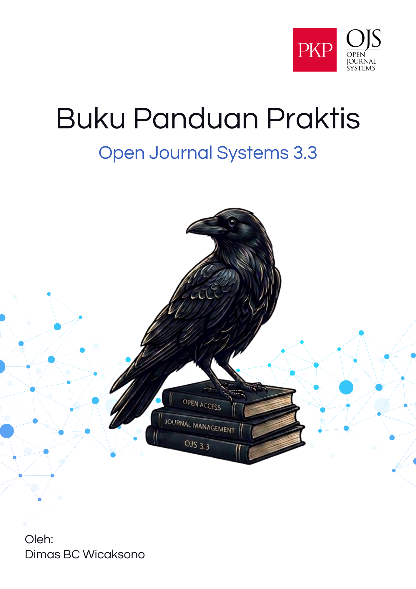

Panduan Praktis Pengelolaan Jurnal OJS 3.3

Buku Panduan Komprehensif Manajemen Editorial dan Sistem Jurnal Elektronik
Prakata
Selamat datang di Panduan Praktis Pengelolaan Jurnal OJS 3.3. Buku ini disusun tidak hanya sebagai referensi teknis yang kaku, melainkan sebagai kawan pendamping praktis bagi para Editor, Manajer Jurnal, dan pengelola publikasi ilmiah di Indonesia yang sehari-harinya bergelut dengan Open Journal Systems (OJS).
Seiring dengan meningkatnya kebutuhan akan tata kelola jurnal yang transparan, akuntabel, dan terstandarisasi secara global (seperti persyaratan DOAJ dan akreditasi SINTA), peran pengelola jurnal tidak lagi sekadar administratif. Editor modern dituntut untuk menguasai alur kerja digital, memahami metadata, hingga melakukan diseminasi aktif.
Buku ini disusun secara sistematis menjadi lima bagian utama:
- Bagian I: Pengenalan ekosistem dan persiapan dasar konfigurasi jurnal.
- Bagian II: Alur kerja dari kacamata penulis (Author).
- Bagian III: Inti dari tata kelola editorial (dari penerimaan, penugasan, review, hingga keputusan).
- Bagian IV: Eksekusi pasca-review, meliputi perbaikan bahasa (copyediting), tata letak, dan penerbitan edisi.
- Bagian V: Strategi memastikan artikel yang telah terbit dapat ditemukan (discoverable) oleh mesin pencari global dan manusia.
Gunakan buku ini tidak sekadar untuk dibaca dari halaman pertama hingga akhir, namun sebagai referensi darurat ketika Anda menghadapi tantangan di lapangan.
Daftar Isi Terpadu
Buku ini terbagi ke dalam bab-bab berikut:
- Aparatus Depan
- Bagian I: Pengenalan dan Persiapan Jurnal
- Bagian II: Alur Kerja Penulis (Author)
- Bagian III: Alur Kerja Editorial
- Bagian IV: Pasca-Review, Produksi, dan Penerbitan
- Aparatus Belakang
Cara Menggunakan Buku Ini
Buku panduan ini dirancang dengan format How-To modern yang mengutamakan kecepatan eksekusi teknis tanpa mengorbankan kedalaman konseptual. Agar Anda dapat menyerap informasi secara maksimal, buku ini menggunakan beberapa elemen visual khusus berupa kotak (boks) yang memisahkan instruksi harian dari teori atau penyelesaian masalah darurat.
Berikut adalah panduan membaca elemen-elemen tersebut:
1. Kotak Pemantik Bab
Setiap awal bab selalu diawali dengan kotak Pemantik Bab. Bagian ini ditujukan untuk memberikan gambaran konseptual secara singkat kepada Anda mengenai mengapa materi di dalam bab tersebut sangat penting bagi reputasi jurnal Anda. Membaca pemantik bab akan memberi Anda alasan (why) sebelum Anda mempelajari tata caranya (how).
Pemantik Bab Ini adalah contoh desain kotak pemantik bab. Bagian ini menjelaskan filosofi, latar belakang masalah, dan nilai strategis dari fitur yang akan Anda pelajari di halaman selanjutnya.
2. Jalur Eksekusi Cepat
Instruksi teknis yang menuntut Anda untuk melakukan serangkaian klik di antarmuka sistem OJS selalu disajikan dalam format daftar bernomor (numbered lists) dengan tajuk Jalur Eksekusi Cepat. Ini dirancang khusus agar mudah dipindai (skimmable). Saat Anda sedang terburu-buru mengoperasikan dasbor OJS, Anda cukup melompat langsung ke bagian ini.
Jalur Eksekusi Cepat: Contoh Tugas
- Masuk ke halaman Dashboard.
- Klik tombol cetak tebal yang merujuk pada antarmuka, misalnya Settings.
- Ikuti urutan langkah demi langkah hingga selesai.
3. Kotak Troubleshooting
Di dunia nyata, teori tidak selalu berjalan mulus. Sering kali Anda dihadapkan pada skenario galat (error), penulis yang tidak mengikuti format, atau email sistem yang macet. Untuk itu, setiap bab dilengkapi kotak Troubleshooting yang mengangkat satu kasus kegagalan terpopuler.
Troubleshooting: Contoh Masalah
Masalah: Deskripsi singkat mengenai tantangan teknis atau galat yang umum terjadi di lapangan saat Anda mencoba menjalankan fungsi terkait.
Solusi Cepat: Langkah darurat yang tervalidasi untuk keluar dari masalah tersebut tanpa merusak tatanan database sistem jurnal Anda.
4. Kotak Catatan Kritis dan Catatan Lapangan
Untuk peringatan yang menyangkut kebijakan indeksasi (seperti dari DOAJ, SINTA, atau Scopus) atau hal-hal yang berpotensi merusak kelestarian data jurnal, kami menggunakan kotak catatan khusus.
Catatan Kritis: Berisi larangan keras atau anjuran vital yang apabila dilanggar dapat membahayakan proses akreditasi atau distribusi DOIs.
Catatan dari Lapangan: Menyajikan contoh studi kasus nyata dari jurnal-jurnal di Indonesia yang pernah mengalami masalah atau kesuksesan dari suatu kebijakan tertentu.
5. Latihan Bab
Di bagian akhir hampir setiap bab praktikal, terdapat bagian Latihan Bab yang berisi satu atau dua skenario simulasi. Sangat disarankan bagi Editor baru untuk mempraktikkan skenario ini di pangkalan data dummy atau pada artikel percobaan sebelum terjun ke naskah penulis yang sesungguhnya.
Dengan memahami kelima elemen di atas, Anda siap menavigasi buku ini dan merevolusi tata kelola jurnal OJS 3.3 Anda. Selamat bertugas!
Bab 1: Gambaran Umum Alur Kerja Editorial OJS
Pemantik Bab Di era digital, menerbitkan jurnal ilmiah elektronik bukan lagi sekadar mengunggah file PDF ke sebuah situs web. Jurnal membutuhkan sistem tata kelola yang terstandardisasi, transparan, dan mampu merekam jejak audit (audit trail). Bab ini akan membawa Anda memahami struktur operasional, evolusi sistem, dan empat fase alur kerja utama pada platform Open Journal Systems (OJS) 3.3.
Untuk memulai perjalanan Anda sebagai pengelola jurnal yang profesional, kita perlu memahami terlebih dahulu filosofi sistem yang akan Anda kendalikan setiap harinya. Open Journal Systems (OJS) versi 3.3 adalah perangkat lunak sumber terbuka (open-source) yang dirancang secara modular untuk memfasilitasi pengelola jurnal dalam mengatur proses editorial secara sistematis. Memahami alur kerja ini berperan mutlak dalam memastikan proses penerbitan memenuhi standar integritas akademik global.
1.1 Fondasi, Evolusi, dan Lanskap Kontemporer OJS
Latar Belakang: Krisis Publikasi dan Akses Terbuka
Pengembangan OJS berakar dari fenomena krisis jurnal ilmiah (serials crisis) pada akhir abad ke-20. Pada periode tersebut, biaya langganan jurnal yang dikuasai penerbit komersial melonjak tajam, sehingga membebani anggaran perpustakaan institusi pendidikan. Kondisi ini membatasi akses publik terhadap hasil penelitian yang mayoritas didanai oleh anggaran publik, karena literatur tersebut terkunci di balik sistem berbayar (paywall) komersial (PKP, 2026, https://pkp.sfu.ca/about/).
Situasi ini memicu munculnya gerakan Akses Terbuka (Open Access). Merespons kebutuhan infrastruktur untuk penerbitan mandiri, John Willinsky mendirikan Public Knowledge Project (PKP) pada tahun 1998. OJS dirancang sebagai solusi teknis untuk menekan biaya operasional penerbitan jurnal, sehingga memungkinkan institusi pendidikan di seluruh dunia untuk mengelola jurnal secara profesional dan independen.
Sorotan Standar Global: Budapest Open Access Initiative (BOAI)
Standar akses terbuka secara formal dikukuhkan melalui Budapest Open Access Initiative (BOAI) pada Februari 2002. BOAI menetapkan bahwa literatur ilmiah harus tersedia secara gratis di internet. Pengguna diizinkan untuk membaca, mengunduh, menyalin, mendistribusikan, atau menautkan teks lengkap artikel tanpa hambatan finansial, hukum, atau teknis di luar batas konektivitas internet.
Sumber: https://www.budapestopenaccessinitiative.org/read/
Arsitektur Teknologi dan Evolusi OJS
Sejak peluncurannya pada tahun 2001, OJS mengalami pembaruan arsitektur untuk menyesuaikan dengan standar keamanan dan kebutuhan pengguna modern:
- Era OJS 1.x dan 2.x (2000-an hingga 2016) Versi ini menggunakan arsitektur monolitik berbasis PHP prosedural. OJS 2.x memiliki stabilitas tinggi, namun kaku dalam hal kustomisasi tata letak. Perubahan antarmuka mengharuskan pengelola mengubah kode inti (core code), yang berisiko menimbulkan galat sistem.
- Perubahan Arsitektur OJS 3.x (2016) Tim PKP melakukan penulisan ulang sistem secara menyeluruh (total rewrite). OJS 3.x memisahkan arsitektur back-end dan front-end, serta mengadopsi kerangka kerja Bootstrap untuk memastikan antarmuka situs responsif di berbagai perangkat. Selain itu, manajemen peran pengguna disatukan dalam satu dasbor, sehingga pengguna tidak perlu berpindah antarmuka (PKP Docs, 2021).
- Versi OJS 3.4 dan 3.5 LTS (Kontemporer) Versi dukungan jangka panjang (Long-Term Support) berfokus pada optimalisasi Pengalaman Pengguna (User Experience) dan kepatuhan regulasi. Dasbor editorial dirancang agar editor dapat memantau seluruh antrean naskah secara komprehensif. OJS 3.5 LTS juga menerapkan fitur undangan pengulas mandiri (self-invitation) untuk mematuhi regulasi privasi data global, seperti General Data Protection Regulation (GDPR) dari Uni Eropa.
1.2 OJS di Indonesia: Konteks Nasional
Hingga tahun 2025, OJS digunakan oleh lebih dari 58.000 jurnal di 156 negara (PKP, 2026). Indonesia tercatat sebagai negara pengguna OJS terbesar di dunia, mencakup sekitar 40% dari total instalasi global. Sebagian besar jurnal di Indonesia beroperasi menggunakan domain institusi (.ac.id) dan mengimplementasikan model Diamond Open Access, di mana proses publikasi dan akses artikel digratiskan.
Adopsi massal OJS di Indonesia didorong oleh kebijakan Kementerian Pendidikan, Kebudayaan, Riset, dan Teknologi (Kemendikbudristek). Untuk memenuhi syarat akreditasi di portal ARJUNA (Akreditasi Jurnal Nasional) dan sistem pemeringkatan SINTA, pengelola jurnal diwajibkan menggunakan sistem manajemen jurnal elektronik. OJS memenuhi kriteria verifikasi asesor karena kemampuannya merekam riwayat penelaahan (peer review) secara transparan.
Catatan dari Lapangan: Bencana Administrasi Akreditasi
Sebuah kasus nyata yang sangat sering terjadi di kalangan pengelola jurnal kampus di Indonesia: Saat awal merintis jurnal, karena merasa antarmuka OJS terlalu kompleks, editor tingkat pertama (desk editor) memilih menggunakan WhatsApp untuk menagih naskah dari penulis, dan menggunakan email pribadi (seperti Gmail) untuk mengirim hasil revisi dari pengulas (reviewer). Selama satu tahun pertama, jurnal berhasil terbit.
Bencana terjadi pada tahun kedua ketika mereka mengajukan akreditasi ke portal ARJUNA. Asesor meminta bukti korespondensi blind review. Karena semua komunikasi terjadi di WhatsApp dan email pribadi, sistem OJS mencatat naskah tersebut “langsung diterbitkan tanpa review” (bypass). Akibat ketiadaan jejak audit (audit trail) di dalam OJS, jurnal tersebut dinyatakan gugur akreditasi dengan dugaan “publikasi predator”. Kasus ini menegaskan bahwa penggunaan fitur komunikasi internal OJS bersifat mutlak.
1.3 Sistem Manajemen Peran pada Ekosistem OJS
OJS 3.3 memiliki sistem manajemen peran yang fleksibel, memungkinkan pengguna memegang peran ganda (untuk tim kecil) atau membaginya secara spesifik (untuk tim redaksi profesional).
| Peran | Tanggung Jawab Utama |
|---|---|
| Journal Editor | Memiliki akses penuh terhadap pengaturan sistem, mengelola pengguna, dan mengambil keputusan akhir (penerimaan/penolakan) naskah. |
| Section Editor | Mengelola lalu lintas naskah pada bagian/rubrik tertentu, mulai dari tahap penugasan pengulas hingga rekomendasi keputusan. |
| Author | Mengunggah naskah awal, melengkapi metadata (abstrak, afiliasi), dan melakukan perbaikan sesuai instruksi editor. |
| Reviewer | Pakar independen yang bertugas mengevaluasi substansi naskah secara objektif dan memberikan rekomendasi kelayakan. |
| Copyeditor | Memeriksa ketepatan tata bahasa, ejaan, dan kesesuaian format referensi dengan gaya selingkung jurnal. |
| Layout Editor | Memformat naskah final menjadi dokumen publikasi (Galleys) seperti PDF, HTML, atau XML. |
| Proofreader | Melakukan verifikasi akhir pada tata letak Galleys sebelum artikel diterbitkan secara publik. |
1.4 Mekanisme Alur Kerja Editorial yang Terintegrasi
OJS mengotomatisasi siklus penerbitan naskah ilmiah melalui empat tahapan utama yang berurutan:
[Submission] → [Review] → [Copyediting] → [Production]
- Submission (Pengajuan Naskah) Penulis mengirimkan naskah dan memasukkan metadata secara terstruktur. Editor kemudian melakukan tinjauan kelayakan awal (desk review). Keputusan di tahap ini meliputi: Send to Review (untuk artikel riset), Accept and Skip Review (untuk naskah non-riset seperti opini redaksi), atau Decline Submission.
- Review (Penelaahan Sejawat) Tahap ini mengelola proses evaluasi substansi naskah. OJS memfasilitasi berbagai metode, termasuk blind review maupun open review. Sistem akan melacak tenggat waktu evaluasi, mengirim peringatan otomatis, dan mendokumentasikan masukan dari pengulas.
- Copyediting (Penyuntingan Naskah) Naskah yang telah lolos ulasan diserahkan untuk proses penyuntingan kebahasaan. Komunikasi terkait perbaikan tata bahasa dan format berlangsung di dalam platform hingga naskah mencapai versi final (clean copy).
- Production (Produksi dan Publikasi) Teks akhir diformat menjadi Galleys (PDF/HTML/XML). Setelah pemeriksaan pracetak selesai, editor mendaftarkan artikel tersebut ke dalam daftar isi terbitan (volume dan isu tertentu) untuk dipublikasikan.
1.5 Integritas Akademik, Interoperabilitas, dan Preservasi
OJS dirancang agar jurnal dapat terintegrasi dengan ekosistem penelitian global dan menjaga standar etika publikasi melalui fitur-fitur berikut:
- Interoperabilitas Metadata (OAI-PMH): OJS menggunakan protokol Open Archives Initiative Protocol for Metadata Harvesting (OAI-PMH). Protokol ini memungkinkan basis data eksternal (seperti Google Scholar, DOAJ, dan Garuda) untuk secara otomatis menarik metadata artikel segera setelah dipublikasikan (PKP Docs).
- Integrasi Infrastruktur Digital: OJS mendukung aktivasi DOI (Crossref) untuk menjamin tautan permanen artikel, ORCID untuk memverifikasi profil peneliti, dan ROR (Research Organization Registry) untuk standardisasi data afiliasi institusi.
- Jejak Audit (Audit Trail): Sistem secara otomatis merekam seluruh aktivitas (pengunggahan berkas, korespondensi, dan perubahan status naskah) di dalam Activity Log. Catatan ini menjadi bukti validitas operasional saat pengajuan akreditasi atau investigasi etika publikasi.
- Preservasi Jangka Panjang: OJS mendukung pengarsipan terdistribusi melalui LOCKSS dan PKP Preservation Network (PKP PN). Jaringan dark archive ini menjamin artikel tetap tersimpan dan dapat diakses di masa depan meskipun server utama jurnal mengalami gangguan permanen.
1.6 Struktur Pembelajaran Kursus
Buku panduan ini menguraikan tahapan manajemen jurnal secara sekuensial berdasarkan alur kerja OJS 3.3:
| Bab | Topik | Tahap OJS |
|---|---|---|
| Bab 1–2 | Persiapan Dasar | Tahap Pra-OJS |
| Bab 3 | Gambaran Umum | Pengenalan Sistem |
| Bab 4 | Pengajuan Naskah | Tahap Submission |
| Bab 5 | Merespons Naskah | Tahap Submission |
| Bab 6 | Pemeriksaan Plagiasi | Pra-Review |
| Bab 7 | Menugaskan Reviewer | Tahap Review |
| Bab 8 | Panduan Reviewer | Tahap Review |
| Bab 9 | Keputusan Editorial | Tahap Review |
| Bab 10 | Penyuntingan | Tahap Copyediting |
| Bab 11 | Produksi | Tahap Production |
| Bab 12 | Manajemen Edisi | Tahap Publikasi |
| Bab 13 | Manajemen Metadata | Visibilitas |
| Bab 14 | Diseminasi Eksternal | Pasca-Publikasi |
1.7 Persiapan Praktik dan Antisipasi Kendala
Untuk memaksimalkan pembelajaran buku ini, pengelola disarankan untuk melakukan uji coba pada jurnal simulasi (jurnal percobaan). Latihan ini memungkinkan Anda menguji tombol-tombol krusial (seperti Decline Submission atau Send to Review) tanpa berisiko menghapus data pada sistem jurnal yang aktif.
Troubleshooting: Kendala Login dan Navigasi Awal
Masalah: Pengelola baru sering kali mengeluh, “Saya sudah berhasil login, tapi layar saya kosong dan saya tidak bisa melihat menu editorial apapun!”
Solusi Cepat:
- Periksa peran (Roles) akun Anda. Dalam OJS, sebuah akun bisa saja terdaftar hanya sebagai Reader atau Author. Jika peran Anda bukan Journal Manager atau Journal Editor, dasbor editorial di sisi kiri layar tidak akan muncul.
- Minta admin IT kampus atau Site Administrator untuk masuk ke menu Users & Roles, mencari nama Anda, dan mencentang peran Journal Manager pada profil akun Anda.
- Setelah itu, logout dan login kembali. Menu navigasi kiri sekarang akan terlihat sepenuhnya.
Referensi panduan teknis resmi dapat diakses melalui PKP Docs (https://docs.pkp.sfu.ca) dan modul pelatihan daring di PKP School (https://pkpschool.sfu.ca).
Latihan Bab 1
Latihan 1.1: Identifikasi Jalur Alur Kerja Naskah
Tinjau tiga jenis naskah di bawah ini. Tentukan tahapan alur kerja mana saja (dari Submission hingga Production) yang harus dilewati oleh setiap dokumen di dalam sistem OJS.
- Artikel Penelitian Empiris (Naskah utama berisi metode dan hasil riset lapangan).
- Catatan Editorial (Pengantar edisi yang ditulis oleh Editor Kepala, berisi ringkasan topik terbitan berjalan).
- Resensi Buku (Tinjauan singkat atas sebuah buku akademik yang ditulis oleh pakar undangan).
Panduan Fasilitator: Diskusikan secara kelompok mengenai penerapan fitur “Accept and Skip Review” pada OJS. Tekankan urgensi penerapan alur Review penuh bagi artikel penelitian empiris untuk menjamin standar objektivitas (peer-review), serta kapan pengecualian dapat diterapkan secara etis pada naskah non-riset.
Checklist Bab 1
- Memahami definisi serials crisis dan peran OJS dalam memfasilitasi gerakan Akses Terbuka.
- Mengetahui urgensi OJS sebagai syarat teknis akreditasi jurnal nasional di Indonesia (ARJUNA/SINTA).
- Mampu mengidentifikasi urutan keempat tahapan editorial utama (Submission, Review, Copyediting, Production).
- Memahami dampak negatif komunikasi editorial di luar sistem (aplikasi pihak ketiga) terhadap jejak audit (audit trail).
- Mengenali fungsi dasar integrasi standar global seperti OAI-PMH, Crossref, dan PKP PN.
Ringkasan Bab
Open Journal Systems (OJS) berfungsi sebagai infrastruktur digital komprehensif yang dirancang untuk mendukung penerbitan ilmiah profesional dan dapat diaudit. Dengan memahami arsitektur sistem, yang terbagi dalam fase Pengajuan, Penelaahan, Penyuntingan, dan Produksi, pengelola jurnal dapat memetakan pembagian tugas secara spesifik antarperan. Kepastian alur kerja di dalam OJS menjamin tersedianya jejak audit secara otomatis, memastikan bahwa jurnal mematuhi etika publikasi internasional, serta memenuhi syarat standar akreditasi dan indeksasi global.
Bab 2: Pengaturan Identitas dan Kebijakan Dasar Jurnal
Pemantik Bab Banyak jurnal ditolak secara tragis oleh indeksator bergengsi seperti DOAJ dan SINTA bukan karena kualitas artikelnya buruk, melainkan karena halaman identitas, fokus, dan kebijakan akses terbukanya dibiarkan kosong atau ambigu. Tanpa kebijakan yang tegas di tahap awal ini, pengelola jurnal, penulis, dan pembaca akan terjebak dalam masalah kepemilikan hukum di kemudian hari.
Untuk menghindari jebakan fatal tersebut, bab ini secara khusus disusun bagi pengelola jurnal yang kerap kebingungan menerjemahkan SK ISSN ke dalam formulir digital. Mengisi pengaturan jurnal bukanlah sekadar formalitas mengeklik tombol Save; ini adalah proses mendeklarasikan konstitusi keilmuan jurnal Anda kepada dunia. Mari kita mulai proses eksekusinya.
2.1 Elemen Identitas Utama Jurnal (Journal Identity)
Identitas jurnal adalah wajah pertama yang dilihat oleh pembaca dan mesin pengindeks. Berbeda dengan profil media sosial yang bisa diubah sesuka hati, identitas jurnal harus berpegang teguh pada dokumen legalitas.
Jalur Eksekusi Cepat: Mengisi Masthead
- Masuk ke dasbor OJS sebagai Journal Manager.
- Pada panel kiri, navigasikan ke menu Settings > Journal > Masthead.
- Isi kolom Journal name agar persis sama dengan nama yang terdaftar di SK ISSN (jangan gunakan akronim di kolom ini).
- Masukkan akronim di kolom Journal initials (contoh: JAB).
- Pada bagian Publisher, tuliskan nama fakultas atau himpunan profesi penjamin mutu jurnal.
- Cantumkan e-ISSN di kolom yang disediakan.
- Klik tombol Save di sudut kanan bawah.
Troubleshooting: Tombol Save Tidak Merespons
Masalah: Anda sudah mengeklik tombol Save, namun layar tidak memuat ulang (loading) dan perubahan tidak tersimpan.
Solusi Cepat: Ini hampir selalu terjadi karena Anda lupa mengisi kolom yang ditandai dengan bintang merah (asterisk). OJS versi 3.3 terkadang tidak memberikan peringatan eror mencolok jika isian wajib pada tab bahasa lain (jika jurnal Anda dwibahasa) dibiarkan kosong. Gulir (scroll) ke atas, cari ikon bendera bahasa (misal: Indonesia dan English), dan pastikan kolom “Nama Jurnal” di kedua tab bahasa tersebut sudah terisi.
2.2 Fokus dan Ruang Lingkup (Focus and Scope)
Mendefinisikan Focus and Scope secara eksplisit adalah langkah krusial untuk mencegah jurnal Anda dianggap sebagai jurnal “gado-gado” yang menerima topik apa saja. Jurnal dengan cakupan yang terlalu luas sering kali kesulitan menembus indeksasi bereputasi karena dianggap tidak memiliki batasan keilmuan yang jelas.
Cara Merumuskan Focus and Scope yang Efektif:
- Definisikan Disiplin Ilmu Spesifik: Alih-alih menulis cakupan luas seperti “Ilmu Pendidikan”, tuliskan “Pendidikan Dasar dan Menengah”. Dalam sistem akreditasi nasional (ARJUNA), cakupan ilmu yang semakin spesifik akan memberikan skor penilaian yang semakin tinggi. Namun, berhati-hatilah: konsekuensi dari ruang lingkup yang terlalu sempit adalah kesulitan mencari naskah yang relevan. Mengingat akreditasi mensyaratkan jumlah terbitan minimal per tahun, redaksi harus sangat matang menyeimbangkan antara spesialisasi topik dan ketersediaan pasokan naskah.
- Tentukan Target Pembaca (Readership): Jelaskan secara spesifik siapa yang diharapkan membaca dan memanfaatkan artikel di jurnal Anda, misalnya praktisi kebijakan, guru sekolah dasar, atau peneliti klinis.
- Sebutkan Topik yang Ditolak: Sangat direkomendasikan untuk secara tegas menyebutkan topik-topik yang beririsan namun tidak akan diterima oleh jurnal demi efisiensi proses editorial.
Sorotan Standar Global: DOAJ Principles of Transparency
Lembaga DOAJ bersama COPE, OASPA, dan WAME mensyaratkan bahwa situs web jurnal wajib memiliki pernyataan yang eksplisit mengenai cakupan fokusnya. Nama jurnal harus unik dan tidak meniru penerbit lain. Definisi target pembaca dan kebijakan pengajuan naskah (seperti larangan pengiriman naskah ganda) harus dipaparkan tanpa ambiguitas (DOAJ, 2026, https://doaj.org/apply/transparency/).
Catatan dari Lapangan
Beberapa pengelola jurnal sering menghadapi situasi di mana mereka menerima banyak sekali kiriman naskah, tetapi mayoritas naskah tersebut sama sekali tidak relevan dengan fokus keilmuan jurnal. Hal ini kerap terjadi karena halaman Focus and Scope hanya diisi dengan satu paragraf normatif yang sangat luas. Akibatnya, editor tingkat pertama (desk editor) harus menghabiskan waktu berjam-jam secara sia-sia untuk menolak naskah-naskah yang salah sasaran.
2.3 Dewan Redaksi (Editorial Board)
Kredibilitas sebuah jurnal tercermin dari komposisi dewan redaksinya. Di OJS 3.3, Anda dapat mengelola profil dewan redaksi melalui menu Users & Roles. Namun, yang lebih penting daripada cara menambahkannya secara teknis adalah strategi perekrutannya.
Menghindari Jebakan “In-House Journal” Kesalahan fatal yang sering dilakukan oleh pengelola jurnal kampus adalah mengisi struktur dewan redaksi (mulai dari Editor in Chief hingga Section Editor) dengan dosen-dosen dari satu program studi atau satu fakultas yang sama. Praktik ini dikenal sebagai in-house journal dan sangat dihindari oleh lembaga pengindeks global.
Untuk membangun dewan redaksi yang kredibel, pastikan:
- Keragaman Institusional: Rekrut editor dari universitas atau lembaga penelitian lain, idealnya yang memiliki reputasi yang diakui di bidang keilmuan jurnal Anda.
- Keragaman Geografis: Jika jurnal Anda menargetkan cakupan nasional, usahakan memiliki editor dari berbagai provinsi. Jika menargetkan cakupan internasional, editor dari berbagai negara menjadi syarat mutlak.
- Keahlian Spesifik: Setiap editor sebaiknya memiliki rekam jejak publikasi (bisa dibuktikan dengan tautan profil SINTA, ORCID, atau Scopus) yang sejalan dengan fokus jurnal.
Catatan dari Lapangan
Beberapa pengelola jurnal baru, demi mempercepat proses indeksasi atau akreditasi, diam-diam mencatut nama profesor ternama dari universitas bergengsi sebagai anggota dewan redaksi tanpa meminta izin. Mereka berasumsi bahwa hal ini tidak akan diperiksa secara mendetail. Namun, ketika asesor SINTA atau tim verifikasi DOAJ melakukan konfirmasi via surel (email) secara langsung kepada tokoh yang dicatut tersebut, pelanggaran ini terbongkar dan jurnal langsung mendapat sanksi daftar hitam (blacklist).
Sorotan Standar Global: Sanksi DOAJ dan COPE atas Dewan Fiktif
Berdasarkan Principles of Transparency and Best Practice in Scholarly Publishing, indeksator utama mewajibkan pencantuman nama lengkap dan afiliasi institusi yang divalidasi. Praktik memalsukan dewan redaksi (fake editorial board) dianggap sebagai pelanggaran etika akademik berat. DOAJ menegaskan bahwa jika penggunaan nama pakar tanpa izin tertulis terbukti, jurnal tersebut akan langsung dicabut dan dihapus dari direktori (DOAJ & COPE, 2026, https://doaj.org/apply/transparency/).
2.4 Kebijakan Akses Terbuka dan Hak Cipta
Mengatur kebijakan akses terbuka dan hak cipta sering kali menjadi momok bagi pengelola jurnal. Banyak yang bingung membedakan antara “siapa yang memiliki artikel” dan “siapa yang boleh menerbitkan”. Mari kita pahami dengan cara yang sangat sederhana.
Hak Cipta (Copyright) vs Hak Penerbitan (Publishing Rights)
- Hak Cipta: Ini adalah status kepemilikan. Siapa pemilik naskah tersebut? Penulis adalah pemilik sah kekayaan intelektual tersebut sejak naskah ditulis.
- Hak Penerbitan: Ini adalah sekadar “izin”. Jurnal meminta izin kepada penulis untuk menjadi pihak pertama yang mempublikasikan dan menyebarkan naskah tersebut.
Catatan Kritis: Konsekuensi Merampas Hak Cipta Jika jurnal Anda memaksa penulis untuk menyerahkan hak cipta penuh (Transfer of Copyright) dengan menandatangani formulir pelimpahan hak, maka secara hukum penulis kehilangan kebebasan atas artikelnya sendiri. Penulis tidak boleh menerjemahkan, merangkum, atau bahkan mengunggah artikelnya sendiri di repositori kampus tanpa meminta izin kepada pengelola jurnal. Ini adalah praktik penerbit komersial zaman dahulu.
Jurnal Open Access modern akan membiarkan penulis mempertahankan hak ciptanya (Retain Copyright) secara penuh dan hanya meminta “hak penerbitan perdana” (first publishing rights).
Kepemilikan Artikel Setelah Terbit Berdasarkan standar Budapest Open Access Initiative (BOAI), filosofi jurnal open access sejati tidak menuntut jurnal untuk “merampas” artikel dari penulisnya. Setelah terbit, artikel tersebut tetap milik penulis seutuhnya.
Memilih Lisensi Creative Commons (CC) Jika artikel tetap milik penulis, bagaimana caranya agar dunia tahu apa yang boleh mereka lakukan dengan artikel tersebut tanpa harus mengirim surel (email) ke penulis satu per satu? Di sinilah Lisensi CC digunakan sebagai “label izin universal”. Pemilihan lisensi ini memiliki konsekuensi langsung pada indeksasi global:
- CC BY (Attribution): Ini adalah lisensi paling bebas. Pembaca boleh menyalin, mengubah, dan menyebarluaskan artikel tersebut untuk tujuan komersial sekalipun, asalkan menyebut nama penulis aslinya. Konsekuensi Indeksasi: Lisensi ini sangat dianjurkan oleh pengindeks global. DOAJ mensyaratkan penggunaan CC BY jika jurnal ingin mendapatkan pengakuan tertinggi (DOAJ Seal), dan konsorsium riset Eropa (Plan S) mewajibkan lisensi ini.
- CC BY-SA (ShareAlike): Boleh diubah dan dikomersialkan, dengan syarat karya turunannya wajib menggunakan lisensi CC BY-SA yang sama. Konsekuensi Indeksasi: Diterima oleh DOAJ, namun membatasi fleksibilitas distribusi karena sifat lisensinya yang “menular” (viral license).
- CC BY-NC (Non-Commercial): Boleh disalin dan diubah, namun dilarang keras untuk tujuan komersial/mencari uang. Konsekuensi Indeksasi: Diterima oleh DOAJ, namun banyak basis data akademik atau korporasi yang enggan mengindeks artikel dengan lisensi ini karena takut melanggar batasan komersial. Selain itu, lisensi NC berlawanan dengan prinsip dasar Open Access menurut standar BOAI yang melarang hambatan distribusi hukum.
2.5 Halaman “About the Journal” (Tentang Jurnal)
Halaman About adalah brosur digital jurnal Anda. Pengunjung, termasuk asesor akreditasi, akan membaca halaman ini untuk menilai profesionalisme pengelolaan jurnal. Berdasarkan pedoman DOAJ dan COPE, elemen-elemen berikut wajib dipaparkan di sini secara transparan:
- Transparansi Biaya (APC): Beri tahu penulis sejak awal apakah mereka harus membayar Article Processing Charges (APC) atau tidak. Jika ada biaya, cantumkan nominal pastinya sebelum mereka mengirimkan naskah (submission). Jika jurnal Anda sepenuhnya gratis, tulislah secara eksplisit: “Jurnal ini tidak memungut biaya pemrosesan artikel (APC) maupun biaya pengiriman naskah dari penulis.”
- Pernyataan Etika Publikasi: Jurnal yang kredibel harus memiliki panduan penanganan pelanggaran riset (research misconduct), pedoman penentuan kepengarangan, dan proses banding. Keputusan editorial harus secara tegas dinyatakan bebas dari diskriminasi.
- Informasi Identitas Permanen (ISSN): Tuliskan kembali nomor e-ISSN (dan p-ISSN jika ada) di halaman ini. Sangat disarankan untuk memberikan tautan hidup (hyperlink) pada nomor tersebut yang mengarah langsung ke laman validasi portal ISSN nasional. Ini akan sangat memudahkan asesor atau lembaga pengindeks memverifikasi legalitas jurnal Anda secara instan.
2.6 Panduan Penulis (Author Guidelines) dan Template Naskah
Banyak pengelola jurnal membuat kesalahan dengan mengira bahwa Author Guidelines yang baik adalah yang memaksa penulis mengirim naskah dalam format tata letak (layout) final jurnal, lengkap dengan dua kolom, format kolom yang rumit, dan header/footer khusus.
Mengapa Template Penulis Harus Sangat Sederhana? Memaksa penulis menggunakan template final layout justru akan menyusahkan tim editorial Anda sendiri. Proses penyuntingan naskah tahap awal (Copyediting) berfokus pada perbaikan substansi, ejaan, dan konsistensi tata bahasa; bukan pada desain visual.
Jika editor harus melakukan modifikasi dan track changes pada teks di dalam sebuah template layout yang terformat rapat, desain teks akan rusak, dan staf layouter di tahap produksi (Typesetting) harus bekerja dua kali untuk menyusun ulang teks yang hancur tersebut. Prinsip utama pada tahap penerimaan awal adalah: “Boring is better” (semakin polos, semakin baik).
Catatan Kritis: Masalah Teknis yang Membuat Editor Bekerja Dua Kali Penggunaan template final yang rumit sering memicu berbagai kesalahan pemformatan (formatting) oleh penulis yang membebani kerja editor:
- Pemformatan Manual (Line Breaks): Penulis sering menggunakan tombol
Enterberulang kali untuk memindahkan teks ke halaman berikutnya, atau menekanShift+Enteruntuk memotong baris secara manual. Saat teks tersebut dipindahkan ke aplikasi tata letak resmi, seluruh spasi tersebut berubah menjadi ruang kosong yang berantakan. - Daftar Pustaka Hardcoded: Penulis mengetik daftar pustaka secara manual satu per satu tanpa menggunakan aplikasi manajer referensi (seperti Mendeley, Zotero, atau EndNote). Akibatnya, jika ada kesalahan format sitasi, copyeditor harus membetulkannya huruf demi huruf.
- Kualitas Gambar Buruk: Alih-alih menyertakan gambar asli beresolusi tinggi (minimal 300 dpi), penulis sering menyisipkan hasil tangkapan layar (screenshot) beresolusi sangat rendah langsung ke dalam dokumen teks. Hal ini membuat grafik terlihat buram saat dicetak dalam PDF.
- Tabel Kompleks: Penulis menyisipkan tabel yang digambar dengan format sel rumit (bayangan, garis ganda, atau spasi enter di dalam satu sel), atau bahkan mengubah tabel teks menjadi sekadar gambar sisipan (image table) yang membuat editor tidak bisa memperbaiki salah ketik.
- Pengiriman Berkas PDF: Terbuai dengan tampilan template final layout yang cantik, penulis justru menyimpan dokumennya ke format PDF alih-alih DOCX/RTF. Copyeditor sama sekali tidak bisa melakukan penyuntingan track changes pada dokumen PDF.
Solusinya: Sediakan template kosong berformat satu kolom yang sangat sederhana untuk penulis. Wajibkan penggunaan manajer referensi untuk sitasi. Instruksikan agar penulis mengunggah tabel besar dan gambar asli sebagai berkas terpisah (Supplementary Files) pada OJS. Biarkan desain visual menjadi urusan penata letak (typesetter) di tahap akhir (Produksi), bukan urusan penulis di tahap awal.
2.7 Referensi dan Tautan Penting
Pengaturan identitas dan kebijakan jurnal adalah proses yang dinamis dan terikat pada aturan standar ekosistem penerbitan akademik global. Jika Anda membutuhkan informasi spesifik atau panduan legalitas yang lebih mendalam, kunjungi tautan-tautan resmi berikut:
- Layanan ISSN Nasional (BRIN): Tempat memverifikasi, mendaftar, dan memahami aturan penamaan jurnal di Indonesia. https://issn.brin.go.id/
- Akreditasi Jurnal Nasional (ARJUNA): Pedoman resmi dari Kemendikbudristek terkait instrumen penilaian spesialisasi dan ruang lingkup jurnal. https://arjuna.kemdikbud.go.id/
- DOAJ Principles of Transparency: Standar keterbukaan tata kelola jurnal (dewan redaksi, APC, fokus, dan hak cipta) yang diakui secara internasional. https://doaj.org/apply/transparency/
- Committee on Publication Ethics (COPE): Panduan lengkap dalam menangani pelanggaran etika dan pedoman tugas editor jurnal. https://publicationethics.org/
- Pemilih Lisensi Creative Commons (CC): Fitur interaktif untuk membantu pengelola jurnal memilih dan menghasilkan teks legal lisensi akses terbuka yang tepat. https://chooser-beta.creativecommons.org/
Checklist Pengaturan Identitas dan Kebijakan
- Nama jurnal dan ISSN yang dicantumkan di OJS sama persis dengan salinan SK ISSN.
- Focus and Scope sudah secara tegas menyebutkan batasan bidang ilmu dan target pembaca.
- Terdapat pernyataan tertulis mengenai topik naskah yang tidak akan diterima oleh jurnal.
- Dewan Redaksi memiliki keragaman afiliasi institusi (bukan jurnal yang sepenuhnya bersifat in-house).
- Tidak ada pencatutan nama tokoh akademik di dalam struktur redaksi tanpa izin tertulis.
- Kebijakan Open Access dan tipe lisensi Creative Commons (misalnya: CC BY) diumumkan dengan sangat gamblang.
- Kepemilikan artikel dinyatakan secara hukum tetap berada di tangan penulis.
- Jurnal mempublikasikan Template Naskah (Author Guidelines) yang sederhana, bukan template tata letak produksi, demi memudahkan kerja penyuntingan.
- Penjelasan mengenai Biaya Pemrosesan Artikel (APC) atau ketiadaan biaya ditulis secara tegas di halaman “Tentang Jurnal”.
Ringkasan Bab
Mengonfigurasi identitas dan kebijakan jurnal adalah langkah struktural paling krusial sebelum jurnal diterbitkan secara publik. Kebijakan yang ambigu, sentralisasi pengurus pada satu institusi, perampasan hak cipta, atau bahkan instruksi pemformatan naskah yang menyulitkan penyunting (copyeditor), tidak hanya akan berujung pada penolakan indeksator global, tetapi juga melipatgandakan beban operasional tim editorial. Pengaturan kebijakan yang jujur dan tertata rapi sejak awal adalah jaminan keberlangsungan jurnal yang berkualitas.
Bab 3: Pengelolaan e-Resources dan Manajemen Referensi
Pemantik Bab Pernahkah Anda menemukan naskah dengan argumen yang sangat meyakinkan, namun setelah diperiksa, referensi yang digunakan tidak relevan, berupa tautan rusak (broken links), atau bersumber dari blog pribadi yang tidak melalui proses penelaahan sejawat (peer-review)? Bagi pengelola jurnal, situasi ini adalah alarm bahaya. Cacatnya sitasi bukan sekadar masalah estetika tata letak, melainkan indikasi rapuhnya validitas metodologis dan replikabilitas karya ilmiah.
Bagaimana Anda dapat memastikan keandalan fondasi keilmuan naskah tersebut tanpa harus menghabiskan waktu berjam-jam untuk melakukan verifikasi manual satu per satu? Di sinilah pengelolaan sumber daya elektronik (e-resources) serta pemanfaatan perangkat lunak manajemen referensi yang terstandarisasi menjadi krusial.
Penulisan ilmiah yang kredibel selalu berdiri di atas bahu pemikiran terdahulu. Setiap klaim, data, dan teori yang dirujuk wajib diakui melalui mekanisme sitasi (citation) dan didokumentasikan secara presisi dalam daftar pustaka berdasarkan gaya selingkung (house style) yang berlaku. Untuk mengelola data bibliografi secara masif dan meminimalkan kesalahan manusia, penggunaan perangkat lunak manajemen referensi (Reference Management Software atau RMS) telah bergeser dari sekadar alat bantu menjadi kebutuhan mutlak.
Bab ini mengupas konsep dasar manajemen referensi, urgensi integritas akademik dalam sitasi, serta panduan pemanfaatan Mendeley sebagai RMS yang paling banyak diintegrasikan dalam ekosistem publikasi global, termasuk Open Journal Systems (OJS).
3.1 Konsep Sitasi dan Signifikansinya
Sitasi atau kutipan bibliografi adalah pencatatan formal berbasis struktur tertentu yang merujuk pada dokumen ilmiah terkodifikasi, seperti buku, artikel jurnal, atau himpunan data (dataset). Sitasi memberikan rincian metadata yang memadai untuk mengidentifikasi dokumen tersebut secara unik (MIT Libraries, 2009).
Di era digital, sitasi bukan lagi teks statis, melainkan data interaktif yang terhubung melalui pengenal persisten (Persistent Identifiers atau PID). Bentuk PID paling standar adalah Digital Object Identifier (DOI), yakni alamat permanen suatu artikel di internet sehingga tetap dapat diakses meskipun situs web penyedianya berubah.
Penerapan sitasi yang akurat memiliki tiga fungsi fundamental:
- Pencegahan Plagiarisme dan Pelanggaran Etik: Sitasi menjadi batas yang jelas antara gagasan orisinal penulis dengan pemikiran peneliti terdahulu. Kegagalan menyitasi dengan benar dapat menjatuhkan sanksi akademik dan merusak reputasi jurnal.
- Pengakuan Hak Intelektual: Penulisan sitasi menghargai kontribusi intelektual peneliti sebelumnya. Atribusi ini dikonversi menjadi metrik performa ilmiah, seperti h-index dan total jumlah kutipan.
- Penyusunan Peta Jalan Informasi (Citation Chaining): Daftar pustaka yang kredibel berfungsi sebagai navigasi bagi pembaca, peninjau, dan editor untuk menelusuri validitas data ke belakang maupun melacak perkembangan teori ke depan.
Sorotan Standar Global: Committee on Publication Ethics (COPE)
Committee on Publication Ethics (COPE) mengategorikan pelanggaran terhadap prinsip sitasi sebagai tindakan salah laku ilmiah (scientific misconduct). Praktik tidak etis ini dikenal sebagai manipulasi sitasi (citation manipulation), yaitu penyisipan referensi yang tidak memiliki relevansi ilmiah dengan isi artikel. Manifestasi manipulasi ini meliputi:
- Sitasi Paksaan (Coercive Citation): Editor jurnal memaksa penulis menambahkan referensi dari jurnal yang dipimpinnya demi menggelembungkan faktor dampak (Impact Factor).
- Kartel Sitasi (Citation Cartels): Kerja sama tidak etis antar-peneliti untuk saling menyitasi karya satu sama lain guna mendongkrak metrik personal.
- Sitasi Mandiri Berlebihan (Excessive Self-Citation): Sitasi berlebihan terhadap karya sendiri yang tidak relevan dengan substansi artikel.
Pengelola jurnal wajib menyusun Kebijakan Etika Publikasi yang tegas terkait integritas sitasi ini guna memitigasi risiko pencabutan indeksasi oleh basis data reputasi global. (Sumber: https://publicationethics.org/)
3.2 Perangkat Lunak Manajemen Referensi
Memproses sitasi secara manual pada draf naskah yang memiliki banyak referensi sangat rentan terhadap ketidakberaturan format. RMS hadir sebagai solusi automasi untuk mengoleksi metadata, mengorganisasi berkas digital, serta melakukan injeksi sitasi secara langsung (real-time) ke dalam perangkat lunak pengolah kata.
RMS bekerja dengan mengekstraksi dan mengekspor data bibliografi melalui format standar pertukaran data, antara lain format .ris, .bib (BibTeX), dan .xml.
Berikut adalah perbandingan empat RMS yang dominan di ranah akademik global:
| Perangkat Lunak | Keunggulan Utama | Keterbatasan | Relevansi Pengguna |
|---|---|---|---|
| Mendeley | Terintegrasi dengan ekosistem Elsevier, memiliki ekstraksi metadata PDF otomatis yang sangat akurat. Penyimpanan awan dasar gratis 2 GB. | Fleksibilitas modifikasi gaya sitasi mandiri lebih terbatas pada versi terbaru dibandingkan versi klasiknya. | Sangat direkomendasikan untuk jurnal berbasis OJS dan peneliti umum. |
| Zotero | Sangat andal menangkap metadata dari halaman web, didukung banyak fitur tambahan komunitas. Sumber terbuka dan gratis. | Kapasitas penyimpanan awan bawaan gratis relatif kecil (300 MB). | Ideal untuk riset multidisiplin dan tim dengan anggaran terbatas. |
| EndNote | Penyimpanan awan tidak terbatas (pada versi premium), fitur penyaringan duplikasi tingkat lanjut, integrasi optimal dengan Web of Science. | Kurva pembelajaran cukup curam, biaya lisensi berbayar relatif mahal. | Standar emas untuk institusi besar dan peneliti tinjauan sistematis. |
| RefWorks | Sepenuhnya berbasis web (cloud-based), memudahkan kolaborasi institusional tanpa instalasi aplikasi lokal. | Ketergantungan penuh pada koneksi internet. | Umumnya digunakan jika universitas melanggan paket layanannya. |
Bab ini berfokus pada Mendeley karena aksesibilitasnya yang gratis, ketersediaan lintas platform, serta adopsi yang sangat masif di kalangan peneliti dan pengelola jurnal di Indonesia.
3.3 Pengenalan Mendeley
Mendeley telah bertransisi sepenuhnya dari arsitektur lokal lama menuju ekosistem terintegrasi baru yang berpusat pada Mendeley Reference Manager (MRM). Ekosistem digital Mendeley saat ini terdiri atas tiga komponen interaktif utama:
- Mendeley Reference Manager (MRM): Aplikasi utama yang mensinkronkan basis data bibliografi lokal secara otomatis dengan peladen awan Mendeley.
- Mendeley Web Importer (MWI): Pengaya peramban (browser extension) yang berfungsi mengekstraksi metadata artikel ilmiah secara langsung dari situs web jurnal tanpa perlu mengunduh berkas PDF.
- Mendeley Cite: Aplikasi pihak ketiga (add-in) yang dipasang pada Microsoft Word untuk mengelola sitasi secara langsung.
Keunggulan arsitektur modern Mendeley meliputi ekstraksi metadata otomatis berbasis kecerdasan buatan, pencarian teks penuh di dalam dokumen PDF, dan sinkronisasi awan lintas platform (Windows, macOS, Linux, web).
3.4 Instalasi Mendeley
Untuk membangun sistem manajemen referensi yang stabil, pengguna harus memasang ekosistem Mendeley secara berurutan.
Jalur Eksekusi Cepat: Instalasi Ekosistem Mendeley
- Pembuatan Akun Elsevier: Kunjungi situs resmi Mendeley (www.mendeley.com). Klik tombol Create a free account di sudut kanan atas. Masukkan alamat surel aktif (disarankan menggunakan surel institusi
.ac.id). Lengkapi nama depan, nama belakang, kata sandi, dan data profil akademik, lalu klik Create Account. - Mengunduh dan Memasang Mendeley Reference Manager: Akses menu Download pada situs Mendeley. Klik tombol unduh sesuai sistem operasi yang digunakan. Jalankan berkas instalasi dan ikuti instruksi Setup Wizard hingga selesai.
- Pemasangan Mendeley Web Importer: Buka aplikasi MRM, akses menu Tools, lalu pilih Install Mendeley Web Importer. Anda akan diarahkan ke toko ekstensi peramban. Klik konfirmasi pemasangan. Ikon Mendeley akan muncul di sudut kanan atas peramban.
- Pemasangan Mendeley Cite pada Microsoft Word: Buka aplikasi MRM, akses menu Tools, lalu pilih Install Mendeley Cite for Microsoft Word. Laman Microsoft AppSource akan terbuka. Klik Get it now dan selesaikan validasi akun Microsoft. Buka aplikasi Microsoft Word. Panel Mendeley Cite akan tersedia pada tab menu References.
Troubleshooting: Mendeley Cite Tidak Muncul di Word
Masalah: Anda sudah menginstal Mendeley Cite dari aplikasi MRM, tetapi saat membuka Microsoft Word, tab References tetap kosong dari ikon Mendeley.
Solusi Cepat: Ini sering terjadi karena sinkronisasi akun Microsoft. Pastikan Anda login ke aplikasi Word menggunakan akun Microsoft yang sama dengan saat mengunduhnya. Jika masih tidak muncul, klik menu Insert > Get Add-ins > klik tab My Add-ins, lalu klik Refresh di sudut kanan atas. Mendeley Cite akan muncul di sana.
3.5 Memasukkan dan Memvalidasi Referensi
Langkah awal terbaik adalah mengumpulkan berkas-berkas PDF artikel hasil unduhan dari basis data ilmiah terpercaya ke dalam satu folder khusus di penyimpanan lokal komputer.
Metode Memasukkan Dokumen ke Mendeley:
- Seret dan Lepas (Drag and Drop): Seret berkas PDF dari File Explorer dan lepaskan di area panel konten utama aplikasi MRM.
- Menambahkan Berkas Manual: Klik tombol Add new di sudut kiri atas MRM, pilih Files from computer, dan pilih dokumen yang diinginkan.
- Entri Data Manual: Untuk dokumen non-digital, klik Add new, pilih Add manual entry, lalu masukkan parameter bibliografi secara mandiri.
- Impor Berkas (.ris/.bib): Untuk data dari basis data seperti Scopus, klik Add new lalu Import library, dan pilih format berkas pertukaran data yang sesuai.
Catatan Teknis: Melengkapi dan Memvalidasi Metadata Meskipun Mendeley mengekstraksi metadata secara otomatis, kesalahan dapat terjadi (misalnya judul tertulis kapital semua atau nama jurnal kosong). Untuk memperbaikinya:
- Klik pada artikel yang metadatanya tidak lengkap di panel tengah MRM.
- Pada panel informasi di sisi kanan, gulir ke bawah hingga menemukan kolom Catalog IDs.
- Cari nomor DOI dari artikel tersebut di internet, tempelkan ke kolom DOI di Mendeley.
- Klik ikon pencarian (kaca pembesar). Mendeley akan menarik data bibliografi yang valid dari lembaga registrasi seperti Crossref untuk menggantikan data yang rusak.
3.6 Pengelolaan Berkas Referensi
Mendeley menyediakan instrumen untuk menjaga kerapian pangkalan data pustaka Anda.
- Fitur Koleksi (Collections): Buat koleksi baru pada panel kiri untuk mengelompokkan referensi berdasarkan edisi jurnal atau proyek naskah.
- Tanda Khusus (Tags): Sisipkan kata kunci spesifik pada kolom Tags untuk mempermudah penyaringan pencarian.
- Penyaringan Duplikasi: Rutin periksa daftar penulis melalui fitur saringan (Filter) untuk memastikan tidak ada entri ganda untuk artikel yang sama. Hapus entri dengan metadata yang kurang lengkap.
- Alat Penanda (Highlighting dan Sticky Notes): Klik dua kali entri artikel untuk membuka pembaca PDF internal Mendeley. Gunakan alat penanda warna dan sisipkan catatan pada teks penting. Catatan ini tersimpan secara permanen.
3.7 Memasukkan Sitasi ke Microsoft Word
Setelah pustaka referensi tersimpan rapi, proses penulisan sitasi dan pembuatan daftar pustaka dapat diotomatisasi melalui Microsoft Word.
Jalur Eksekusi Cepat: Prosedur Injeksi Sitasi
- Buka naskah di Microsoft Word.
- Akses tab menu References, lalu klik ikon Mendeley Cite. Masuk menggunakan akun Elsevier Anda.
- Letakkan kursor tik pada teks yang membutuhkan rujukan.
- Cari kata kunci (nama penulis atau judul) di kolom pencarian panel Mendeley Cite.
- Centang kotak referensi yang sesuai, lalu klik Insert Citation. Kode sitasi dinamis akan tersemat.
Jalur Eksekusi Cepat: Pengaturan Gaya Sitasi dan Pembuatan Daftar Pustaka
- Pada panel Mendeley Cite, buka tab Citation Settings dan klik Change citation style.
- Pilih gaya selingkung yang digunakan jurnal tujuan, misalnya American Psychological Association (APA) edisi ke-7 atau IEEE. Jika tidak tersedia, klik Search for another style untuk mencari dan mengunduhnya.
- Arahkan kursor ke bagian akhir dokumen tempat daftar pustaka akan diletakkan.
- Klik ikon tiga titik horizontal (More) pada panel Mendeley Cite, lalu pilih Insert Bibliography.
- Klik Continue. Daftar pustaka akan dibangkitkan secara otomatis dan akan diperbarui setiap kali terdapat penambahan sitasi di dalam teks.
Catatan dari Lapangan: Mitigasi Masalah oleh Editor Jurnal
Editor sering mendapati draf naskah awal dengan sumber referensi yang tidak dapat dilacak. Hal ini dapat dimitigasi melalui Audit Sitasi Elektronik:
- Periksa Kode Bidang Otomatis: Klik salah satu tanda sitasi dalam naskah. Jika teks tersebut berubah menjadi berlatar belakang abu-abu, berarti dokumen menggunakan kode bidang otomatis yang valid. Jika tidak, naskah diketik manual dan harus dikembalikan ke penulis.
- Uji Keaktifan Pranala (Tautan): Daftar pustaka yang baik menyertakan tautan DOI. Jika tautan diuji dan menghasilkan galat tidak ditemukan (Error 404), metadata referensi penulis bermasalah.
- Identifikasi Percampuran Gaya Sitasi: Jika dalam satu daftar pustaka terdapat gaya penulisan yang bercampur (misalnya gaya APA berdampingan dengan gaya Vancouver), penulis kemungkinan melakukan penyalinan teks manual secara langsung dari internet ke dalam naskah mereka.
3.8 Sinkronisasi dan Fitur Kolaborasi
Mendeley mendukung interaksi antarpelaku akademik melalui fitur kolaborasi.
Mekanisme Sinkronisasi Awan: Perubahan lokal pada MRM disinkronkan secara otomatis saat terhubung internet. Pengguna juga dapat menekan ikon lingkaran panah berputar (Synchronize) untuk menyelaraskan data secara manual guna memastikan salinan cadangan tersimpan di peladen awan.
Manajemen Grup Kolaboratif (Mendeley Groups): Fitur ini krusial bagi tim redaksi (kolaborasi antara Editor Utama dan Editor Bagian) atau penulis bersama.
- Pada panel kiri MRM, pilih menu Groups, lalu klik New Group.
- Grup pada Mendeley terbaru berjenis Grup Privat (Private Groups), yang membatasi anggota hingga 25 orang. Keunggulannya, anggota dapat saling berbagi berkas PDF teks penuh.
- Klik kanan pada nama grup, pilih Manage Group, dan undang anggota menggunakan alamat surel.
- Seluruh anggota dapat menambahkan referensi. Coretan penanda atau catatan pada PDF yang dibuat oleh seorang editor akan muncul di layar editor lain dengan warna ikon yang berbeda, memangkas waktu koordinasi editorial.
Latihan Bab 3
Skenario Simulasi: Membangun Daftar Pustaka Otomatis dan Memperbaiki Metadata
Anda adalah Editor Bagian yang menerima naskah dengan lima kutipan langsung tanpa format sitasi standar, dan daftar pustakanya masih diketik manual sehingga susunannya berantakan.
Tugas:
- Buat folder koleksi bernama “Latihan OJS” di Mendeley Reference Manager.
- Cari lima artikel ilmiah di pangkalan data terbuka (misalnya Google Scholar atau DOAJ) terkait tata kelola jurnal. Unduh berkas PDF-nya.
- Masukkan kelima artikel ke folder Mendeley Anda.
- Lakukan validasi metadata. Jika ada data yang tidak lengkap, temukan nomor DOI artikel tersebut dan gunakan fitur pencarian pada bagian Catalog IDs untuk melengkapinya secara otomatis.
- Buka Microsoft Word dan siapkan paragraf kosong. Gunakan Mendeley Cite untuk menyisipkan kelima sitasi tersebut, dan atur gaya sitasi menjadi American Psychological Association (APA) edisi ke-7.
- Bangkitkan daftar pustaka di bagian bawah halaman menggunakan fitur Insert Bibliography.
Arahan Editorial (Untuk Fasilitator): Pastikan seluruh peserta telah mengaktifkan akun Elsevier, memasang Mendeley Reference Manager, dan memasang pengaya Mendeley Cite pada Microsoft Word sebelum latihan dimulai. Sediakan dokumen simulasi agar peserta dapat fokus pada penggunaan Mendeley alih-alih mengetik teks naskah.
Checklist Bab 3
- Konsep sitasi dan integritas data (mencegah manipulasi sitasi menurut panduan COPE) telah dipahami.
- Akun Elsevier telah dibuat dan diaktivasi menggunakan surel resmi.
- Mendeley Reference Manager (MRM), Mendeley Web Importer (MWI), dan Mendeley Cite telah dipasang dengan sukses.
- Dokumen referensi telah dimasukkan ke pangkalan data Mendeley dan kelengkapan metadatanya telah diverifikasi (melalui DOI/Crossref).
- Fitur penyisipan sitasi dan pembuatan daftar pustaka (Insert Bibliography) di Microsoft Word telah digunakan tanpa kendala teknis.
- Grup privat Mendeley telah dibuat atau dipahami fungsinya untuk kebutuhan kolaborasi tim editorial.
- Gaya sitasi telah disesuaikan secara konsisten dengan standar yang ditentukan oleh jurnal tujuan.
Ringkasan Bab
Penggunaan perangkat lunak manajemen referensi seperti Mendeley telah berevolusi menjadi standar kompetensi wajib bagi penulis dan dewan redaksi jurnal. Melalui ekosistem digitalnya yang mutakhir, Mendeley menawarkan solusi automasi yang memotong jalur birokrasi penulisan manual yang rentan terhadap kesalahan. Ketelitian dalam melengkapi keandalan metadata bibliografi sejak awal dokumen diunggah merupakan kunci utama keberhasilan sistem ini. Standardisasi proses sitasi ini tidak hanya menaikkan citra profesionalisme jurnal ilmiah, tetapi juga berkontribusi langsung dalam melindungi integritas dan keandalan rekam jejak publikasi akademik secara global.
Bab 4: Analisis Subjek dan Bibliografi
Pemantik Bab Salah satu masalah paling persisten dalam publikasi ilmiah adalah daftar pustaka yang ditulis secara acak atau tidak mengikuti standar baku. Daftar pustaka yang berantakan bukan sekadar masalah estetika, melainkan hambatan serius yang menyebabkan mesin pengindeks gagal mengenali sitasi dan memutus jejaring metrik artikel tersebut.
Bibliografi merupakan komponen fundamental dalam penulisan ilmiah. Tanpa bibliografi yang benar, integritas sebuah karya ilmiah menjadi diragukan. Bab ini membahas konsep dasar bibliografi, fungsinya, serta berbagai gaya penulisan sitasi yang umum digunakan dalam penerbitan jurnal ilmiah.
4.1 Pengertian Bibliografi
Kata bibliografi berasal dari bahasa Yunani: biblio (buku) dan grafi (menulis). Bibliografi dapat difungsikan sebagai suatu daftar buku atau artikel majalah untuk subjek tertentu yang mendaftar semua buku yang diterbitkan di wilayah geografi atau bahasa tertentu.
Beberapa definisi bibliografi menurut para ahli:
- Menurut Random House Dictionary of the English Language, bibliografi adalah suatu daftar buku-buku atau artikel-artikel tentang suatu subjek tertentu.
- Menurut American Library Association (ALA) Glossary of Library Terms, bibliografi adalah suatu survei yang menggambarkan buku-buku secara baik dengan memperhatikan kepengarangan, edisi, bentuk fisik buku, dan lain-lain.
- Menurut Thomas Landau dalam Encyclopedia of Librarianship, bibliografi adalah daftar deskriptif yang sistematik dan sejarah buku, kepengarangan, penerbit, edisi, dan sebagainya.
4.2 Aspek yang Harus Diperhatikan dalam Bibliografi
Setiap entri bibliografi harus memuat aspek-aspek berikut secara lengkap dan akurat:
- Nama Author (pengarang atau penulis)
- Judul dan Tahun Terbit
- Halaman Judul dan Jumlah Halaman
- Penerbit, Afiliasi, dan Kota Terbit
- Edisi, Volume, URL (untuk sumber daring), dan informasi lainnya
4.3 Fungsi Bibliografi
Bibliografi memiliki beberapa fungsi penting dalam ekosistem ilmu pengetahuan:
- Mengetahui apa yang pernah ditulis dan diterbitkan oleh orang lain dalam disiplin ilmu tertentu.
- Sebagai alat penelusuran informasi untuk menemukan suatu dokumen (buku atau artikel penelitian).
- Sebagai alat informasi bagi perpustakaan atau lembaga yang akan melakukan penelitian atau pengembangan koleksi.
- Mengetahui sumber informasi yang digunakan sebagai referensi dalam karya orang lain.
4.4 Tujuan Bibliografi dan Syarat Menjadi Bibliografer
Tujuan Bibliografi
- Menambah ilmu pengetahuan.
- Mendukung penelitian.
- Sebagai bahan ajar.
- Mengikuti perkembangan disiplin ilmu dan penelitian.
Syarat Menjadi Bibliografer yang Baik
- Cekatan, teliti, sabar, dan pantang menyerah.
- Memiliki keinginan kuat untuk terus belajar dan mengembangkan diri.
- Tidak malu bertanya.
- Memiliki daya ingat yang baik (dapat dilatih).
4.5 Data yang Harus Dicatat dalam Bibliografi
Dalam menyusun entri bibliografi, informasi berikut wajib dicatat:
- Nama pengarang atau kepengarangan: baik nama orang maupun lembaga.
- Judul: judul utama dan judul tambahan.
- Impresum: tempat terbit, nama penerbit, dan tahun terbit.
- Kolasi: jumlah jilid, halaman, keterangan ilustrasi, dan indeks.
4.6 Macam-macam Gaya Bibliografi (Citation Style)
Gaya sitasi dikeluarkan oleh berbagai organisasi dan disesuaikan dengan bidang kajian masing-masing. Memilih gaya sitasi yang tepat sangat penting karena setiap jurnal umumnya mensyaratkan satu gaya tertentu dalam panduan penulisannya (author guidelines).
Sorotan Standar Global: Ekstraksi Referensi dan Crossref Reference Linking OJS 3.3 menyediakan fitur ekstraksi referensi yang memungkinkan sistem memisahkan setiap item dalam daftar pustaka menjadi metadata mandiri. Hal ini sejalan dengan praktik terbaik Crossref Reference Linking, di mana daftar pustaka yang terstruktur dengan baik akan disetor ke Crossref untuk membentuk jejaring sitasi otomatis (meningkatkan metrik “cited-by”). Mesin pemanen (parser) pengindeks global hanya dapat membaca referensi yang telah diekstrak dengan rapi ke dalam metadata, bukan dari naskah PDF secara langsung. Sumber: Crossref (2025, https://www.crossref.org/) dan PKP Docs (2025, https://docs.pkp.sfu.ca/)
4.6.1 Gaya APA (American Psychological Association)
Gaya APA paling umum digunakan dalam bidang ilmu sosial, psikologi, dan pendidikan. Ciri-cirinya:
- Daftar pustaka diurutkan alfabetis berdasarkan nama belakang penulis (atau judul jika tidak ada penulis).
- Nama depan penulis ditulis sebagai inisial.
- Jika ada penulis yang sama, urutkan dari tahun yang paling lama (bisa ditambahkan huruf a, b, c setelah tahun).
Contoh penulisan untuk berbagai sumber:
| Jenis Sumber | Contoh Sitasi dalam Teks | Contoh Daftar Pustaka |
|---|---|---|
| Jurnal Online | (Kim et al., 2010, p. 311) | Kim, C., Mirusmonov, M., & Lee, I. (2010). An empirical examination of factors influencing the intention to use mobile payment. Computers in Human Behavior, 26, 310–322. https://doi.org/10.1016/j.chb.2009.10.013 |
| Buku Online | (Kumar, 2012) | Kumar, S. R. (2012). Case studies in Marketing Management. Pearson. http://books.google.com/books |
| Surat Kabar Online | Hatta (2019) | Hatta, C. (2019, Juni 16). Kode Morse THR. Kompas Online. http://www.kompas.com |
| Buku (korporat) | (APA, 2010) | American Psychological Association. (2010). Publication manual of the APA Style (6th ed.). Penulis. |
| Disertasi/Tesis | Hartarto A (2019) | Hartarto, A. (2019). Crossing boundaries in urban ecology [Doctoral dissertation]. Proquest Dissertation & Theses Database. (UMI No. 327681). |
4.6.2 Gaya Chicago dan Turabian
Gaya Chicago atau Turabian umum digunakan dalam bidang sastra, sejarah, dan seni. Ciri khasnya:
- Pada catatan kutipan: nama penulis ditulis nama depan nama akhir.
- Pada daftar pustaka: nama penulis dibalik (nama akhir, nama depan).
- Menggunakan catatan kaki (footnotes) atau catatan akhir (endnotes) yang diberi nomor secara kronologis.
- Judul karya pendek (artikel, puisi): diapit tanda kutip
"Judul". - Judul karya panjang (buku, jurnal): ditulis miring (italic).
- Memiliki dua sistem: Notes-Bibliography (humaniora) dan Author-Date (ilmu sosial dan alam).
Contoh:
| Jenis Sumber | Catatan Kaki (Footnote) | Daftar Pustaka |
|---|---|---|
| Buku | Partini, Bias Gender dalam Birokrasi (Yogyakarta: Satya Wacana, 2013), 112. | Partini. Bias Gender dalam Birokrasi. Yogyakarta: Satya Wacana, 2013. |
| Jurnal | Karim Jonathan, “Beyond Growth: Library and Development,” Annals of Library Research 40, no. 5 (2015): 1111. | Jonathan, Karim. “Beyond Growth: Library and Development.” Annals of Library Research 40, no. 5 (2015): 1111–1130. |
4.6.3 Gaya Harvard (Cite Them Right, 10th Edition)
Gaya Harvard banyak digunakan dalam bidang bisnis dan ilmu sosial. Format umum untuk artikel jurnal:
Nama belakang pengarang, Inisial. Tahun Publikasi. 'Judul artikel'. *Nama jurnal*, Vol. x, No. x, hh. xxx–xxx.
Contoh:
-
Pengarang tunggal: Hall, M 1999, ‘Breaking the silence: marginalisation of registered nurses employed in nursing homes’, Contemporary Nurse, vol. 8, no. 1, hh. 232–237.
-
Dua pengarang: Davis, L, Mohay, H & Edwards, H 2003, ‘Mothers’ involvement in caring for their premature infants: an historical overview’, Journal of Advanced Nursing, vol. 42, no. 6, hh. 578–86.
-
Lebih dari dua pengarang: Wijaya, K, Phillips, M & Syarif, H 2002, ‘Pemilihan sistem penyimpanan data skala besar’, Jurnal Informatika Indonesia, vol. 1, no. 3, hh. 132–140.
-
Jurnal Online: Birbeck, D & Drummond, M 2006, ‘Very young children’s body image: bodies and minds under construction’, International Education Journal, vol. 7, no. 4, dilihat 12 Desember 2006, <https://iej.com>.
4.6.4 Gaya MLA (Modern Language Association)
Gaya MLA umum digunakan dalam bidang sastra dan bahasa. Ciri-cirinya:
- Nama penulis ditulis lengkap dengan nama akhir di depan.
- Tahun terbit diletakkan di bagian akhir entri.
- Kutipan dalam teks cukup dengan nama belakang penulis dan nomor halaman, contoh:
(Dunn 1112). - Sumber daring tidak perlu menyebutkan URL secara spesifik, cukup sertakan tanggal akses apabila diminta.
Contoh Jurnal:
| Sitasi dalam Teks | Daftar Pustaka |
|---|---|
| Dunn berpendapat (1112) | Dunn, Creswell. “Beyond Growth: Library and Development.” Annals of Library Research 40.5 (2015): 1111–1130. Print. |
4.6.5 Gaya IEEE (Institute of Electrical and Electronics Engineers)
Gaya IEEE digunakan dalam bidang teknik, elektro, dan komputer. Ciri khasnya menggunakan sistem penomoran dalam teks, misalnya: [1], [2].
Contoh:
| Jenis Sumber | Format Daftar Pustaka |
|---|---|
| Buku | [1] Penulis, Judul Buku. Edisi. Kota: Penerbit, Tahun. |
| Jurnal Online | [1] R. E. Kalman, “New results in linear filtering and prediction theory,” J. Basic Eng., ser. D, vol. 83, pp. 95–108, Mar. 1961. |
| Tesis | [1] Penulis, “Judul Tesis,” M.S. thesis, Dept., Univ., Kota, Tahun. |
Catatan Teknis: Jika jumlah penulis lebih dari tiga orang dalam gaya sitasi tertentu, beberapa panduan menginstruksikan untuk menuliskan satu nama orang pertama dan menambahkan frasa et al.
Catatan dari Lapangan Banyak pengelola jurnal sering mengeluhkan kegagalan sistem pengindeks seperti DOAJ atau portal Garuda dalam mendeteksi dan menghitung jumlah kutipan artikel mereka. Salah satu penyebab utamanya adalah penulis sering kali menyusun daftar pustaka secara manual (hardcoded citations) dengan format yang acak-acakan. Ketika skrip pemanen (parser) mencoba membaca teks biasa tersebut, mereka gagal mengenali elemen-elemen penting seperti nama penulis atau judul artikel. Oleh karena itu, mewajibkan penggunaan perangkat lunak manajer referensi (reference manager) seperti Mendeley atau Zotero kepada penulis adalah solusi praktis untuk menjamin standardisasi dan kelancaran pemanenan metadata.
4.7 Analisis Subjek dalam Konteks Pengelolaan Jurnal
Analisis subjek adalah proses mengidentifikasi dan merepresentasikan isi dokumen (artikel, buku) ke dalam bentuk kata kunci (keywords) atau subjek terstandar yang memudahkan penelusuran kembali (information retrieval).
Dalam pengelolaan jurnal, analisis subjek sangat penting untuk:
- Menentukan kata kunci yang tepat dalam metadata artikel.
- Memastikan artikel dapat ditemukan oleh mesin pencari dan basis data pengindeks.
- Mendukung proses klasifikasi dan pengorganisasian konten jurnal.
Sorotan Standar Global: Controlled Vocabularies dan Author Keywords Dalam praktik terbaik penerbitan akademik yang diakui oleh pengindeks global, sangat disarankan untuk mengkombinasikan Author Keywords dengan Controlled Vocabularies. Controlled Vocabularies (seperti MeSH atau JEL) adalah daftar istilah standar yang dikelola oleh pakar untuk mengurangi ambiguitas istilah yang digunakan penulis. Sementara itu, Author Keywords menangkap istilah bebas dan tren baru yang mungkin belum masuk ke standar baku. Kombinasi keduanya akan memaksimalkan kemampuan artikel ditemukan (discoverability) di basis data akademik. Sumber: San Jose State University & University of Washington Libraries (2025, URL terkait panduan pustaka)
(Pengelolaan metadata artikel secara lebih komprehensif dibahas pada Bab 13: Optimalisasi Metadata Artikel).
Latihan Bab 4
Latihan 4.1: Analisis Ekstraksi Referensi Skenario: Anda menerima sebuah artikel dengan daftar pustaka yang ditulis secara acak tanpa mengikuti standar baku apa pun. Tugas: Gunakan perangkat lunak manajer referensi atau format ulang secara manual untuk mengubah lima daftar pustaka acak tersebut menjadi format standar (misalnya APA atau IEEE) sehingga siap untuk diekstrak ke kolom referensi pada metadata artikel di OJS. Panduan Fasilitator: Berikan contoh daftar pustaka yang berantakan, lalu pantau kemampuan peserta dalam menstrukturkan kembali elemen-elemen (penulis, tahun, judul, sumber, DOI) menjadi format yang terbaca oleh sistem pemanen.
Latihan 4.2: Audit Kata Kunci Skenario: Penulis mengirimkan artikel dengan sekumpulan kata kunci (author keywords) yang sangat spesifik dan beberapa di antaranya berupa frasa yang terlalu panjang. Tugas: Evaluasi kata kunci yang diberikan oleh penulis. Coba petakan kata kunci tersebut ke dalam controlled vocabularies (misalnya MeSH untuk kesehatan atau taksonomi khusus lainnya yang relevan). Panduan Fasilitator: Diskusikan dengan peserta perbedaan hasil pencarian ketika menggunakan kata kunci bebas dari penulis dibandingkan menggunakan istilah dari controlled vocabularies.
Checklist Bab 4
- Pengertian dan pentingnya bibliografi telah dipahami secara konsep.
- Berbagai gaya sitasi yang paling relevan dengan bidang jurnal (APA, IEEE, dsb.) telah dipelajari perbedaannya.
- Panduan penulisan referensi (author guidelines) jurnal telah disesuaikan dengan salah satu standar gaya sitasi yang diakui.
- Pentingnya konsistensi metadata dan penelusuran (information retrieval) telah diidentifikasi untuk diterapkan dalam manajemen metadata kelak.
Ringkasan Bab
Bibliografi yang baik adalah fondasi dari karya ilmiah yang kredibel. Memahami berbagai gaya sitasi membantu pengelola jurnal untuk memastikan konsistensi penulisan referensi oleh penulis, menentukan gaya sitasi yang diadopsi dalam Author Guidelines jurnal, serta memeriksa kebenaran format referensi selama proses editorial.
| Gaya Sitasi | Bidang Utama | Ciri Khas |
|---|---|---|
| APA | Sosial, Psikologi, Pendidikan | Nama-tahun, inisial nama depan |
| Chicago/Turabian | Humaniora, Sejarah | Catatan kaki bernomor |
| Harvard | Bisnis, Sosial | Nama-tahun, format ringkas |
| MLA | Sastra, Bahasa | Nama-halaman dalam teks |
| IEEE | Teknik, Komputer | Nomor dalam tanda kurung siku |
Bab 5: Panduan Mengirimkan Artikel (Submission)
Pemantik Bab Sebagai penulis, kesan pertama Anda terhadap sebuah jurnal sering kali dimulai dari kejelasan halaman pengirimannya. Proses pengiriman naskah (submission) yang terstruktur tidak hanya memudahkan editor, tetapi juga mencerminkan profesionalisme tata kelola jurnal secara keseluruhan.
Sebagai panduan teknis operasional, bab ini akan memandu penulis melalui proses pengiriman artikel ke jurnal yang menggunakan platform OJS 3.3. Proses pengiriman naskah (submission) di OJS dirancang dalam lima langkah berurutan untuk memastikan seluruh informasi penting terdokumentasi dengan baik.
5.1 Persiapan Pra-Pengiriman
Sebelum mengunggah berkas, penulis disarankan melakukan riset mendalam terhadap jurnal yang menjadi target. Periksa halaman informasi jurnal untuk memastikan kepatuhan terhadap kebijakan editorial:
| Aspek yang Diperiksa | Penjelasan |
|---|---|
| Focus and Scope | Pastikan topik penelitian sejalan dengan fokus dan ruang lingkup jurnal. |
| Copyright Policy | Pahami kebijakan hak cipta dan lisensi yang akan diterapkan pada naskah setelah diterbitkan. |
| Author Guidelines | Periksa persyaratan teknis terkait gaya selingkung, gaya sitasi, format dokumen, dan ketentuan panjang naskah. |
Sorotan Standar Global: Transparansi DOAJ
Berdasarkan Principles of Transparency and Best Practice in Scholarly Publishing, setiap jurnal wajib memberikan informasi yang sangat jelas mengenai Biaya Pemrosesan Artikel (APC) atau ketiadaan biaya tersebut di tempat yang mudah ditemukan sebelum penulis melakukan submission. Selain itu, kebijakan etika publikasi juga harus dinyatakan secara eksplisit agar penulis memahami standar integritas jurnal sejak awal. Penulis disarankan merujuk pada direktori seperti DOAJ untuk mengevaluasi kepatuhan jurnal target terhadap standar ini.
Sumber: DOAJ & COPE (2024, https://doaj.org/apply/transparency/)
5.2 Registrasi dan Login Akun
Untuk mengirimkan naskah, penulis diwajibkan memiliki akun pengguna yang terdaftar pada jurnal tujuan.
Jalur Eksekusi Cepat: Membuat Akun Baru
- Kunjungi situs web jurnal dan akses menu Register.
- Lengkapi formulir registrasi dengan informasi dasar (Nama, Afiliasi, Negara, Email).
- Setujui pernyataan privasi (Privacy Statement).
- Aktifkan opsi untuk menerima notifikasi (Agreed to get notifications) agar penulis selalu mendapatkan pembaruan otomatis mengenai status naskah.
- (Opsional) Masukkan minat bidang keahlian di kolom Reviewing Interests. Pengisian ini membuka peluang untuk diundang sebagai mitra bestari.
- Periksa surel masuk untuk menyelesaikan proses validasi akun.
Troubleshooting: Email Registrasi Tidak Masuk
Masalah: Anda sudah mengeklik tombol Register, namun email aktivasi atau notifikasi pendaftaran tidak masuk ke kotak masuk (Inbox).
Solusi Cepat: Selalu periksa folder Spam atau Junk Anda terlebih dahulu. Sering kali, jika jurnal belum memiliki konfigurasi SMTP yang sempurna, email dari sistem OJS akan ditandai sebagai spam oleh penyedia layanan surel seperti Gmail atau Yahoo. Jika tidak ada di folder mana pun, hubungi narahubung teknis jurnal (Principal Contact) untuk mengaktivasi akun Anda secara manual dari sisi admin.
Login
Akses sistem menggunakan username dan password yang telah didaftarkan. Pengguna akan diarahkan ke dasbor penulis.
5.3 Proses Pengiriman Artikel dalam Lima Langkah
Dari dasbor utama, klik tombol “Make a New Submission” untuk memulai proses pengiriman naskah.
Langkah 1: Start (Memulai Pengiriman)
Pada langkah pertama, penulis mengatur elemen administratif dasar naskah:
- Pilih bahasa yang digunakan dalam naskah.
- Pilih Section atau rubrik jurnal yang paling relevan dengan jenis naskah (misalnya: Articles, Reviews, Notes).
- Konfirmasi seluruh prasyarat pengiriman (submission checklist) yang ditampilkan oleh jurnal. Konfirmasi ini merupakan pernyataan kepatuhan administratif.
- Tuliskan pesan khusus untuk editor, jika ada, di kolom Comments for the Editor.
- Setujui Copyright Statement.
- Setujui Data Collection Agreement.
- Konfirmasikan peran sebagai kontak utama (Corresponding Contact) agar seluruh korespondensi editorial dikirimkan langsung kepada pengguna.
Jalur Eksekusi Cepat: Mengunggah Dokumen (Langkah 2)
- Unggah dokumen naskah dengan mengeklik tombol Add File atau tautan Upload File.
- Tunggu hingga proses unggah selesai 100%.
- Pilih komponen dokumen yang paling tepat dari menu tarik-turun (dropdown), misalnya Article Text untuk naskah utama, atau Research Materials untuk kuesioner tambahan.
- Klik Save and Continue.
Troubleshooting: Gagal Unggah Berkas
Masalah: Saat mengeklik tautan pengunggahan, muncul peringatan galat atau proses unggah terhenti (stuck).
Solusi Cepat: Hal ini biasanya disebabkan oleh ukuran berkas (PDF/Word) yang terlalu besar dan melampaui batas (upload limit) peladen OJS jurnal (umumnya dibatasi 2MB - 10MB). Solusinya, kompresi gambar-gambar di dalam dokumen Word Anda terlebih dahulu sebelum mengunggah, atau unggah lampiran gambar besar di sistem eksternal (seperti Google Drive) dan letakkan tautannya di dalam naskah.
Catatan dari Lapangan
Beberapa pengelola jurnal sering menghadapi situasi di mana penulis mengunggah naskah dengan masalah pemformatan dasar yang menyulitkan proses penyuntingan lanjutan. Kesalahan yang paling umum dijumpai meliputi penggunaan tombol Enter berulang kali untuk memisahkan baris, penyisipan gambar dengan resolusi sangat rendah (di bawah 300 dpi), dan pembuatan tabel kompleks yang direkayasa sedemikian rupa sehingga tidak dapat diedit ulang. Selain itu, praktik terbaik bagi jurnal adalah menyediakan template naskah awal yang sangat sederhana saat submission, bukan template layout dengan format yang rumit, guna memudahkan kerja copyeditor tanpa merusak desain akhir dokumen (Berbagai Panduan Penerbitan, 2026).
Langkah 3: Enter Metadata (Menginput Metadata)
Lengkapi informasi bibliografis naskah secara komprehensif. Keakuratan metadata sejak tahap pengiriman akan memperlancar seluruh alur editorial dan proses pengindeksan di kemudian hari.
Ketentuan pengisian utama:
- Judul (Title): Ditulis menggunakan format Sentence case atau Title Case. Penulisan judul menggunakan huruf kapital seluruhnya tidak diizinkan.
- Abstrak (Abstract): Pastikan sesuai dengan batas jumlah kata yang ditetapkan jurnal (umumnya maksimal 250 kata) dan disajikan dalam satu paragraf utuh.
Menambahkan Kontributor:
Jika naskah ditulis oleh lebih dari satu penulis, klik Add Contributor dan isi informasi berikut:
| Kolom | Keterangan |
|---|---|
| Given Name | Nama depan dan nama tengah (jika ada). |
| Family Name | Nama belakang penulis. |
| Alamat surel aktif, sangat disarankan menggunakan surel institusi. | |
| Country | Negara asal institusi penulis. |
| Affiliation | Nama lengkap institusi asal. Penulisan harus konsisten dengan yang tertera di dalam naskah. |
| ORCID | Tautan ID ORCID penulis (sangat direkomendasikan). |
| Role | Peran kontributor (Penulis atau Penerjemah). |
| Principal Contact | Status sebagai narahubung utama untuk keperluan korespondensi editorial. |
| Browse List | Penentu apakah nama kontributor ini akan ditampilkan pada halaman publik artikel. |
Catatan Penulisan Nama:
- Jika nama hanya terdiri dari satu kata tunggal (misalnya: Soekarno), isikan nama tersebut di kolom Given Name maupun Family Name.
- Dilarang mengisi tanda hubung atau karakter non-alfabet pada kolom nama yang kosong.
Langkah 4: Confirmation (Konfirmasi)
Tahap ini memberikan kesempatan terakhir bagi penulis untuk memvalidasi seluruh data yang telah dimasukkan sebelum naskah dikirim secara final. Hal yang wajib dipastikan:
- Judul naskah telah ditulis dengan benar dan selaras dengan metadata dalam dokumen.
- Dokumen yang diunggah adalah versi final dan diklasifikasikan ke komponen yang tepat.
- Daftar kontributor telah diinput secara lengkap dan urutan penulis telah sesuai.
- Metadata dasar tidak mengandung kesalahan ketik.
Langkah 5: Next Steps (Selesai)
Klik tombol “Finish Submission” untuk menyelesaikan proses. Setelah tindakan ini dilakukan, sistem akan merespons dengan:
- Mengirimkan surel konfirmasi penerimaan kepada penulis utama.
- Membangkitkan notifikasi di dasbor editor bahwa terdapat kiriman naskah baru.
- Menampilkan halaman yang merangkum langkah-langkah administratif selanjutnya.
5.4 Setelah Pengiriman: Proses Editorial Awal
Setelah naskah berhasil dikirim, editor akan melaksanakan tinjauan awal meja (desk review). Proses evaluasi awal ini akan berujung pada salah satu dari tiga kemungkinan keputusan editorial:
| Keputusan Awal Editor | Implikasi |
|---|---|
| Send to Review | Naskah dinilai memenuhi prasyarat awal jurnal dan dilanjutkan ke proses penelaahan sejawat (peer review). |
| Accept and Skip Review | Naskah langsung diterima tanpa melalui proses peer review. Umumnya terjadi pada kategori khusus seperti resensi buku atau editorial. |
| Decline Submission | Naskah ditolak pada tahap awal karena tidak sesuai dengan fokus jurnal, tidak mengikuti panduan format dasar, atau terdeteksi memiliki tingkat plagiarisme yang tinggi. |
Sistem secara otomatis akan mengirimkan surel pemberitahuan untuk setiap perubahan status editorial. Penulis juga dianjurkan memantau status perkembangan naskah secara berkala melalui dasbor OJS.
Latihan Bab 5
Latihan 5.1: Simulasi Pengiriman Naskah
Gunakan akun percobaan dengan peran “Author” di instalasi OJS lokal Anda. Lakukan simulasi pengiriman naskah menggunakan dokumen naskah contoh. Pastikan Anda mengunggah naskah pada komponen “Article Text”, memasukkan setidaknya dua nama kontributor tambahan beserta afiliasi dan surel mereka, serta melengkapi isian judul dan abstrak. Evaluasi apakah sistem berhasil menyimpan metadata dengan benar pada akhir Langkah 5.
Panduan Fasilitator: Siapkan beberapa berkas teks (dummy text) dan bagikan kepada peserta pelatihan. Minta peserta untuk bertukar peran: satu peserta melakukan pengiriman naskah (submission), sementara peserta lain yang bertindak sebagai editor memeriksa kelengkapan metadata naskah tersebut di dasbor editorial.
Checklist Bab 5
Gunakan daftar periksa berikut sebelum mengirimkan naskah:
- Topik naskah telah dipastikan relevan dengan fokus dan ruang lingkup jurnal.
- Berkas naskah telah disusun mematuhi panduan penulis (author guidelines).
- Judul naskah menggunakan format huruf kapital yang tepat (Title Case atau Sentence case).
- Seluruh data kontributor pendamping telah disiapkan (nama lengkap, afiliasi, surel, ORCID).
- Abstrak telah disiapkan dan jumlah katanya tidak melebihi ketentuan jurnal.
- Daftar pustaka ditulis secara konsisten dan sesuai dengan gaya sitasi yang diwajibkan.
- Informasi yang berpotensi melanggar kebijakan blind review telah dihapus dari berkas naskah utama.
Ringkasan Bab
Pengiriman naskah melalui OJS 3.3 dirancang sebagai proses pengumpulan informasi komprehensif. Keakuratan metadata dan pengklasifikasian berkas yang cermat tidak hanya mendemonstrasikan profesionalisme penulis, tetapi juga sangat memengaruhi efisiensi kerja tim redaksi. Pemahaman penulis terhadap pentingnya setiap langkah dalam tahap submission menjamin kelancaran transisi naskah ke tahap penilaian substansi ilmiah berikutnya.
Bab 6: Merespons Kiriman Naskah Baru (Desk Review)
Pemantik Bab Bayangkan Anda mengelola jurnal yang menerima puluhan naskah setiap bulan. Jika setiap naskah tersebut, terlepas dari kualitas dan kesesuaian formatnya, langsung dikirimkan kepada mitra bestari (reviewer), apa yang akan terjadi? Waktu berharga para pakar akan terbuang untuk mengoreksi kesalahan dasar, dan pada akhirnya, mereka mungkin enggan membantu jurnal Anda di masa depan.
Kunci untuk menjaga efisiensi dan reputasi jurnal terletak pada garis pertahanan pertama: Desk Review (Tinjauan Awal Meja). Proses ini adalah penyaringan manajerial dan substansial awal sebelum sebuah naskah memasuki siklus penelaahan sejawat (peer review). Bab ini membahas secara teknis bagaimana Anda sebagai editor merespons naskah baru yang masuk ke dalam sistem Open Journal Systems (OJS) 3.3.
6.1 Filosofi Desk Review dan Alur Penugasan Editorial
Dalam ekosistem publikasi ilmiah, desk review sering kali disalahpahami sekadar sebagai pemeriksaan tata letak margin atau ukuran huruf. Padahal, secara filosofis, desk review adalah manifestasi dari kebijakan keilmuan jurnal (scientific policy). Di tahap inilah identitas, fokus, dan ruang lingkup jurnal dijaga ketat. Naskah yang memiliki tata bahasa sempurna sekalipun harus ditolak di meja redaksi apabila substansinya tidak bersinggungan dengan misi keilmuan jurnal.
Untuk menjalankan fungsi ini, sistem manajemen peran pada OJS memisahkan tanggung jawab berdasarkan tingkat wewenang. Mekanisme ini membentuk sebuah alur kerja editorial yang hierarkis namun terintegrasi, melibatkan dua aktor sentral pada tahap pengajuan naskah (submission):
- Editor Kepala (Journal Editor/Editor-in-Chief): Bertindak sebagai panglima redaksi. Tugas utamanya adalah memantau seluruh lalu lintas naskah baru yang terpusat pada sistem. Editor Kepala mengeksekusi desk review lapis pertama yang bersifat makro, yaitu menilai secara cepat apakah naskah tersebut secara prinsip sejalan dengan fokus dan cakupan keilmuan jurnal. Jika naskah tersebut lolos penilaian makro, Editor Kepala akan mendelegasikan naskah tersebut kepada Editor Bagian yang memiliki spesialisasi paling relevan.
- Editor Bagian (Section Editor): Berperan sebagai spesialis garda depan. Begitu naskah didelegasikan, Editor Bagian melakukan desk review lapis kedua yang lebih mikroskopis dan eksploratif. Tugas mereka mencakup pembedahan anatomi naskah, mulai dari pemeriksaan tingkat kesamaan teks (similarity rate), kelayakan metodologi awal, hingga kesesuaian rujukan. Editor Bagian jugalah yang memegang kendali komunikasi teknis prakajian dengan penulis.
Pembagian tugas ganda ini memastikan bahwa tidak ada satu individu pun yang menanggung beban administratif secara terpusat (bottleneck), sekaligus menjamin bahwa setiap naskah dievaluasi dengan lensa kepakaran yang presisi sejak hari pertama pengiriman.
Secara konseptual, alur pendelegasian ini dapat dibayangkan sebagai sebuah diagram alir (flowchart). Proses bermula saat Penulis mengunggah naskah awal ke dalam OJS. Sistem kemudian menempatkan naskah tersebut ke dalam wadah antrean umum. Dari sana, Editor Kepala melakukan penyortiran makro. Naskah yang menyimpang jauh langsung diputus dengan penolakan (Desk Reject), sedangkan naskah yang menjanjikan didistribusikan kepada Editor Bagian. Editor Bagian kemudian melakukan penyaringan berbasis rubrik standar dan berkomunikasi dengan penulis untuk melengkapi kekurangan minor. Pada akhirnya, Editor Bagian inilah yang mengambil keputusan apakah naskah tersebut valid untuk memasuki gerbang penelaahan sejawat (Send to Review).
6.2 Merumuskan Rubrik Standar Desk Review
Meskipun DOAJ mensyaratkan transparansi proses, banyak jurnal terjebak pada penilaian desk review yang sangat subjektif karena ketiadaan parameter yang baku. Ketiadaan standar ini sering memicu perdebatan internal dan ketidakpuasan penulis. Untuk menengahi hal ini, dewan redaksi harus memiliki Standar Operasional Prosedur (SOP) berupa Rubrik Tinjauan Awal Meja yang eksploratif namun terukur. Rubrik ini bukan seperangkat aturan kaku yang membunuh kebaruan gagasan, melainkan pedoman fleksibel untuk menilai kelayakan minimum.
Rubrik desk review yang komprehensif idealnya bertumpu pada empat pilar evaluasi:
- Pilar Kesesuaian Cakupan (Substansi Makro): Evaluasi ini menuntut editor untuk membaca judul, abstrak, dan kesimpulan guna menentukan apakah masalah yang diangkat selaras dengan misi keilmuan jurnal. Ketidaksesuaian dengan cakupan (Mismatch with Aims and Scope) adalah penyebab nomor satu penolakan awal secara global. Jika jurnal Anda berfokus pada teknologi pendidikan berbasis kecerdasan buatan, naskah mengenai sejarah arsitektur sekolah tentu harus dieliminasi sejak awal, seberapapun cemerlangnya metodologi naskah tersebut.
- Pilar Integritas Akademik dan Etika: Editor memeriksa potensi pelanggaran etika saintifik. Ini mencakup eksekusi perangkat lunak uji kemiripan (similarity check) untuk mendeteksi indikasi plagiarisme, serta memastikan adanya formulir persetujuan etik (ethical clearance) jika riset melibatkan subjek manusia atau hewan uji. Pelanggaran di pilar ini bersifat fatal dan tidak dapat dikompromikan.
- Pilar Anatomi dan Kebaruan Literatur: Editor membedah struktur fundamental naskah (biasanya mengacu pada pola Introduction, Methods, Results, and Discussion atau IMRaD). Lebih jauh lagi, editor menelaah daftar pustaka untuk memastikan penulis merujuk pada literatur primer yang mutakhir. Kurangnya kebaruan atau kontribusi signifikan (Weak Novelty) adalah alasan kedua tertinggi naskah ditolak oleh jurnal bereputasi tinggi.
- Pilar Kepatuhan Administratif (Formil): Penilaian terakhir menyangkut kepatuhan teknis penulis terhadap panduan gaya selingkung (author guidelines). Kualitas teknis yang sangat buruk, seperti tata bahasa yang tidak dapat dipahami atau ketiadaan standar pelaporan, sering kali menjadi penentu kegagalan naskah. Namun, untuk kekurangan minor (seperti tata letak tabel dasar), umumnya masih dapat ditoleransi melalui permintaan revisi awal kepada penulis sebelum naskah dilempar kepada mitra bestari.
Sorotan Standar Global: Transparansi Proses Tinjauan Awal (DOAJ)
Directory of Open Access Journals (DOAJ) mensyaratkan agar setiap jurnal memiliki proses editorial yang terdokumentasi, konsisten, dan transparan. Meskipun desk review tidak melibatkan pakar eksternal, DOAJ mewajibkan jurnal untuk menyatakan kriteria penolakan awal secara eksplisit pada halaman kebijakan jurnal. Kriteria tersebut umumnya mencakup ketidaksesuaian topik, pelanggaran etika dasar, atau format yang menyimpang jauh dari panduan penulis. Ketidakjelasan dalam tahap ini sering menjadi alasan DOAJ menunda atau menolak indeksasi sebuah jurnal.
Sumber: https://doaj.org/apply/guide/
6.3 Eksplorasi Dasbor dan Jejak Audit Permanen
Dasbor editorial merupakan antarmuka komando yang mengorkestrasi seluruh pergerakan naskah. Saat masuk ke dalam sistem, editor tidak dihadapkan pada tumpukan fail digital yang membingungkan, melainkan pada empat tab navigasi strategis: My Queue (antrean tugas personal), Unassigned (naskah yatim yang menanti dialokasikan), All Active (pantauan makro seluruh proses), dan Archives (arsip naskah final). Membiasakan diri memantau tab Unassigned secara harian adalah ritual manajerial terpenting bagi seorang Editor Kepala guna memastikan roda redaksi berputar tanpa jeda.
Ketika sebuah naskah dibuka melalui tombol View, editor akan memasuki halaman Rekam Naskah (Submission Record). Di sinilah integritas proses penerbitan dipertaruhkan. Sistem OJS memisahkan pencatatan menjadi dua dimensi utama. Dimensi pertama adalah Activity Log, yakni buku log otomatis yang mencatat setiap detik perubahan status, pergerakan dokumen, dan korespondensi surel. Log ini bersifat immutable, artinya tidak seorang pun, termasuk pengelola sistem, dapat menghapus atau memodifikasinya. Sifat permanen inilah yang menjadikan OJS sebagai platform terstandarisasi untuk akreditasi, karena seluruh rekam jejak audit (audit trail) tersaji secara transparan dan kronologis. Dimensi kedua adalah Internal Notes, sebuah ruang diskusi tertutup yang memungkinkan Editor Kepala dan Editor Bagian bertukar taktik atau catatan kaki kritis mengenai penulis tanpa diketahui oleh pihak luar.
6.4 Rekayasa Pengelolaan Berkas Administratif
Seluruh dokumen yang diunggah oleh penulis bermuara pada panel Submission Files. Dalam lanskap editorial modern, panel ini bukanlah sekadar repositori statis. Editor memiliki keleluasaan penuh untuk merekayasa tata kelola berkas demi memperlancar proses transisi ke tahap penelaahan sejawat. Melalui panel ini, editor dapat mengunduh paket naskah secara utuh untuk dianalisis di luar jaringan, maupun menambahkan dokumen pendukung esensial, seperti hasil pemindaian perangkat lunak anti-plagiasi atau formulir pernyataan konflik kepentingan, langsung ke dalam kantong rekam naskah.
Lebih dari itu, pengelola jurnal menyadari bahwa kekacauan paling umum di tahap pengajuan bermula dari penamaan fail (file naming) yang sangat tidak beraturan oleh penulis. Menghadapi fail berjudul “revisi_terbaru_banget.docx” tentu akan menurunkan wibawa jurnal di mata penelaah eksternal. OJS memfasilitasi kebutuhan ini dengan mengizinkan editor mengubah dan menstandardisasi penamaan dokumen langsung dari dalam sistem. Standardisasi ini bukan sekadar urusan estetika, melainkan rekayasa prosedural yang menyelamatkan ratusan jam kerja yang berpotensi hilang akibat kebingungan melacak versi dokumen di fase produksi akhir.
6.5 Sentralisasi Komunikasi Prakajian
Pada fase desk review berbasis rubrik, tidak jarang Editor Bagian menemukan naskah dengan landasan teori yang sangat kuat, namun tersandung masalah administratif sepele, misalnya, bagan penelitian yang disisipkan dalam resolusi sangat rendah atau halaman judul yang tidak mencantumkan afiliasi secara utuh. Alih-alih meresponsnya dengan keputusan penolakan (Decline Submission) yang dapat membunuh potensi karya intelektual, editor dibekali dengan fitur komunikasi taktis bernama Pre-review Discussions.
Ruang diskusi ini dirancang untuk mendesentralisasi percakapan dari layanan surel pribadi pihak ketiga, menarik semuanya masuk ke dalam radar pengawasan sistem jurnal. Dengan memanfaatkan panel ini, editor dapat mengirimkan instruksi revisi ringan kepada penulis dan meminta mereka mengunggah dokumen perbaikan. Sentralisasi percakapan ini memberikan jaminan bahwa seluruh proses negosiasi administratif tercatat resmi ke dalam buku log jurnal. Menggunakan aplikasi pesan instan atau surel pribadi di luar lingkungan OJS bukan hanya tindakan tidak profesional, tetapi juga menghancurkan rantai jejak audit yang sangat dijunjung tinggi oleh asesor akreditasi.
6.6 Konfirmasi Tiga Jalan Keputusan Awal
Puncak dari fase desk review ditandai dengan intervensi editorial pada panel eksekusi keputusan (Decision Wizard). Di titik ini, Editor Bagian, setelah membedah naskah berdasarkan empat pilar evaluasi, dihadapkan pada percabangan tiga jalan keputusan yang akan menentukan nasib dokumen ilmiah tersebut. Keputusan ini membutuhkan pertimbangan yang matang, ketegasan manajerial, dan kehati-hatian operasional.
Jalan pertama adalah keputusan Send to Review, yang merupakan jembatan emas menuju siklus penelaahan sejawat. Naskah yang mengambil jalan ini telah dinyatakan memenuhi kualifikasi rubrik kelayakan minimum. Hal krusial yang menuntut atensi penuh pada tahap ini adalah sterilisasi dokumen. Mengingat jurnal keilmuan secara luas menerapkan kaidah penelaahan nirnama ganda (double-blind review), editor memikul beban tanggung jawab untuk memastikan bahwa tidak ada sepercik pun identitas afiliasi maupun nama penulis yang tertinggal di dalam berkas dokumen. Menyerahkan naskah yang masih memuat identitas penulis kepada mitra bestari adalah kecelakaan etis yang akan merusak pilar objektivitas kajian ilmiah.
Jalan kedua adalah Accept and Skip Review, sebuah jalan pintas prosedural yang diciptakan khusus untuk menampung komoditas tulisan non-riset empiris. Editorial, resensi buku, surat pembaca, atau laporan pimpinan dewan redaksi tidak mensyaratkan validasi metode layaknya sebuah riset murni. Oleh sebab itu, jalur khusus ini mengizinkan naskah-naskah berkarakter khas tersebut untuk melompat langsung ke meja penyuntingan naskah (Copyediting) tanpa perlu mengganggu waktu berharga dari pangkalan data penelaah eksternal.
Jalan terakhir adalah palu godam Decline Submission. Eksekusi keputusan ini harus tetap didampingi oleh notifikasi formal yang menjelaskan secara rasional mengapa naskah tersebut tidak dapat diproses lebih lanjut, guna menjaga marwah jurnal sembari tetap memberikan umpan balik konstruktif bagi penulisnya.
Jalur Eksekusi Cepat: Menolak Naskah Awal (Decline Submission)
- Dari tab Unassigned, klik tombol View pada naskah terkait.
- Di pojok kanan atas, klik tombol Decline Submission.
- Sebuah kotak dialog surel akan terbuka. OJS akan memuat templat bawaan penolakan. Edit templat tersebut untuk memberikan alasan spesifik (misal: “Topik naskah berada di luar Focus and Scope kami”).
- Jangan centang Skip email jika Anda ingin penulis mengetahui alasan penolakannya (sangat dianjurkan).
- Klik Record Editorial Decision. Naskah akan langsung berpindah ke tab Archives.
Troubleshooting: Penulis Mengirim Revisi Melalui WhatsApp
Masalah: Penulis sudah terlanjur mengirimkan berkas naskah yang sudah diperbaiki ke WhatsApp pribadi Anda, padahal seharusnya mereka mengunggahnya ke ruang Pre-review Discussions.
Solusi Cepat: Jangan biarkan naskah tersebut mengendap di ponsel Anda! Segera pindahkan (unggah ulang) naskah tersebut ke dalam sistem OJS sendiri. Buka panel Pre-review Discussions terkait, klik Add Message, ketikkan catatan seperti “Mengunggah revisi yang dikirimkan penulis via WhatsApp pada tanggal X”, lalu lampirkan (Upload File) naskah tersebut. Ini menyelamatkan jejak audit (audit trail) jurnal Anda.
Latihan Bab 6
Skenario Simulasi: Mengeksekusi Tinjauan Awal Meja
Anda adalah seorang Editor Kepala. Di tab Unassigned pagi ini, terdapat sebuah naskah riset menjanjikan. Namun, saat Anda mengunduh berkasnya, penulis memasukkan nama lengkap dan afiliasinya langsung di dalam isi naskah, yang melanggar kebijakan double-blind review jurnal Anda.
Tugas Praktik:
- Masuk (login) ke sistem jurnal percobaan OJS Anda. Buka naskah tersebut dari tab Unassigned.
- Gunakan fitur Pre-review Discussions untuk mengirimkan pesan teguran halus kepada penulis, meminta mereka mengunggah ulang versi anonim (blinded version) dari naskah tersebut.
- Setelah simulasi penulis mengunggah versi baru, tugaskan seorang Section Editor dari daftar Participants dengan tingkat wewenang “Hanya Rekomendasi”.
- Tinggalkan instruksi internal pada tab Notes untuk Section Editor tersebut mengenai fokus penelaahan yang Anda harapkan.
Arahan Editorial (Untuk Fasilitator): Pastikan setiap peserta memiliki hak akses sebagai Editor Kepala. Simulasikan pengiriman balasan dari sisi penulis (author) agar peserta memahami bagaimana notifikasi diskusi terpusat berfungsi secara interaktif dalam satu antarmuka dasbor.
Checklist Bab 6
- Memahami filosofi desk review sebagai implementasi kebijakan keilmuan jurnal, bukan sekadar tinjauan format tata letak.
- Menguasai empat pilar rubrik tinjauan awal: Kesesuaian Cakupan, Integritas Etik, Anatomi Literatur, dan Kepatuhan Administratif.
- Mampu menganalisis anatomi rekam naskah dan membedakan signifikansi Activity Log yang permanen dengan fleksibilitas catatan internal.
- Mampu merekayasa tata kelola berkas, termasuk menstandardisasi nomenklatur penamaan dokumen kiriman penulis.
- Menggunakan platform komunikasi Pre-review Discussions untuk melengkapi kekurangan minor tanpa merusak rantai jejak audit.
- Memahami secara mendalam landasan filosofis di balik tiga keputusan awal (Send to Review, Accept and Skip Review, dan Decline Submission).
Ringkasan Bab
Fase pengajuan naskah (submission) sejatinya adalah jantung pertahanan integritas sebuah jurnal ilmiah. Desk review bukan sekadar stasiun transit dokumen, melainkan saringan kualitatif pertama yang membedakan jurnal profesional dari sekadar mesin penerbitan mekanis. Dengan mendelegasikan wewenang secara hierarkis antara Editor Kepala dan Editor Bagian, serta berpegang teguh pada empat pilar rubrik tinjauan standar, dewan redaksi dapat mendiagnosis potensi dan risiko sebuah naskah sejak hari pertama. Kepiawaian editor dalam mengeksplorasi utilitas rekam jejak dasbor, menyentralisasi negosiasi dokumen melalui saluran prakajian resmi, dan mengeksekusi tiga jalur keputusan secara etis adalah pondasi krusial yang akan menjamin efektivitas serta kredibilitas siklus penelaahan sejawat pada tahap berikutnya.
Bab 7: Pemeriksaan Kemiripan (Similarity Check)
Pemantik Bab Laporan Turnitin baru saja keluar. Angka kemiripan (similarity index) pada layar menunjukkan 35%, jauh di atas batas toleransi jurnal Anda yang sebesar 20%. Tanpa berpikir panjang, Anda langsung menekan tombol penolakan (Decline Submission) dengan alasan plagiarisme fatal. Namun keesokan harinya, penulis memprotes keras: “Semua teks yang disorot merah oleh Turnitin adalah rumus matematika standar, nama institusi, dan daftar pustaka!” Anda memeriksa ulang laporannya dan menyadari bahwa sang penulis benar. Anda baru saja menolak naskah orisinal karena membaca laporan mesin secara mentah tanpa intervensi akal budi editorial.
Salah satu tugas fundamental tim editorial adalah memastikan setiap naskah yang terbit merupakan karya orisinal. Pada alur kerja OJS, pemeriksaan kemiripan (similarity check) merupakan tahap krusial yang menjembatani fase Desk Review dengan Peer Review. Bab ini akan memandu Anda untuk tidak sekadar bergantung pada persentase angka, melainkan menafsirkan laporan kemiripan secara operasional.
7.1 Miskonsepsi Angka Kemiripan dan Plagiarisme
Dalam diskusi pengelolaan jurnal, sering kali istilah “pemeriksaan plagiasi” digunakan secara serampangan untuk merujuk pada perangkat lunak seperti Turnitin atau iThenticate. Secara konseptual, penamaan tersebut tidak akurat. Perangkat lunak mesin pencari tidak dirancang untuk mendeteksi plagiarisme, melainkan hanya mendeteksi kemiripan teks (text similarity).
Plagiarisme, berdasarkan Permendiknas No. 17 Tahun 2010 maupun standar akademik global, adalah niat atau kelalaian untuk mengambil gagasan orang lain tanpa pengakuan yang sah. Mesin tidak dapat mengukur niat, mesin hanya mencocokkan deretan karakter. Oleh karena itu, persentase kemiripan yang tinggi (misalnya 40%) tidak selalu berarti plagiarisme jika yang terdeteksi adalah lampiran kuesioner baku, sedangkan persentase rendah (misalnya 5%) bisa jadi merupakan pencurian gagasan radikal apabila satu paragraf sentral disalin tanpa atribusi sitasi. Intervensi manusia (human judgment) adalah satu-satunya penentu apakah sebuah kemiripan teks dapat diklasifikasikan sebagai plagiasi akademik.
7.2 Membaca Laporan Kemiripan dengan Bijak
Ketika Editor Bagian menerima naskah, perangkat lunak kemiripan harus dikonfigurasi secara cermat sebelum laporannya dianalisis. Analisis yang bijak menuntut editor untuk mampu membedakan tiga fenomena pembentuk persentase laporan:
- Positif Palsu (False Positive): Ini adalah pemicu utama inflasi angka kemiripan. Kutipan langsung yang sudah diapit tanda kutip ganda, frasa umum akademik (“Penelitian ini bertujuan untuk…”), nama kementerian atau institusi resmi, hingga keseluruhan daftar pustaka sering kali ditandai merah oleh mesin. Editor wajib menggunakan fitur penyaringan (filter/exclude) pada perangkat lunak untuk menyingkirkan kutipan langsung (quotes) dan bibliografi sebelum membaca angka akhir.
- Plagiasi Diri (Self-Plagiarism/Text Recycling): Fenomena di mana penulis menggunakan kembali teks dari karya mereka sendiri yang telah terbit sebelumnya. Meski terkesan tidak merugikan pihak lain, praktik ini dilarang keras karena melanggar premis “orisionalitas kebaruan” (novelty) dari sebuah naskah riset. Jika mesin mendeteksi kemiripan dominan yang merujuk pada tesis mahasiswa atau prosiding konferensi penulis itu sendiri yang sudah diterbitkan, naskah tersebut bermasalah.
- Plagiasi Aktual (Direct/Mosaic Plagiarism): Pencurian murni di mana blok kalimat dari karya peneliti lain digabungkan tanpa teknik parafrasa yang baik dan tanpa pencantuman sitasi yang memadai.
Catatan dari Lapangan: Jebakan Bagian Metodologi
Beberapa editor jurnal keperawatan dan ilmu eksakta kerap berdebat sengit dengan penulis mengenai indikasi kemiripan pada bagian Metodologi. Dalam riset klinis atau uji laboratorium, prosedur eksperimental dan spesifikasi alat ukur adalah hal yang sangat baku. Menuntut penulis untuk memarafrase nama reagen kimia atau prosedur standar operasi alat medis demi mengejar angka kemiripan 0% adalah tindakan yang keliru dan berisiko merusak akurasi sains. Kebijaksanaan editorial harus diterapkan: kemiripan yang terkonsentrasi hanya di bab metodologi standar jauh lebih dapat ditoleransi dibandingkan kemiripan yang ditemukan di bab Kesimpulan atau Temuan Penelitian.
7.3 Spektrum Toleransi Indeks Kemiripan
Sering kali muncul pertanyaan di forum pengelola jurnal: “Berapa batas maksimal persentase Turnitin yang diizinkan?”
Secara global, tidak ada konvensi angka baku tunggal. Namun di Indonesia, Kementerian Pendidikan, Kebudayaan, Riset, dan Teknologi menjadikan angka 25% sebagai batas wajar toleransi administratif maksimal. Jurnal internasional bereputasi umumnya mematok ambang batas yang lebih ketat, berkisar di angka 15% hingga 20%.
Prinsip Sumber Dominan Tertunggal Ketentuan persentase total tidak boleh dibaca secara terisolasi. Jika sebuah naskah menghasilkan total skor 18% (berada di bawah ambang batas aman jurnal Anda), namun 15% di antaranya berasal dari penyalinan mentah dari satu sumber tunggal, naskah tersebut hakikatnya memuat pelanggaran etika yang berat. Sebaliknya, skor total 22% yang tersusun dari akumulasi 1% kemiripan yang tersebar di 22 sumber berbeda jauh lebih sehat karena umumnya merepresentasikan kelemahan memarafrasa, bukan pencurian substansial.
7.4 Ekosistem Perangkat Lunak Pemeriksa
Pengelola jurnal harus membekali infrastruktur redaksinya dengan mesin pemindai yang memadai. Layanan berbayar profesional, seperti Turnitin dan saudara kandungnya iThenticate, merupakan standar emas (gold standard) di ranah penerbitan ilmiah karena memiliki hak akses eksklusif ke pangkalan data luring jurnal-jurnal berlangganan berbayar sedunia. iThenticate khususnya dirancang lebih spesifik untuk ekosistem editorial (sebagai penapis dokumen siap terbit), berbeda dengan Turnitin yang lebih berorientasi pada ekosistem penugasan kelas perkuliahan.
Bagi jurnal independen yang masih beroperasi tanpa dukungan finansial universitas, perangkat lunak gratis sering menjadi pelarian. Aplikasi semacam Duplichecker atau SmallSEOTools memang memberikan kemudahan akses, namun editor harus menyadari kelemahan absolutnya: batasan analisis yang hanya memindai hingga 1.000 kata per sesi dan algoritma yang hanya meraba arsip internet terbuka (open web). Tulisan yang menyalin naskah jurnal terkemuka berbayar tidak akan terdeteksi oleh perangkat gratis ini. Untuk jurnal yang merencanakan eskalasi akreditasi ke SINTA tingkat atas atau indeksasi Scopus, penganggaran lisensi premium bukan lagi pilihan, melainkan keharusan untuk mitigasi etika (ethical mitigation).
Sorotan Standar Global: Diagram Alir COPE untuk Kasus Plagiarisme
Committee on Publication Ethics (COPE) menyediakan kerangka kerja definitif mengenai apa yang harus dilakukan editor jika menemukan indikasi plagiarisme yang tinggi sebelum publikasi. Prosedur utamanya melarang editor untuk menolak naskah secara diam-diam. Editor diwajibkan untuk mengumpulkan bukti laporan kemiripan, menghubungi seluruh penulis secara formal untuk meminta penjelasan, dan menahan alur naskah. Jika penjelasan penulis tidak memuaskan atau mereka mengakui kesalahan, barulah naskah ditolak dan editor mempertimbangkan untuk memberitahu institusi afiliasi penulis apabila pelanggarannya masif.
7.5 Integrasi Pemeriksaan dalam OJS
Pemeriksaan kemiripan bukanlah modul bawaan pabrik dari instalasi dasar OJS 3.3. Secara konvensional, editor mengunduh naskah penulis dari panel Submission Files, mengunggahnya secara manual ke platform Turnitin/iThenticate, mengunduh hasil PDF-nya, lalu melampirkannya kembali ke dalam sistem OJS.
Jalur Eksekusi Cepat: Melampirkan Laporan Kemiripan Secara Manual
- Unduh laporan kemiripan berformat PDF dari Turnitin atau iThenticate.
- Buka naskah di OJS, masuk ke panel Submission Files.
- Klik tautan Upload File.
- Pilih komponen dokumen (misalnya Other atau buat komponen khusus Similarity Report jika admin Anda telah menambahkannya).
- Unggah berkas PDF tersebut dan klik Save.
- (Opsional) Buka panel Pre-review Discussions, buat pesan baru untuk penulis jika angka kemiripan perlu diturunkan, lalu lampirkan fail PDF tadi agar penulis bisa melihat bagian mana saja yang perlu diparafrasa.
Troubleshooting: Turnitin Menyorot Seluruh Daftar Pustaka
Masalah: Anda melihat skor kemiripan mencapai 40%, tetapi setelah dibuka, 30%-nya adalah blok warna merah menyala pada bagian Daftar Pustaka (Referensi) di akhir naskah.
Solusi Cepat: Ini adalah false positive klasik. Jangan tolak naskah tersebut. Buka laporan Turnitin Anda, cari ikon Filter (berbentuk corong), lalu centang opsi Exclude Bibliography dan Exclude Quotes. Klik Apply Changes. Angka kemiripan akan langsung turun drastis menampilkan persentase riil dari isi naskah sesungguhnya.
Untuk memangkas birokrasi manual ini, PKP menyediakan dukungan plugin integrasi API (Application Programming Interface). Jika jurnal Anda memiliki administrator sistem yang andal dan lisensi layanan yang valid, plugin iThenticate dapat dihubungkan langsung ke OJS. Dengan aktivasi ini, persentase kemiripan naskah baru akan muncul secara otomatis di sebelah nama dokumen.
Latihan Bab 7
Skenario Simulasi: Membedah Laporan Palsu
Sebuah naskah kajian teologi kontemporer diserahkan ke sistem Anda. Laporan Turnitin menunjukkan indeks kemiripan sebesar 31% (di atas ambang batas wajar). Sebagai Editor Bagian, Anda menelusuri rincian laporan tersebut:
- 15% kemiripan berasal dari kutipan langsung ayat-ayat kitab suci yang terjemahannya baku.
- 5% kemiripan berasal dari blok panjang daftar pustaka.
- 11% kemiripan berasal dari tiga blog mahasiswa berbeda yang kalimat-kalimatnya tersebar sporadis pada bab pengantar.
Tugas Praktik:
- Berdasarkan teori yang telah dijabarkan di atas, apakah Anda akan langsung menekan tombol Decline Submission? Mengapa?
- Buka jurnal simulasi OJS Anda. Temukan naskah acak di menu Submission.
- Gunakan fitur Pre-review Discussions. Simulasikan penulisan pesan profesional kepada penulis fiktif tersebut untuk meminta mereka melakukan perbaikan struktur bahasa (parafrasa) agar sisa kemiripan sebesar 11% dapat ditekan.
- Lampirkan berkas (fiktif) PDF laporan kemiripan ke dalam ruang diskusi tersebut.
Arahan Editorial (Untuk Fasilitator): Pandu peserta untuk memahami konsep Exclude Quotes dan Exclude Bibliography. Tanamkan pola pikir bahwa editor bukan sekadar hakim angka kalkulator, melainkan analis substansi. Latih cara menegur penulis melalui OJS dengan bahasa yang konstruktif dan tidak menuduh.
Checklist Bab 7
- Ambang batas toleransi indeks kemiripan (similarity index) telah ditetapkan dan dicantumkan secara transparan pada menu Kebijakan Jurnal (Journal Policies) di situs web.
- Editor telah menguasai pengaturan penyaringan laporan perangkat lunak (mengecualikan bibliografi dan blok kutipan langsung) untuk mengeliminasi positif palsu.
- Proses Desk Review tidak akan meloloskan naskah ke tahap penelaahan sebelum bukti empiris laporan kemiripan selesai dianalisis secara manual oleh editor.
- Bukti laporan (similarity report) PDF telah didokumentasikan ke dalam Submission Files naskah sebagai bagian dari kelengkapan jejak audit jurnal.
- Diagram alur penanganan sengketa dari COPE telah diintegrasikan sebagai rujukan mitigasi insiden jika ditemukan kecurangan berat.
Ringkasan Bab
Laporan kemiripan naskah adalah instrumen mitigasi risiko, bukan palu hakim pemutus nasib. Perangkat lunak canggih seperti Turnitin mendeteksi kecocokan karakter numerik dan linguistik, namun kecerdasan editoriallah yang menentukan batas antara kelaziman saintifik dan pencurian akademik. Dengan memahami anatomi false positive, menyadari jebakan kelemahan perangkat lunak gratis, serta menjadikan diagram alir COPE sebagai kompas navigasi insiden, pengelola jurnal tidak hanya menghindarkan terbitannya dari skandal penarikan (retraction), tetapi juga membangun kultur keilmuan yang adil dan beradab.
Bab 8: Menugaskan Peninjau (Assigning Reviewer)
Pemantik Bab Menemukan mitra bestari (reviewer) yang bersedia meluangkan waktunya secara sukarela, memiliki kepakaran yang tepat, dan mampu mengembalikan hasil evaluasi tepat waktu adalah salah satu tantangan paling berat dalam tata kelola jurnal. Fenomena “keletihan peninjau” (reviewer fatigue) kini diakui sebagai krisis sistemik global dalam penerbitan ilmiah, didorong oleh ledakan jumlah naskah yang tidak diimbangi ketersediaan pakar. Merespons krisis ini, beberapa editor yang panik mulai menggunakan alat kecerdasan buatan (AI) untuk mengirim ribuan undangan review acak kepada siapapun yang namanya muncul di internet (spamming). Praktik putus asa ini dikecam keras oleh DOAJ karena menghancurkan integritas (quality control) dari sistem peer review.
Setelah naskah berhasil melewati saringan ketat pada tahap Desk Review dan bebas dari indikasi plagiasi, proses beralih ke jantung dari sistem penerbitan keilmuan: Penelaahan Sejawat (Peer Review). Bab ini akan memandu Anda dalam menavigasi pangkalan data pakar OJS 3.3, memilih kandidat secara etis, memitigasi krisis kelelahan peninjau, mengatur batas waktu yang rasional, serta memantau jalannya proses penelaahan.
8.1 Editor Bagian Sebagai Garda Terdepan
Pada tahap ini, Editor Bagian (Section Editor) mengambil alih kendali penuh operasional. Sebagaimana dijelaskan pada Bab 1: Gambaran Umum Alur Kerja Editorial OJS, Editor Bagian adalah spesialis yang ditugaskan khusus oleh Editor Kepala untuk mengelola lalu lintas naskah pada rumpun ilmu tertentu.
Untuk mencegah beban informasi berlebih (information overload), dasbor OJS 3.3 secara otomatis membatasi pandangan Editor Bagian. Mereka hanya akan melihat naskah-naskah yang didelegasikan ke dalam tab My Queue mereka. Dengan demikian, Editor Bagian dapat memusatkan seluruh atensinya pada pencarian mitra bestari yang paling mumpuni tanpa terganggu oleh tumpukan naskah dari disiplin ilmu lain.
8.2 Memastikan Keamanan Dokumen (Blinding)
Langkah absolut pertama sebelum menugaskan peninjau adalah memindahkan naskah ke tahap Review. Saat editor mengklik Send to Review pada tahap Submission, sebuah jendela konfirmasi pengiriman berkas akan muncul.
Perhatian Kritis untuk Penelaahan Nirnama Ganda (Double-Blind Review): Editor Bagian wajib memverifikasi bahwa berkas yang dipilih bersih dari segala metadata personal penulis. Menyerahkan naskah yang masih memuat identitas penulis kepada mitra bestari adalah bentuk pelanggaran etika editorial yang fatal dan dapat menggugurkan prinsip objektivitas akademis. Jika berkas belum bersih, editor harus membatalkan tindakan ini, membersihkan dokumen secara luring, mengunggah ulang, lalu mengulangi proses pengiriman ke tahap penelaahan.
8.3 Strategi Pemilihan Mitra Bestari
Untuk mengundang peninjau, klik tombol Add Reviewer di panel Reviewers. OJS 3.3 tidak sekadar menampilkan daftar nama, melainkan menyediakan metrik kecerdasan historis untuk memandu keputusan Editor Bagian:
| Parameter Pencarian | Signifikansi Keputusan Editorial |
|---|---|
| Minat Meninjau (Reviewing Interests) | Parameter utama. Filter ini memastikan naskah ditugaskan kepada pakar dengan kepakaran spesifik (subject matter expert) yang selaras dengan teori naskah. |
| Jumlah Tinjauan Selesai | Mengindikasikan loyalitas dan keandalan peninjau terhadap jurnal Anda. |
| Rata-rata Waktu (Average Days) | Kunci prediksi ketepatan waktu. Mengetahui apakah seorang pakar biasanya mengembalikan ulasan dalam 2 minggu atau 2 bulan. |
| Tinjauan Aktif (Active Reviews) | Metrik vital untuk mencegah reviewer fatigue. Jangan menugaskan pakar yang sedang menelaah lebih dari dua naskah secara bersamaan. |
Sorotan Standar Global: Mencegah Konflik Kepentingan (COPE)
Committee on Publication Ethics (COPE) menetapkan aturan ketat terkait kemandirian dan objektivitas (independence and objectivity) dalam penelaahan sejawat. Editor Bagian dilarang keras menugaskan mitra bestari yang memiliki konflik kepentingan (conflict of interest) dengan penulis. Bentuk konflik ini meliputi: memiliki afiliasi dengan institusi yang sama, memiliki hubungan keluarga, atau pernah menjadi rekan kerja dalam proyek publikasi/hibah selama tiga tahun terakhir. Jika jurnal tidak memiliki pakar eksternal yang independen di dalam pangkalan data, editor wajib melakukan rekrutmen peninjau baru sebelum mengeksekusi penugasan.
Sumber: https://publicationethics.org/
Catatan Kritis: Bahaya Spam Undangan AI (Peringatan DOAJ)
Directory of Open Access Journals (DOAJ) secara khusus menyoroti ancaman baru terhadap integritas jurnal terbuka, yaitu penggunaan perangkat kecerdasan buatan (AI) oleh editor untuk meraup (scraping) dan mengirimkan undangan peninjauan secara massal kepada ribuan orang yang tidak relevan. Tindakan kepanikan ini diambil oleh editor untuk memitigasi reviewer fatigue, namun hasilnya justru fatal. DOAJ secara tegas menyatakan bahwa praktik undangan spam ini merusak kualitas ulasan dan dapat menjadi alasan pencabutan jurnal dari pangkalan data indeks DOAJ. Editor harus memperluas jejaring secara organik dan selektif.
8.4 Pengaturan Parameter Undangan Penelaahan
Jalur Eksekusi Cepat: Menugaskan Mitra Bestari
- Pada tahap Review, klik tombol Add Reviewer.
- Gunakan saringan pencarian berdasarkan kepakaran (Reviewing Interests).
- Klik tombol Select Reviewer pada nama pakar yang dipilih.
- Pada panel konfigurasi surel, tambahkan sapaan personal atau instruksi khusus.
- Atur tanggal Response Due Date (Batas Konfirmasi) dan Review Due Date (Batas Pengumpulan).
- Centang formulir penilaian (Review Form) yang tepat jika tersedia.
- Klik Add Reviewer di bagian bawah panel untuk mengeksekusi pengiriman undangan.
Troubleshooting: Peninjau Diundang Tetapi Tidak Merespons
Masalah: Anda sudah mengirim undangan 10 hari yang lalu, tetapi status peninjau masih belum menerima atau menolak tugas tersebut.
Solusi Cepat: Buka panel ulasan peninjau tersebut. Jangan biarkan naskah menggantung terlalu lama. Klik Send Reminder jika Anda masih bersedia menunggunya. Jika Anda membutuhkan proses cepat, klik Unassign Reviewer untuk mencabut undangan tersebut dan langsung menugaskan peninjau alternatif.
Setelah mitra bestari dipilih, Editor Bagian dihadapkan pada panel konfigurasi penugasan yang lebih terperinci.
1. Templat Surel Otomatis dan Kustomisasi
OJS menyediakan templat surel undangan yang menggunakan variabel (placeholders) untuk menarik data secara dinamis, seperti nama peninjau ({$reviewerName}) dan abstrak naskah ({$abstract}). Editor Bagian disarankan untuk menambahkan sapaan personal atau instruksi spesifik di dalam badan surel untuk meningkatkan probabilitas kesediaan mitra bestari. Undangan yang terasa sangat mekanis (robotik) lebih sering diabaikan oleh para pakar.
2. Standar Kalibrasi Waktu Evaluasi
Directory of Open Access Journals (DOAJ) mensyaratkan durasi waktu yang masuk akal dan wajar untuk menjaga mutu ulasan. Terdapat dua tenggat waktu yang harus dikonfigurasi:
- Batas Konfirmasi (Response Due Date): Waktu yang diberikan bagi pakar untuk membalas undangan (Menerima atau Menolak). Standar ideal: 3 hingga 7 hari.
- Batas Pengumpulan (Review Due Date): Waktu maksimal untuk mengumpulkan hasil ulasan mendalam. Standar ideal industri akademik: 4 minggu (28 hari) sejak undangan diterima.
3. Pemilihan Formulir Penilaian (Review Form)
Apabila jurnal memiliki instrumen penilaian terstruktur (misalnya pembobotan khusus untuk metodologi), Editor Bagian harus mengaitkan penugasan ini dengan formulir penilaian dari menu tarik-turun (drop-down). Fitur ini memperjelas indikator evaluasi bagi mitra bestari dibandingkan hanya memberikan kotak teks kosong.
Catatan dari Lapangan: Kesenjangan Kuota Mitra Bestari
Syarat validitas peer review yang diakui secara universal menuntut naskah ditinjau sekurang-kurangnya oleh dua orang pakar independen. Sering kali, editor hanya mengirimkan undangan kepada dua orang. Ketika salah satu menolak (atau mengabaikan) undangan, proses naskah tersebut akan lumpuh berhari-hari. Praktik manajerial terbaik bagi Editor Bagian adalah menugaskan tiga atau bahkan empat kandidat di awal. Begitu dua mitra bestari menyatakan kesediaannya, editor dapat segera membatalkan penugasan kandidat lainnya dengan mengirimkan surel apresiasi.
8.5 Pemantauan dan Intervensi Pengingat (Reminders)
Begitu tombol konfirmasi penugasan ditekan, sistem bergerak memindahkan nama peninjau ke panel pemantauan. Editor Bagian dapat melacak riwayat tindakan peninjau secara langsung, mulai dari waktu surel dibaca hingga keputusan menerima tugas.
Jika Response Due Date semakin dekat namun peninjau belum merespons, editor dapat melakukan intervensi dengan menekan tautan Send Reminder yang akan mengirimkan notifikasi peringatan. Jika langkah ini tidak berhasil, editor dapat menggunakan fitur Notify (lambang pesan) untuk menghubungi peninjau secara lebih kasual atau segera membatalkan penugasan (Unassign) untuk beralih ke kandidat berikutnya.
Latihan Bab 8
Skenario Simulasi: Mengeksekusi Penugasan Mitra Bestari
Sebagai Editor Bagian, Anda telah meloloskan sebuah naskah bertopik Artificial Intelligence pada tahap prakajian. Naskah tersebut harus ditinjau, namun Anda sadar bahwa para pakar di bidang tersebut sangat sibuk.
Tugas Praktik:
- Di tahap Submission, klik Send to Review. Pastikan dokumen naskah telah bersih dari identitas penulis.
- Buka tahap Review. Klik Add Reviewer.
- Gunakan saringan (filter) untuk mencari pakar dengan kata kunci “Artificial Intelligence”. Temukan kandidat yang memiliki nilai beban kerja terendah (angka nol pada Active Reviews).
- Konfigurasikan tanggal Response Due Date menjadi 5 hari dari hari ini, dan Review Due Date menjadi 21 hari.
- Tambahkan satu kalimat sapaan personal (“Kami sangat menghargai kepakaran Anda di bidang AI…”) pada templat surel undangan otomatis.
- Eksekusi pengiriman undangan.
- Lakukan simulasi pengiriman pengingat (reminder) kepada kandidat tersebut.
Arahan Editorial (Untuk Fasilitator): Pastikan pangkalan data jurnal percobaan telah diisi oleh beberapa akun dummy yang berperan sebagai peninjau dengan berbagai minat menelaah (reviewing interests), agar fitur saringan pencarian dapat dioperasikan secara realistis oleh peserta.
Checklist Bab 8
- Memahami pembagian peran strategis di mana Editor Bagian (Section Editor) menjadi komandan utama pada tahap Review.
- Memastikan pembersihan identitas personal penulis pada dokumen sebelum dipindahkan dari tahap Submission ke Review.
- Mampu menganalisis metrik riwayat mitra bestari (Average Days, Active Reviews) untuk mencegah reviewer fatigue.
- Mampu memitigasi potensi konflik kepentingan (sesuai standar COPE) dalam pemilihan pakar.
- Mengonfigurasi batas waktu konfirmasi dan evaluasi dengan standar kalibrasi yang rasional.
- Menguasai prosedur pelacakan status (monitoring) dan pengiriman peringatan (reminder) kepada mitra bestari yang pasif.
Ringkasan Bab
Tahap penelaahan sejawat adalah mekanisme penjaga mutu (quality control) tertinggi dalam penerbitan ilmiah, dan pelaksanaannya sangat bergantung pada kecekatan Editor Bagian. Dengan memanfaatkan integrasi pangkalan data OJS, mulai dari analisis metrik historis peninjau, pemanfaatan templat surel dinamis terotomatisasi, hingga pemantauan berbasis batas waktu yang akurat, editor dapat mengurangi inefisiensi alur kerja secara substansial. Kemampuan editor untuk memitigasi kelelahan mitra bestari dan menegakkan batasan etis mengenai konflik kepentingan akan secara langsung menentukan integritas dan kredibilitas keilmuan jurnal di mata komunitas akademik global.
Bab 9: Panduan untuk Peninjau (Reviewer)
Pemantik Bab Menjadi mitra bestari (reviewer) adalah pengabdian sunyi di jantung sains. Tidak ada tepuk tangan atau honorarium, namun tanpa mereka, ilmu pengetahuan akan dibanjiri oleh klaim palsu dan riset yang cacat. Bagaimana rasanya ketika Anda menerima naskah yang secara fundamental salah, namun Anda harus menyampaikannya tanpa menghancurkan semangat penulisnya? Bagaimana Anda memastikan bahwa ego akademis Anda tidak menutupi objektivitas penilaian? Menjadi peninjau bukan sekadar mencari kesalahan, melainkan memandu penulis menuju versi terbaik dari karya mereka.
Bab ini membahas alur kerja penelaahan sejawat secara spesifik dari sudut pandang mitra bestari. Panduan ini dirancang tidak hanya untuk memahami tombol-tombol antarmuka OJS, tetapi juga untuk meresapi etika komunikasi saintifik. (Untuk konteks bagaimana editor menugaskan peninjau, silakan rujuk Bab 8: Menugaskan Peninjau. Untuk panduan editor merespons hasil ulasan, rujuk Bab 10: Keputusan Editorial).
9.1 Peran Vital dalam Ekosistem Jurnal
Mitra bestari adalah pakar independen yang bertugas membedah kualitas metodologi dan orisinalitas naskah. Directory of Open Access Journals (DOAJ) mensyaratkan setiap jurnal yang terindeks untuk secara gamblang memublikasikan jenis penelaahan sejawat yang digunakan (misalnya double-blind review), serta memastikan seluruh naskah penelitian melalui proses evaluasi oleh sekurang-kurangnya dua peninjau independen.
Dalam mekanisme double-blind review, sistem jurnal mengisolasi identitas penulis dari peninjau dan sebaliknya. Tembok pembatas ini dibangun secara sengaja untuk membunuh bias institusional, bias gender, dan bias reputasi, sehingga sebuah karya murni dinilai berdasarkan kekuatan argumennya semata.
9.2 Menerima Undangan dan Merespons Panggilan
Alur kerja bermula ketika sebuah notifikasi otomatis dari Editor Bagian mendarat di kotak masuk surel Anda. Undangan tersebut biasanya menyertakan judul naskah, abstrak singkat, serta tautan aman untuk masuk ke dalam sistem jurnal.
Tampilan Dasbor Peninjau
Ketika Anda masuk (login) ke dalam OJS 3.3, dasbor Anda secara spesifik dirancang untuk bebas dari distraksi. Anda hanya akan melihat naskah-naskah yang ditugaskan kepada Anda secara pribadi. Perhatikan indikator lonceng notifikasi di pojok kanan atas, yang menandakan jumlah tenggat waktu yang menuntut atensi segera Anda.
9.3 Langkah 1: Merespons Permintaan (Request)
Tahap pertama adalah panel Request. Di sinilah Anda dihadapkan pada persimpangan untuk menerima atau menolak penugasan. Sebelum menekan tombol konfirmasi, OJS mewajibkan Anda untuk meninjau tenggat waktu (Response Due Date dan Review Due Date) dan menyetujui pernyataan etika.
Hal paling krusial pada tahap ini adalah deklarasi Kepentingan Bersaing (Competing Interests). Pengungkapan ini merupakan standar mutlak dalam etika publikasi internasional.
Sorotan Standar Global: Deklarasi Konflik Kepentingan (COPE)
Committee on Publication Ethics (COPE) mewajibkan mitra bestari untuk segera menolak penugasan apabila mereka mendeteksi adanya konflik kepentingan. Hal ini mencakup hubungan finansial, hubungan kekerabatan, riwayat kolaborasi proyek dalam tiga tahun terakhir, atau bahkan rasa persaingan akademik yang kuat dengan penulis (jika Anda kebetulan mengenali identitas penulis dari gaya bahasanya). Menutupi konflik kepentingan adalah bentuk manipulasi akademik yang mencederai kredibilitas jurnal dan reputasi Anda sendiri sebagai pakar.
9.4 Langkah 2: Mengkaji Pedoman Jurnal (Guidelines)
Setelah menerima penugasan, sistem akan mengarahkan Anda pada tab Guidelines. Banyak peninjau pemula sering melewatkan tab ini. Padahal, tab ini memuat rubrik penilaian spesifik yang dikehendaki oleh dewan redaksi. Setiap jurnal memiliki kriteria yang unik, sebagian mungkin menekankan pada ketajaman metodologi kuantitatif, sementara yang lain lebih menghargai kontribusi diskursif terhadap literatur lokal. Membaca panduan ini menghindarkan Anda dari memberikan ulasan yang tidak relevan dengan ruang lingkup jurnal.
9.5 Langkah 3: Eksekusi Penelaahan (Download & Review)
Tahap ini adalah esensi dari pekerjaan Anda. Anda akan mengunduh berkas naskah asli pada panel Review Files. Setelah menelaah dokumen tersebut secara luring, Anda akan kembali ke sistem untuk menyusun laporan konstruktif.
OJS menyediakan dua ruang umpan balik yang terpisah secara fundamental:
- Komentar untuk Penulis dan Editor: Ini adalah mimbar utama Anda. Masukan teknis, perbaikan struktur, dan kritik metodologi diletakkan di sini. Penulis akan membaca setiap kata yang Anda tulis di kotak ini.
- Komentar Khusus untuk Editor: Ruang privat. Pesan di kotak ini tidak akan pernah sampai ke mata penulis. Gunakan ruang ini untuk menyampaikan kelemahan fatal naskah yang mungkin terlalu sensitif jika disampaikan langsung, atau untuk menyampaikan keraguan Anda terhadap dugaan plagiarisme.
Catatan dari Lapangan: Anatomi Ulasan Konstruktif
Pedoman etika COPE menekankan bahwa ulasan harus objektif dan spesifik. Daripada menulis komentar merendahkan seperti “Penulis sama sekali tidak menguasai literatur terbaru”, tuliskanlah “Naskah ini perlu mengintegrasikan temuan terkini dari Smith (2023) mengenai dinamika fluida untuk memperkuat klaim di Bab 2”. Berikan argumen berbasis bukti, dan jangan pernah mencoba memaksa penulis untuk menulis ulang naskah mengikuti gaya personal Anda. Kritik yang tajam harus selalu dibalut dengan kerendahan hati akademik.
Mengelola Anotasi Berkas (File Upload)
Jika Anda terbiasa menggunakan fitur Track Changes di Microsoft Word, Anda dapat mengunggah kembali dokumen yang penuh dengan coretan revisi tersebut. Namun, berhati-hatilah. Microsoft Word secara diam-diam menanamkan nama Anda di dalam metadata dokumen (pada identitas Author di properti fail). Anda wajib membersihkan identitas (Inspect Document lalu Remove Personal Information) sebelum mengunggahnya ke OJS. Kegagalan melakukan ini akan merusak mekanisme double-blind review secara seketika.
Jalur Eksekusi Cepat: Mengirimkan Ulasan
- Buka tab Review, gulir ke Langkah 3 (Download & Review).
- Tuliskan ulasan terperinci di kotak Komentar untuk Penulis dan Editor.
- (Opsional) Tuliskan keraguan atau catatan rahasia di kotak Komentar Khusus untuk Editor.
- (Opsional) Unggah dokumen yang telah Anda coret (Track Changes) dan pastikan sudah bersih dari metadata personal.
- Pada kotak tarik-turun rekomendasi, pilih keputusan akhir Anda (misal: Revisions Required).
- Lanjutkan ke Langkah 4 (Completion) dan klik Submit Review.
Troubleshooting: Terlanjur Menekan Tombol Submit Review
Masalah: Anda secara tidak sengaja menekan tombol Submit Review sebelum melampirkan berkas coretan perbaikan (annotated file).
Solusi Cepat: Sistem OJS tidak mengizinkan peninjau membatalkan atau mengubah ulasan yang sudah terkirim secara final. Anda harus segera menghubungi narahubung utama jurnal (Principal Contact atau Editor) melalui surel eksternal dan melampirkan fail ulasan Anda, meminta mereka mengunggahnya secara manual ke dasbor pengelola atas nama Anda.
Merumuskan Rekomendasi Final
Di ujung panel, Anda harus menjatuhkan rekomendasi akhir dari menu tarik-turun:
- Accept Submission: Sempurna, tanpa revisi (sangat langka).
- Revisions Required: Perlu perbaikan minor dan editor dapat memeriksanya sendiri.
- Resubmit for Review: Perbaikan mayor diperlukan, dan Anda bersedia (atau sistem mengharuskan) naskah ini dikembalikan kepada Anda untuk putaran kedua.
- Decline Submission: Cacat fatal pada metodologi atau tidak ada unsur kebaruan sama sekali.
9.6 Langkah 4: Penyelesaian (Completion)
Tahap penutup. Tinjau kembali bahasa dan diksi Anda di dalam kotak komentar. Pastikan tidak ada frasa yang merendahkan, lalu tekan Submit Review. Begitu tombol ini ditekan, Anda tidak dapat lagi mengubah keputusan maupun menarik kembali komentar Anda. Tugas Anda selesai, dan naskah tersebut akan ditarik dari antrean aktif di dasbor Anda.
Latihan Bab 9
Skenario Simulasi: Menjadi Mitra Bestari Konstruktif
Anda menerima undangan penelaahan. Saat membaca abstrak, Anda yakin naskah ini adalah replikasi metodologi usang yang sudah dipatahkan lima tahun lalu. Anda merasa kesal karena penulis membuang waktu Anda.
Tugas Praktik:
- Masuk ke dalam antarmuka OJS menggunakan akun Reviewer (fasilitator akan menyediakan akun uji coba).
- Terima penugasan dan masuk ke tab Review.
- Susun dua paragraf ulasan di kotak “Komentar untuk Penulis”. Paragraf pertama mengapresiasi upaya penulis secara profesional. Paragraf kedua menjelaskan secara spesifik literatur mana yang telah mematahkan metode tersebut, menggunakan nada yang objektif (tanpa elemen merendahkan).
- Di kotak “Komentar Khusus untuk Editor”, tuliskan rekomendasi jujur Anda bahwa naskah ini harus ditolak (Decline Submission) karena secara keilmuan sudah usang.
- Kirim ulasan Anda dan perhatikan bagaimana tugas tersebut hilang dari dasbor Anda.
Checklist Bab 9
- Memahami kewajiban etis untuk mendeklarasikan konflik kepentingan sekecil apa pun sebelum menerima tugas.
- Membaca Reviewer Guidelines khusus milik jurnal untuk menyelaraskan ekspektasi penilaian.
- Mampu membedakan dengan tegas fungsi “Komentar untuk Penulis” dan “Komentar Khusus untuk Editor”.
- Menyusun ulasan yang objektif, berbasis bukti referensi, dan menghindari serangan personal (sesuai standar COPE).
- Memastikan berkas revisi yang diunggah (Track Changes) telah bersih dari riwayat metadata personal (blinded).
- Memahami signifikansi dari setiap opsi rekomendasi final sebelum menekan penyelesaian (Completion).
Ringkasan Bab
Peran mitra bestari adalah fondasi dari integritas sains global. Antarmuka OJS memfasilitasi peran ini melalui alur kerja empat tahap yang sangat terstruktur: merespons undangan dengan deklarasi etis, mengkalibrasi standar melalui pedoman jurnal, mengeksekusi penilaian melalui umpan balik ganda (publik dan privat), serta mengunci rekomendasi final. Menguasai alur ini secara teknis belumlah cukup tanpa diiringi oleh kepatuhan terhadap pedoman etika COPE. Penelaah yang berkualitas adalah mereka yang mampu memberikan kritik paling tajam namun menyampaikannya dalam bahasa yang paling membangun.
Bab 10: Merespons Hasil Ulasan (Editorial Decision)
Pemantik Bab Di meja editorlah nasib akhir sebuah karya ilmu pengetahuan ditentukan. Keputusan menerima atau menolak naskah bukanlah perkara kalkulasi otomatis mayoritas suara dari peninjau, melainkan sintesis intelektual tingkat tinggi. Apa yang harus Anda lakukan jika Peninjau A menyarankan “Terima” dengan pujian selangit, sementara Peninjau B menyarankan “Tolak” dengan argumen fatal yang tidak terbantahkan? Sebagai editor, Anda adalah hakim terakhir yang memikul beban validitas sains. Keputusan Anda harus independen, konsisten, dan dapat dipertanggungjawabkan secara etis.
Tahap ini merupakan persimpangan paling krusial dalam alur kerja editorial OJS. Editor tidak sekadar menjadi kurir yang meneruskan pesan dari mitra bestari kepada penulis, melainkan menjadi penengah, penerjemah, dan pembuat keputusan (decision maker).
10.1 Sentralitas Peran Editor dalam Keputusan
Setelah para mitra bestari menekan tombol penyelesaian (Submit Review), bola kembali berada di lapangan editor. Tanggung jawab akademik editor pada titik ini mencakup:
- Mengevaluasi ketajaman dan objektivitas dari ulasan yang masuk.
- Mensintesis rekomendasi yang saling bertentangan.
- Menetapkan keputusan editorial resmi dan memastikannya selaras dengan prosedur jurnal.
- Mengomunikasikan putusan kepada penulis tanpa merusak perisai kerahasiaan (blind review).
Sorotan Standar Global: Prinsip Transparansi Keputusan (COPE)
Committee on Publication Ethics (COPE) menekankan bahwa keputusan editorial harus didasarkan semata-mata pada validitas, orisinalitas, dan kesesuaian ruang lingkup. Keputusan ini tidak boleh dipengaruhi oleh afiliasi institusi atau status penulis. Lebih lanjut, COPE memperingatkan agar editor yang baru menjabat tidak secara sepihak membatalkan keputusan editor sebelumnya (misalnya, membatalkan status naskah yang sudah “Diterima”), kecuali jika ditemukan pelanggaran akademik serius seperti fabrikasi data atau plagiarisme nyata. Konsistensi keputusan adalah pilar kepercayaan penulis terhadap jurnal.
10.2 Anatomi Dasbor Hasil Ulasan
Ketika Anda kembali membuka rekam naskah pada tahap Review, Anda wajib memeriksa status penyelesaian seluruh peninjau.
Sebelum terburu-buru membaca rekomendasi final, seorang editor profesional wajib melihat Activity Log milik setiap peninjau. Catatan historis ini mengungkap seberapa andal peninjau tersebut. Apakah mereka mengembalikan ulasan dalam waktu dua hari (yang mungkin mengindikasikan pembacaan dangkal) atau setelah empat minggu evaluasi mendalam?
Pada panel pembacaan, Anda akan mendapati dua area pesan:
- Komentar untuk Penulis & Editor: Kotak ini berisi masukan teknis.
- Komentar Khusus untuk Editor: Di sinilah Anda menemukan intrik yang sesungguhnya. Terkadang, peninjau menulis kata-kata manis untuk penulis di kotak pertama, namun mendesak penolakan absolut kepada Anda di kotak rahasia ini.
10.3 Spektrum Keputusan Editorial
Pada panel eksekusi keputusan (Record Editorial Decision), OJS 3.3 menyediakan lima spektrum opsi. Masing-masing membawa konsekuensi alur kerja yang berbeda secara radikal.
| Opsi Keputusan | Deskripsi dan Konsekuensi Sistem |
|---|---|
| Accept Submission | Naskah sempurna. Sistem langsung mendorong naskah ke tahap Copyediting. Eksekusi ini bersifat final dan penguncian statusnya sangat kuat. Jangan pernah menekan tombol ini jika naskah masih membutuhkan revisi sekecil apa pun. |
| Revisions Required | Naskah membutuhkan perbaikan minor. Penulis akan mengunggah perbaikan, dan editor dapat mengevaluasinya secara mandiri tanpa memanggil kembali mitra bestari. |
| Resubmit for Review | Naskah memerlukan operasi bedah mayor (perombakan total metode atau struktur). Naskah revisi akan dimasukkan ke dalam Putaran Ulasan Baru (New Review Round). |
| Resubmit Elsewhere | Kualitas tulisan memadai, namun pijakan teorinya tidak sejalan dengan ruang lingkup jurnal Anda. |
| Decline Submission | Penolakan mutlak. Cacat metodologi fatal atau tingkat plagiarisme tinggi. |
10.4 Mitigasi Rekomendasi yang Bertentangan
Kasus klasik dalam dunia editorial adalah kebuntuan (deadlock) penilaian. Peninjau pertama merekomendasikan Accept, sedangkan peninjau kedua mendesak Decline. COPE melarang editor sekadar mengambil nilai rata-rata dari kedua peninjau tersebut.
Langkah mitigasi yang wajib diambil:
- Evaluasi Argumentasi: Baca ulasan kedua pihak. Apakah Peninjau A menyarankan “Terima” hanya dengan umpan balik satu baris, sementara Peninjau B menyarankan “Tolak” dengan tiga halaman analisis statistik yang membuktikan kelemahan data penulis? Kekuatan argumen, bukan jumlah suara, yang harus memenangkan keputusan.
- Keterlibatan Adjudikator: Jika Anda meragukan kepakaran Anda sendiri untuk menilai argumen yang bertentangan tersebut, undanglah mitra bestari ketiga untuk bertindak sebagai penengah (adjudicator).
- Keputusan Independen: Jika kepakaran Anda selaras dengan naskah tersebut, Anda berhak dan berkewajiban mengambil keputusan akhir secara mandiri, dengan syarat Anda mampu mengartikulasikan alasan penolakan atau penerimaan tersebut secara ilmiah kepada penulis.
10.5 Manajemen Krisis: Hak Banding Penulis (Appeals)
Setiap palu penolakan berpotensi memicu ketidakpuasan. Dalam era transparansi akademik, jurnal tidak lagi bisa berlindung di balik otoritas mutlak tanpa pertanggungjawaban.
Catatan Kritis: Prosedur Banding (Appeals against Editorial Decision)
Merujuk pada panduan COPE, setiap jurnal wajib menyediakan dan memublikasikan mekanisme banding (appeals) bagi penulis yang merasa penolakan naskah mereka didasarkan pada ketidakpahaman teknis atau bias dari mitra bestari. Editor tidak boleh mengabaikan surel sanggahan dari penulis. Prosedur standar mengharuskan Editor Kepala untuk mengevaluasi sanggahan tersebut secara objektif. Jika sanggahan teknis dari penulis terbukti valid, editor berhak membatalkan penolakan dan membuka Review Round 2 dengan mengundang mitra bestari independen yang baru. Namun, jurnal juga harus menetapkan batas finalitas, bahwa setelah proses banding dilalui, keputusan kedua adalah mutlak.
10.6 Prosedur Kritis Pengiriman Keputusan
Jalur Eksekusi Cepat: Mengeksekusi Keputusan (Request Revisions)
- Pada tahap Review, pastikan semua peninjau telah menyelesaikan ulasannya.
- Klik tombol Record Editorial Decision.
- Pilih opsi keputusan yang tepat (misalnya Request Revisions).
- Jendela surel akan terbuka. Sesuaikan templat surel dengan sintesis arahan revisi dari Anda.
- Penting: Jangan asal mencentang lampiran fail ulasan (Review Attachments). Unduh fail tersebut terlebih dahulu untuk mensterilkannya (blinded), lalu unggah ulang fail steril tersebut, dan HANYA centang fail yang telah disterilkan.
- Klik Record Editorial Decision di pojok kanan bawah. Naskah akan beralih status menanti perbaikan dari penulis.
Troubleshooting: Penulis Mengeluh Mengetahui Nama Peninjau
Masalah: Setelah Anda mengeksekusi keputusan Request Revisions, penulis membalas surel: “Terima kasih kepada Prof. X atas masukannya pada komentar di dokumen Word.” Anda sadar telah mengunggah fail unblinded (lupa dibersihkan metadatanya).
Solusi Cepat: Proses kerahasiaan (double-blind review) telah ternoda. Segera minta maaf kepada peninjau tersebut bahwa identitasnya bocor karena kelalaian editorial. Untuk ronde revisi kedua, Anda WAJIB mencari mitra bestari baru (bukan Prof. X lagi) agar ulasan selanjutnya benar-benar objektif dan bebas intervensi personal.
Saat mengeksekusi opsi keputusan, misalnya Request Revisions, OJS akan membuka jendela antarmuka surel otomatis yang ditujukan kepada penulis. Jendela ini merupakan area rawan kecelakaan etis.
Sistem OJS menyediakan fasilitas bagi editor untuk mencentang lampiran dokumen yang diunggah oleh peninjau (misalnya dokumen Word berisi coretan Track Changes) agar terkirim ke penulis. Hati-hati! OJS tidak secara ajaib menghapus nama peninjau dari properti dokumen (metadata).
Langkah sterilisasi dokumen yang wajib dilakukan:
- Unduh dokumen ulasan tersebut ke komputer lokal Anda.
- Di Microsoft Word, akses opsi Inspect Document dan pilih Remove All pada bagian properti (Document Properties and Personal Information).
- Unggah kembali dokumen yang telah steril (blinded) tersebut ke panel Review OJS, lalu pastikan Anda HANYA mencentang versi steril tersebut untuk dikirimkan kepada penulis. Membocorkan identitas peninjau kepada penulis adalah pelanggaran etika kelas berat.
Latihan Bab 10
Skenario Simulasi: Memecahkan Kebuntuan Peninjauan
Anda mengelola naskah pada tahap Review. Di dasbor, Anda melihat dua ulasan yang bertentangan. Peninjau 1 (Revisions Required) hanya memberikan satu paragraf apresiasi dangkal. Peninjau 2 (Decline Submission) memberikan rincian bahwa alat ukur kuesioner yang digunakan penulis belum pernah divalidasi dan formulasinya keliru secara matematis.
Tugas Praktik:
- Evaluasi bobot kedua ulasan tersebut. Manakah yang memiliki bukti ilmiah lebih kuat?
- Tekan tombol Record Editorial Decision. Berdasarkan kekuatan argumen Peninjau 2, pilih keputusan yang berani namun berbasis bukti (Decline Submission).
- Di dalam jendela surel yang terbuka, ubah teks standar dari sistem. Tuliskan pesan penolakan secara profesional, sintesiskan argumen metodologi dari Peninjau 2 ke dalam badan surel Anda tanpa menyebutkan identitas peninjau tersebut.
- Lampirkan dokumen penilaian dari Peninjau 2, namun pastikan Anda mempraktikkan proses sterilisasi metadata (blinded) secara luring sebelum melampirkannya kembali.
Checklist Bab 10
- Memahami sentralitas editor sebagai penentu keputusan, bukan sekadar penerus pesan otomatis.
- Mampu mengevaluasi bobot argumentasi mitra bestari yang saling bertentangan tanpa terpaku pada perhitungan suara mayoritas.
- Memahami lima spektrum opsi keputusan OJS dan konsekuensi alur kerja di balik setiap tombolnya.
- Menguasai prosedur mitigasi krisis berupa mekanisme banding (appeals) dari penulis yang diwajibkan oleh COPE.
- Menguasai sterilisasi metadata dokumen (Word) sebelum melampirkannya pada surel keputusan kepada penulis.
Ringkasan Bab
Keputusan editorial adalah persimpangan di mana etika, kepakaran, dan ketegasan administratif melebur menjadi satu. Editor memikul tanggung jawab besar untuk menjaga konsistensi keputusan dan mempertahankan transparansi jurnal di hadapan komunitas ilmiah global. Kemampuan editor untuk membedah kualitas ulasan, menengahi perbedaan rekomendasi dengan bantuan penengah jika perlu, menangani banding dari penulis secara objektif, serta menjamin sterilisasi identitas peninjau pada dokumen lampiran, merupakan kompetensi inti yang menentukan reputasi dan keandalan sebuah jurnal ilmiah.
Bab 11: Penyuntingan Naskah (Copyediting)
Pemantik Bab Naskah yang brilian secara sains sering kali hancur lebur secara tata bahasa. Banyak jurnal terjebak pada ilusi bahwa tahap Copyediting hanyalah sekadar memperbaiki salah ketik (typo). Faktanya, tahap ini adalah benteng pertahanan terakhir untuk memastikan bahwa argumen penulis dapat dipahami dengan jernih oleh pembaca global, bebas dari ambiguitas, dan patuh mutlak pada gaya selingkung (house style). Tanpa copyediting yang ketat, reputasi keilmuan jurnal Anda akan dipertaruhkan oleh buruknya struktur kalimat.
Tahap Copyediting adalah fase ketiga dalam alur kerja editorial OJS 3.3, yang dimulai tepat setelah naskah dinyatakan diterima (Accepted) pada akhir tahap penelaahan sejawat. Tahap ini merupakan jembatan antara konten yang telah disetujui secara substansi dengan proses produksi tata letak.
Fokus tahap penyuntingan bukan lagi menilai isi penelitian, melainkan menyempurnakan naskah dalam hal akurasi teknis, kejelasan bahasa, dan kepatuhan terhadap gaya selingkung jurnal (house style). Secara definisi, copyediting adalah proses penyiapan naskah untuk dipublikasikan dengan cara mengoreksi kesalahan ejaan, tata bahasa, tanda baca, serta memastikan konsistensi format sesuai dengan pedoman penerbit.
Menurut standar Directory of Open Access Journals (DOAJ), transparansi proses editorial dan penyuntingan adalah kriteria penting. Seluruh tahapan penyuntingan, termasuk copyediting, harus memiliki jejak audit yang jelas dan melibatkan peran profesional untuk memastikan standar bahasa terjaga sebelum diterbitkan.
11.1 Peran dan Tanggung Jawab
Kolaborasi yang transparan antar-aktor sangat penting di tahap ini:
| Aktor | Tanggung Jawab |
|---|---|
| Editor / Section Editor | Manajer alur kerja: menugaskan penyunting (copyeditor), memantau kemajuan diskusi, dan melakukan seleksi akhir berkas untuk diteruskan ke tahap produksi. |
| Copyeditor | Melakukan penyuntingan teknis: mengunduh naskah, memperbaiki tata bahasa, format, dan rujukan, serta mengunggah kembali versi yang telah disempurnakan. |
| Author (Penulis) | Meninjau semua perubahan yang dilakukan penyunting dan memberikan persetujuan atau klarifikasi melalui fitur diskusi sebelum naskah dinyatakan final. |
11.2 Menugaskan Copyeditor
Langkah pertama editor setelah naskah masuk ke tahap copyediting adalah menugaskan penyunting.
Jalur Eksekusi Cepat: Menugaskan Penyunting
- Masuk ke dasbor submisi dan klik tab Copyediting.
- Di panel Participants pada sisi kanan, klik tombol Assign.
- Pada jendela yang muncul, pilih peran Copyeditor dari menu tarik-turun (drop-down).
- Klik Search untuk menampilkan daftar staf yang tersedia.
- Pilih penyunting yang ditugaskan.
- Sistem membuka draf surel notifikasi otomatis. Editor dapat menyesuaikan pesannya jika diperlukan.
- Klik OK. Penyunting tersebut kini memiliki hak akses resmi ke naskah pada tahap ini.
11.3 Alur Kerja Teknis Penyuntingan Naskah
OJS 3.3 memfasilitasi pertukaran dokumen secara sistematis guna mencegah tumpang tindih versi dokumen. Penyuntingan dilakukan menggunakan perangkat lunak pengolah kata untuk memperbaiki tata bahasa, konsistensi istilah teknis, format, serta akurasi format rujukan.
Jalur Eksekusi Cepat: Mengunggah Hasil Suntingan
- Penyunting mengunduh dokumen dari area Draft Files atau grid Copyediting.
- Lakukan penyuntingan menggunakan pengolah kata (misal: fitur Track Changes).
- Setelah selesai, klik tautan Upload File di dalam panel Copyediting.
- Berikan label dokumen yang jelas (misalnya “Copyedited Version”).
- Selesaikan proses unggah.
Troubleshooting: Penulis Merusak Pemformatan Dasar
Masalah: Anda (sebagai Copyeditor) mengunduh naskah penulis, tetapi menemukan bahwa penulis menggunakan tombol
Enterberulang kali untuk pindah halaman, spasi ganda manual, dan menyajikan tabel berupa tangkapan layar (screenshot) gambar statis.Solusi Cepat: Jangan merapikan kekacauan itu secara manual karena akan menghabiskan waktu berjam-jam. Gunakan fitur Search and Replace di pengolah kata Anda untuk membersihkan spasi ganda atau pemisah baris manual. Untuk tabel gambar, segera hubungi penulis melalui fitur Copyediting Discussions, kembalikan fail tersebut, dan minta mereka mengirimkan fail sumber tabel yang teksnya dapat disunting. “Boring is better” pada tahap naskah mentah (KB-024).
11.4 Komunikasi dan Kolaborasi Melalui Fitur Diskusi
Fitur Copyediting Discussions berfungsi sebagai alat dokumentasi formal dalam manajemen jurnal.
| Fungsi | Penjelasan |
|---|---|
| Jejak Audit | Setiap pesan dan dokumen yang diunggah dalam diskusi direkam secara permanen sebagai bukti transparansi proses. |
| Persetujuan Penulis | Editor atau penyunting diwajibkan memulai diskusi dengan penulis untuk meminta tinjauan atas hasil suntingan. Penulis meninjau dokumen dan memberikan persetujuan secara sistem tercatat. |
| Catatan Persetujuan | Diskusi berfungsi sebagai catatan formal bahwa penulis menyetujui seluruh modifikasi bahasa sebelum dokumen dikunci untuk proses tata letak. |
Jalur Eksekusi Cepat: Meminta Persetujuan Penulis
- Di panel Copyediting Discussions, klik tautan Add Discussion.
- Pilih penulis sebagai partisipan diskusi.
- Tuliskan subjek diskusi (misalnya, “Mohon tinjau hasil penyuntingan”) beserta pesannya.
- Lampirkan dokumen hasil suntingan.
- Klik OK.
- Penulis akan mendapat surel notifikasi dan dapat merespons langsung melalui sistem OJS.
11.5 Finalisasi dan Transisi ke Tahap Produksi
Tahap Copyediting dinyatakan selesai ketika editor mengonfirmasi bahwa naskah telah disunting dengan baik dan disetujui oleh penulis.
Langkah transisi:
- Klik tombol Send to Production.
- Pada jendela yang muncul, editor wajib mencentang dokumen dari daftar grid Copyediting yang akan ditetapkan sebagai versi akhir (final version).
- Klik konfirmasi transisi.
Setelah langkah ini:
- Status alur kerja berubah menjadi tahap Production.
- Dokumen final yang dicentang otomatis disalurkan ke tahap produksi untuk dikerjakan oleh penyusun tata letak (Layout Editor).
11.6 Catatan Tambahan Penyuntingan
Terdapat beberapa aspek penting untuk memastikan tahap penyuntingan berjalan efektif:
- Konsistensi Metadata: Selama penyuntingan, selalu pastikan nama penulis, institusi afiliasi, dan judul dalam dokumen naskah sama persis dengan metadata yang diinput ke dalam sistem OJS. Ketidaksesuaian metadata merupakan salah satu penyebab utama kesalahan pada tahap penerbitan.
- Penerapan Templat: Praktik yang baik adalah mengarahkan penyunting untuk menerapkan templat (template) jurnal sejak tahap ini, untuk meringankan beban kerja penyusun tata letak.
- Validasi Referensi: Pastikan semua tautan DOI dalam daftar rujukan aktif dan akurat. Validasi dapat dilakukan melalui alat pencarian standar seperti Crossref.
Latihan Bab 11
Skenario Simulasi: Memfinalisasi Teks dan Meminta Tinjauan Penulis
Anda bertugas sebagai Copyeditor untuk sebuah naskah yang baru saja diterima. Naskah tersebut harus diperiksa gaya selingkungnya dan dimintakan persetujuan penulis sebelum dilanjutkan ke tahap Production.
Tugas Praktik:
- Masuk sebagai Copyeditor dan navigasikan ke naskah di tahap Copyediting.
- Unduh berkas di area Draft Files, lalu simulasikan penambahan Track Changes sederhana di pengolah kata Anda.
- Unggah kembali dokumen tersebut melalui tautan Upload File. Beri nama dokumen secara deskriptif.
- Klik Add Discussion pada panel Copyediting Discussions, tambahkan penulis sebagai partisipan, dan tulis surel permintaan persetujuan. Lampirkan berkas yang baru saja Anda unggah.
- (Simulasi Editor): Klik Send to Production dan centang berkas final untuk diteruskan.
Checklist Bab 11
Sebelum naskah bergeser ke tahap tata letak, pastikan seluruh tindakan di bawah ini sudah terpenuhi:
- Tata bahasa dan struktur ejaan telah dikoreksi sepenuhnya.
- Konsistensi penggunaan istilah dan frasa telah dipastikan.
- Judul dan abstrak pada dokumen sesuai dengan metadata artikel.
- Penulisan rujukan telah mengikuti standar gaya sitasi jurnal.
- Seluruh tautan DOI dalam daftar rujukan telah divalidasi dan dipastikan aktif.
- Nama kontributor dan nama afiliasi pada dokumen identik dengan daftar metadata di sistem.
- Penulis telah memberikan persetujuan eksplisit atas revisi penyuntingan melalui fitur diskusi OJS.
- Dokumen hasil suntingan telah diunggah dan diidentifikasi secara jelas.
- Dokumen telah dialihkan ke tahap Production dengan memilih versi berkas yang tepat.
Ringkasan Bab
Tahap Copyediting adalah filter kualitas bahasa dan format terakhir sebelum naskah masuk ke meja produksi tata letak visual. Keteraturan manajemen penamaan dokumen dan penggunaan fitur diskusi internal untuk meminta persetujuan penulis adalah dua pilar penting untuk menjaga transparansi dan efektivitas proses penyuntingan dalam lingkungan redaksional profesional.
Bab 12: Produksi, Tata Letak, dan Galley
Pemantik Bab Banyak penulis berasumsi bahwa begitu naskah diterima, pihak jurnal hanya tinggal menekan satu tombol ajaib dan artikel langsung tayang di internet. Kenyataannya, tahap Produksi adalah bengkel kerja visual yang menentukan apakah jurnal Anda terlihat amatiran atau profesional. Naskah mentah harus didesain tata letaknya, diekspor ke format PDF resolusi tinggi, atau bahkan dipecah menjadi kode XML agar mesin pencari akademik bisa memanen metadata dengan sempurna. Kesalahan pada tahap ini akan tertanam selamanya di internet.
Tahap Produksi adalah fase keempat dan terakhir dalam alur kerja editorial OJS 3.3. Pada tahap ini, naskah yang telah melalui proses penyuntingan dikonversi menjadi format publikasi resmi yang disebut Galley, kemudian dijadwalkan ke dalam edisi (issue) tertentu.
Tujuan utama tahap produksi bukan lagi untuk menyunting substansi konten, melainkan memastikan presentasi teknis naskah siap diakses oleh pembaca secara global dalam format yang profesional dan akurat.
12.1 Peran dalam Tahap Produksi
| Aktor | Tanggung Jawab |
|---|---|
| Layout Editor | Mengubah versi naskah hasil copyediting menjadi format siap terbit (PDF, HTML, XML, EPUB). |
| Editor / Section Editor | Mengelola alur kerja produksi dengan menunjuk staf, mengawasi proses, dan menetapkan jadwal terbit. |
| Author (Penulis) | Melakukan pengecekan akhir (proofreading) terhadap berkas galley yang telah disiapkan sebelum diterbitkan. |
| Proofreader | Melakukan pemeriksaan akhir pada galley untuk memastikan tidak terdapat kesalahan tata letak atau visual visual. |
Catatan Teknis: OJS 3.3 memberikan fleksibilitas peran. Apabila tim pengelola terbatas, seorang editor dapat merangkap peran sebagai Layout Editor dengan cara memberikan akses peran tambahan di dalam sistem.
12.2 Penugasan Tim Produksi
Langkah pertama pada tahap produksi adalah menunjuk personel pelaksana.
Jalur Eksekusi Cepat: Menugaskan Layout Editor
- Navigasi ke panel Participants di halaman naskah pada tab Production.
- Klik tombol Assign.
- Pilih peran yang ditugaskan, misalnya Layout Editor atau Proofreader.
- Cari dan pilih staf yang tersedia dari daftar pengguna.
- Sistem akan membuka draf surel notifikasi. Sesuaikan isi surel jika diperlukan, kemudian klik OK.
12.3 Pembuatan File Galley
Layout Editor akan mengunduh berkas copyedited dari tahap sebelumnya, melakukan tata letak menggunakan perangkat lunak eksternal, lalu mengunggahnya kembali sebagai Galley.
Pembuatan galley umumnya menggunakan beberapa perangkat lunak, seperti:
- Microsoft Word atau LibreOffice: Digunakan untuk menyusun draf akhir sebelum diekspor menjadi format PDF.
- Pandoc (https://pandoc.org/): Perangkat lunak baris perintah untuk mengonversi dokumen antar berbagai format, sangat berguna untuk membuat HTML atau EPUB dari dokumen teks.
- Plugin OJS JATS XML: Beberapa jurnal menggunakan plugin OJS atau perangkat lunak pihak ketiga seperti Texture untuk menghasilkan dokumen berformat XML JATS secara otomatis.
Format File Galley yang Didukung OJS
| Format | Kegunaan Utama |
|---|---|
| Format standar untuk cetak digital dan pembacaan luring (offline). Paling umum digunakan oleh jurnal ilmiah. | |
| HTML | Menyediakan tampilan responsif yang dapat dibaca langsung melalui peramban web tanpa perlu mengunduh dokumen. |
| XML (JATS) | Format terstruktur yang esensial untuk indeksasi tingkat lanjut dan pertukaran data antar mesin. |
| EPUB | Format yang dioptimalkan untuk perangkat pembaca buku elektronik (e-reader). |
Pentingnya Format XML JATS: Journal Article Tag Suite (JATS) adalah format standar internasional untuk mendeskripsikan konten ilmiah. Penyediaan galley dalam format XML JATS merupakan persyaratan penting bagi jurnal yang ingin terindeks di pangkalan data bergengsi seperti PubMed Central dan sangat direkomendasikan untuk indeksasi Scopus. XML JATS memastikan bahwa metadata dan konten teks artikel terstruktur dengan sempurna sehingga dapat dibaca dan diekstraksi oleh mesin pengindeks.
Catatan dari Lapangan: Mengapa HTML dan XML Begitu Penting?
Banyak jurnal di Indonesia mengalami peningkatan jumlah pembaca (readership) dan sitasi yang signifikan setelah beralih dari sekadar menyajikan PDF menjadi juga menyediakan versi HTML dan XML artikelnya. Versi HTML dan XML membuat artikel jauh lebih mudah ditemukan oleh mesin pencari dan sangat nyaman dibaca di perangkat seluler, sehingga meningkatkan visibilitas secara drastis.
Jalur Eksekusi Cepat: Mengunggah Galley
- Di halaman naskah pada tahap Production, klik tombol Add Galley di bagian Galleys.
- Isi label galley secara jelas (misalnya “PDF” atau “HTML”).
- Pilih bahasa yang sesuai untuk dokumen galley tersebut.
- Klik Save, lalu pada antarmuka selanjutnya pilih komponen berkas (misal: Article Text) dan unggah berkas galley.
- Selesaikan proses unggah.
Troubleshooting: Salah Mengunggah Versi Galley
Masalah: Sebagai Layout Editor, Anda baru sadar bahwa fail PDF yang diunggah masih memiliki kesalahan pemotongan (typo pada tabel) setelah fail tersebut tayang.
Solusi Cepat: Jangan panik, jangan menghapus Galley tersebut karena akan merusak tautan akses URL yang mungkin sudah disalin oleh pembaca. Klik ikon panah kecil (chevron) di sebelah kiri nama Galley tersebut, pilih opsi Edit, lalu unggah fail PDF pengganti yang sudah diperbaiki menggunakan opsi Change File. Sistem akan menimpa fail lama di belakang layar tanpa mengubah tautan publik.
12.4 Diskusi Produksi dan Proofreading
Fungsikan fitur Production Discussions sebagai pusat komunikasi utama selama tahap ini.
Jalur Eksekusi Cepat: Mengeksekusi Proofreading
- Editor mengunggah berkas galley ke area diskusi produksi.
- Editor mengklik Add Discussion, lalu memilih penulis (atau Proofreader) sebagai partisipan.
- Tulis arahan untuk melakukan proofreading akhir.
- Penulis mengunduh berkas galley, melakukan pengecekan, lalu membalas di utas diskusi tersebut beserta daftar revisinya.
Seluruh komunikasi harus dilakukan melalui fitur diskusi produksi OJS, bukan melalui surel eksternal pribadi. Praktik ini memastikan seluruh proses revisi tercatat dalam sistem dan dapat diakses oleh tim editorial lainnya.
12.5 Finalisasi Metadata di Tab Publication
Sebelum naskah dijadwalkan untuk terbit, pastikan semua metadata sudah terverifikasi. Masuk ke tab “Publication” pada halaman alur kerja naskah dan periksa elemen berikut:
| Bagian | Elemen yang Diverifikasi |
|---|---|
| Title & Abstract | Judul dan abstrak bebas dari kesalahan ketik dan sesuai secara presisi dengan teks di dalam galley. |
| Contributors | Daftar penulis, nama institusi afiliasi, dan urutan nama penulis sudah benar. |
| Metadata | Kata kunci (keywords) telah diinput dengan struktur tag yang tepat. |
| References | Daftar pustaka sudah diinput, dengan setiap referensi dipisahkan oleh satu baris kosong. |
| Identifiers (DOI) | Nomor DOI (Digital Object Identifier) telah ditugaskan (assigned) sesuai dengan pola registrasi jurnal. |
| Permissions & Disclosure | Informasi pemegang hak cipta, jenis lisensi, dan tahun hak cipta sudah tercatat dengan benar. |
| Issue & Page Numbers | Nomor edisi target dan rentang halaman artikel telah ditetapkan. |
12.6 Menjadwalkan Naskah ke Dalam Issue
Setelah galley dan metadata siap, naskah harus dijadwalkan untuk publikasi.
Jalur Eksekusi Cepat: Menjadwalkan Publikasi
- Di tab Publication, akses submenu Issue.
- Pilih edisi yang telah dibuat sebagai target penerbitan dari menu tarik-turun (drop-down) Future Issue.
- Masukkan nomor halaman artikel pada kolom Pages yang tersedia.
- Pergi ke pojok kanan atas, lalu klik tombol Schedule for Publication.
- Konfirmasi pop-up akhir.
Naskah kini telah dijadwalkan dan akan dipublikasikan secara daring bersamaan dengan diterbitkannya edisi terkait.
Latihan Bab 12
Skenario Simulasi: Memproduksi Galley Final
Sebagai Editor, Anda telah menyetujui versi Copyedited dan kini bersiap menyajikan artikel ini ke publik. Anda akan berperan merangkap sebagai Layout Editor.
Tugas Praktik:
- Masuk ke halaman naskah dan navigasikan ke tab Production.
- Anggap saja Anda sudah merancang desain akhir PDF secara luring (offline). Klik Add Galley, ketik “PDF” pada label.
- Unggah fail berformat PDF sebagai komponen Article Text.
- Lakukan verifikasi di tab Publication, periksa kesesuaian judul, penulis, daftar referensi, dan DOI.
- Masuk ke submenu Issue, pilih edisi percobaan (misal: “Vol 1 No 1 2026”), masukkan rentang halaman (misal: “1-12”).
- Klik Schedule for Publication. Pergi ke beranda publik jurnal Anda dan pastikan artikel tersebut telah terdaftar (jika edisi tersebut sudah dalam status terbit).
Checklist Bab 12
Sebelum beralih ke tahap manajemen edisi, pastikan poin-poin berikut telah terselesaikan:
- Personel tim produksi (seperti Layout Editor) telah ditugaskan di dalam sistem jika menggunakan model tim.
- Berkas galley (minimal berformat PDF) telah dikonversi dan diunggah menggunakan format tata letak jurnal.
- Penulis telah melakukan proofreading akhir melalui fitur Production Discussions dan menyetujui versi galley.
- Seluruh data metadata di tab Publication telah diverifikasi kesesuaiannya dengan teks artikel.
- Nomor DOI telah ditugaskan (assigned).
- Rentang halaman artikel telah ditentukan.
- Naskah telah dijadwalkan ke dalam edisi mendatang (Future Issue).
Ringkasan Bab
Tahap produksi menentukan kualitas dan profesionalisme bentuk fisik digital sebuah jurnal. Penyajian tata letak yang bersih, kelengkapan ragam galley (termasuk format berbasis web seperti HTML atau XML JATS), serta kelengkapan metadata, berkontribusi langsung pada visibilitas artikel di berbagai mesin pencari akademik. Komunikasi proofreading yang tersentralisasi dalam OJS memastikan proses perbaikan akhir dapat dilacak dan dipertanggungjawabkan sebelum artikel diterbitkan secara publik.
Bab 13: Manajemen Edisi dan Pasca Penerbitan
Pemantik Bab Anda memiliki sepuluh artikel matang yang siap rilis. Namun, sistem OJS tidak bekerja seperti blog biasa di mana setiap artikel diterbitkan satu per satu; OJS menggunakan konsep “wadah” yang disebut Edisi (Issue). Menjadwalkan artikel tanpa memasukkannya ke dalam edisi ibarat menumpuk barang di gudang tanpa etalase. Bab ini memandu Anda merakit etalase tersebut, menerbitkannya, hingga menangani krisis jika terjadi kesalahan pascapublikasi yang mengharuskan Anda menarik kembali edisi (unpublish).
Manajemen edisi adalah tahap puncak dari seluruh rangkaian alur kerja editorial di OJS 3.3. Setelah naskah melewati tahap Submission, Review, Copyediting, dan Production, langkah terakhir adalah menggabungkan artikel-artikel yang telah siap ke dalam sebuah edisi dan menerbitkannya kepada publik.
13.1 Konsep Dasar: Hubungan Naskah dan Edisi
Sebelum memulai manajemen edisi, pengelola harus memahami satu konsep kunci: sebuah naskah hanya akan muncul dalam sistem manajemen edisi apabila telah dilakukan tindakan penjadwalan (Scheduling) pada akhir tahap Production. Tanpa proses penjadwalan tersebut, naskah tidak akan tersedia untuk dimasukkan ke dalam edisi mana pun.
13.2 Navigasi Menu Issues
Untuk mengelola edisi, navigasikan ke menu sisi kiri dan pilih “Issues”. Halaman ini terbagi menjadi dua tab utama:
| Tab | Isi | Fungsi |
|---|---|---|
| Future Issues | Edisi yang sedang dipersiapkan atau belum diterbitkan. | Berfungsi sebagai wadah penampungan naskah yang telah dijadwalkan dari tahap Production. |
| Back Issues | Edisi yang sudah diterbitkan kepada publik. | Berfungsi sebagai arsip dan area untuk melakukan koreksi pascapublikasi jika diperlukan. |
13.3 Membuat Edisi Baru (Create Issue)
Sebelum naskah dapat dijadwalkan, editor harus membuat wadah edisi terlebih dahulu.
Jalur Eksekusi Cepat: Membuat Edisi
- Klik tab Future Issues.
- Klik tombol Create Issue.
- Isi formulir identifikasi (Volume, Nomor, Tahun).
- (Opsional) Tambahkan judul khusus, deskripsi, atau unggah Cover Image.
- Klik Save. Edisi kini siap untuk menerima naskah yang dijadwalkan.
Troubleshooting: Penomoran Edisi Tidak Urut
Masalah: Anda secara tidak sengaja membuat dua edisi dengan Volume dan Nomor yang sama (misal: Vol 1 No 1), dan sistem OJS menjadi bingung saat menampilkan edisi berjalan (Current Issue).
Solusi Cepat: OJS mengizinkan duplikasi penomoran jika tidak menggunakan URL Path khusus. Untuk memperbaikinya, masuk ke Future Issues, klik ikon panah di edisi yang salah, pilih Edit, dan ubah nomornya. Pastikan Anda memeriksa ulang penomoran halaman (Pages) di setiap artikel di dalam edisi tersebut.
13.4 Mengelola Daftar Isi Edisi (Table of Contents)
Setelah naskah dijadwalkan ke dalam edisi, editor mengatur tata letak presentasi edisi tersebut. Klik ikon panah di sebelah judul edisi untuk mengakses opsi pengelolaan:
| Opsi | Fungsi |
|---|---|
| View | Meninjau tampilan pratinjau edisi dari perspektif pembaca. |
| Table of Contents (TOC) | Mengelola daftar isi dengan melihat dan mengatur posisi artikel di dalam edisi. |
| Order | Mengaktifkan mode pengurutan. Setelah tombol diaktifkan, gunakan fungsi seret dan lepas (drag and drop) untuk mengatur urutan artikel. |
| Issue Data | Mengubah metadata edisi seperti tanggal terbit, identifikasi, deskripsi, dan gambar sampul. |
| Issue Galleys | Menambahkan satu berkas gabungan (umumnya PDF) untuk keseluruhan edisi penuh (full issue). |
Catatan Penting: Selalu lakukan verifikasi akhir pada metadata edisi sebelum mengklik publikasi. Mengubah metadata edisi setelah artikel terindeks oleh mesin pencari akademik akan menimbulkan inkonsistensi data.
13.5 Menerbitkan Edisi (Publish Issue)
Setelah seluruh naskah dalam edisi siap dan metadata tervalidasi:
Jalur Eksekusi Cepat: Memublikasikan Edisi
- Pada tab Future Issues, temukan edisi yang dimaksud.
- Klik ikon panah dan pilih Publish Issue.
- Centang opsi Notify Users pada pop-up konfirmasi (wajib untuk visibilitas).
- Klik Confirm untuk menyelesaikan proses publikasi.
- Edisi otomatis berpindah ke tab Back Issues dan langsung tampil di halaman publik jurnal.
13.6 Menetapkan Edisi Terkini (Current Issue)
OJS 3.3 memungkinkan pengelola menetapkan edisi mana yang ditampilkan paling awal di halaman utama beranda jurnal:
- Klik ikon panah pada edisi yang diinginkan di tab Back Issues.
- Pilih “Set as Current Issue”.
Fitur ini berguna apabila jurnal menerbitkan edisi khusus (special issue) dan ingin menampilkan edisi tersebut sebagai sorotan utama untuk sementara waktu.
13.7 Fitur Pascapenerbitan: Koreksi dan Pengelolaan
Unpublish Issue (Membatalkan Publikasi)
Apabila ditemukan kesalahan fatal, editor dapat menarik edisi dari publikasi.
Jalur Eksekusi Cepat: Membatalkan Publikasi Edisi
- Di tab Back Issues, klik ikon panah pada edisi terkait.
- Pilih Unpublish Issue.
- Edisi kembali menjadi Future Issue dan tidak lagi tampil di halaman publik.
Catatan Kritis: Fitur Unpublish harus digunakan dengan sangat hati-hati. Membatalkan publikasi pada edisi yang sudah terbit lama dapat merusak tautan eksternal (termasuk DOI) dan menghilangkan akses pembaca secara tiba-tiba. Lakukan hanya dalam keadaan darurat absolut (misal: pelanggaran etika publikasi massal).
Mengedit Metadata Artikel yang Terbit
Jika diperlukan koreksi pada metadata artikel setelah terbit:
- Masuk ke Back Issues, lalu klik judul edisi.
- Klik judul artikel yang perlu dikoreksi.
- Lakukan koreksi metadata di tab Publication.
- Klik “Save”.
Mengubah metadata artikel pascaterbit (terutama tanggal terbit atau daftar nama penulis) dapat merusak sinkronisasi data dengan pengindeks seperti Google Scholar dan Crossref. Lakukan hanya jika benar-benar mendesak.
13.8 Aktivitas Pascapenerbitan dan DOI
Setelah edisi terbit, langkah teknis terpenting berikutnya adalah mendepositkan metadata dan mendaftarkan DOI artikel ke Crossref.
Apa itu Crossref dan DOI?
Crossref (https://www.crossref.org/) adalah lembaga pendaftaran resmi (registration agency) untuk Digital Object Identifier (DOI) yang paling banyak digunakan untuk publikasi ilmiah. DOI menyediakan tautan permanen (persistent link) ke lokasi artikel di internet. Jika URL jurnal berubah, DOI memastikan artikel tetap dapat ditemukan selama pengelola jurnal memperbarui data URL baru di sistem Crossref.
Standar kelayakan Directory of Open Access Journals (DOAJ) sangat menganjurkan agar setiap artikel ilmiah memiliki DOI yang valid untuk menjamin kelestarian akses jangka panjang artikel.
Deposit DOI Melalui OJS 3.3
Jika jurnal telah menjadi anggota Crossref, proses registrasi DOI dapat dilakukan secara langsung melalui sistem:
- Masuk sebagai Journal Manager.
- Navigasi ke menu Tools, pilih Import/Export, lalu klik Crossref XML Export Plugin.
- Pilih artikel yang akan didepositkan DOI-nya.
- OJS dapat mendepositkan secara otomatis atau menghasilkan berkas XML.
- Klik tombol ekspor atau register sesuai konfigurasi sistem jurnal Anda.
Catatan: Untuk materi mengenai strategi promosi dan peningkatan visibilitas artikel secara eksternal (melalui media sosial atau repositori), lihat Bab 15: Diseminasi dan Peningkatan Visibilitas Jurnal.
Latihan Bab 13
Skenario Simulasi: Membangun Etalase Publikasi
Jurnal Anda bersiap untuk menerbitkan edisi perdana. Anda ditugaskan untuk membuat wadah edisinya dan memublikasikannya secara dummy.
Tugas Praktik:
- Masuk ke dasbor utama dan navigasikan ke menu Issues.
- Pada tab Future Issues, buat edisi baru dengan klik Create Issue. Isi dengan Volume 1, Nomor 1, Tahun ini.
- Setelah tersimpan, jadwalkan satu naskah uji coba dari tahap Production ke dalam edisi tersebut.
- Kembali ke menu Issues, klik panah pada edisi tersebut, pilih Publish Issue, namun kali ini jangan centang opsi notifikasi (karena ini percobaan).
- Setelah terbit, lihat dampaknya di beranda publik. Terakhir, kembalikan edisi tersebut dengan melakukan Unpublish Issue di tab Back Issues.
Checklist Bab 13
Gunakan daftar periksa berikut untuk mengelola edisi jurnal:
- Wadah edisi baru (Create Issue) telah dibuat pada tab Future Issues.
- Naskah-naskah telah dijadwalkan dari tahap Production ke dalam edisi yang dituju.
- Urutan artikel pada daftar isi (Table of Contents) telah ditata secara logis.
- Keseluruhan metadata edisi (volume, nomor, tahun, tanggal terbit) telah diverifikasi kebenarannya.
- Edisi telah dipublikasikan (Publish Issue) dengan mencentang opsi pemberitahuan kepada pengguna (Notify Users).
- Proses deposit DOI ke Crossref telah diselesaikan segera setelah penerbitan.
Ringkasan Bab
| Langkah | Aksi Editor |
|---|---|
| 1 | Buat edisi baru di tab Future Issues. |
| 2 | Jadwalkan naskah ke dalam edisi melalui opsi penjadwalan di tahap Production. |
| 3 | Kelola tata letak urutan artikel melalui fitur Table of Contents. |
| 4 | Verifikasi seluruh parameter metadata edisi di Issue Data. |
| 5 | Publikasikan edisi dan aktifkan fitur pemberitahuan kepada pembaca (Notify Users). |
| 6 | Daftarkan tautan permanen artikel dengan mendepositkan DOI ke Crossref. |
Bab 14: Optimalisasi Metadata Artikel
Pemantik Bab Pernahkah Anda mencari artikel di Google Scholar dan menemukan judulnya ditulis seluruhnya dengan huruf kapital, atau abstraknya terpotong oleh format aneh? Itulah malapetaka metadata. Metadata ibarat “KTP” bagi artikel jurnal Anda di jagat internet. Mesin pencari seperti Google atau pengindeks otomatis via OAI-PMH tidak peduli seberapa indah tata letak PDF Anda; mereka murni membaca metadata mentah yang Anda ketikkan. Kesalahan mengisi formulir metadata berarti menenggelamkan artikel Anda sendiri dari radar komunitas ilmiah global.
Metadata adalah fondasi dari visibilitas dan kemampuan penemuan artikel (discoverability) di ekosistem penerbitan digital. Metadata yang lengkap, akurat, dan konsisten menentukan seberapa mudah artikel ilmiah dapat ditemukan, disitasi, dan diindeks oleh mesin pencari maupun basis data kepustakaan global.
Pemeliharaan metadata merupakan tanggung jawab yang diemban bersama antara tim editor dan penulis. Kesalahan pencatatan metadata dapat menimbulkan dampak serius, mulai dari kegagalan distribusi DOI hingga penyematan sitasi yang keliru pada profil Google Scholar penulis.
14.1 Pengertian Metadata Artikel
Metadata secara harfiah merujuk pada data yang menyajikan informasi mengenai data lainnya (Pomerantz, 2015). Metadata tidak sekadar berfungsi mendeskripsikan data mentah; entitas ini turut menggambarkan bagaimana sebuah organisasi mengonseptualisasikan aktivitasnya, aspek kewilayahan, konteks waktu, serta tujuan pendiriannya (Hay, 2006). Menurut Riley (2017), metadata adalah struktur informasi yang dibuat, disimpan, dan dibagikan dengan tujuan memampukan interaksi sistematis untuk ekstraksi pengetahuan.
Dalam domain publikasi ilmiah, metadata bertindak sebagai representasi komprehensif dari sebuah artikel, yang mencakup nama kontributor, judul utama, abstrak penelitian, kata kunci spesifik, penanggalan penerbitan, hingga pengenal digital (DOI). Guna mendukung kelestarian arsip dan kemudahan pencarian retrospektif, setiap artikel ilmiah harus didukung oleh kerangka metadata yang kaya dan presisi (Rahutomo, Irawati, & Pramudita, 2019).
Berdasarkan studi Basuki (2000), terdapat tiga elemen fundamental dalam konstruksi metadata sebuah unit informasi:
- Mekanisme penyandian (encoding);
- Formulasialisasi deskripsi identitas informasi yang digabungkan dengan parameter manajemen pelestarian digital; dan
- Penyediaan protokol akses menuju deskripsi yang bersangkutan.
Fungsi Esensial Metadata Artikel
Fungsi primer metadata adalah memfasilitasi penemuan sumber informasi (resource discovery) (Basuki, 2000). Rao (1995) menegaskan bahwa instrumen ini menyokong proses seleksi, pemahaman analitis, dan daya ingat kolektif atas konten pustaka. Metadata menyediakan kerangka rasional bagi pemakai untuk menimbang tiga aspek (Basuki, 2000):
- Ketersediaan parameter eksistensi, kuantitas, dan rute lokasi objek informasi.
- Kegunaan yang merujuk pada otentisitas dan penjaminan kualitas.
- Relevansi penentu kesesuaian nilai fungsional informasi tersebut bagi kebutuhan spesifik pencari.
Multazam (2021) merumuskan fungsi praktis metadata artikel dalam operasional jurnal harian:
- Menjamin artikel dapat terindeks secara mulus oleh algoritma perayap (crawler) dari institusi pengindeks global.
- Mengintegrasikan struktur informasi naskah agar dapat ditangkap tanpa cacat oleh perangkat lunak referensi pihak ketiga seperti Mendeley atau Zotero.
- Memberikan umpan data matang bagi mesin analitik kepustakaan.
Standar Metadata Internasional
Dalam ekosistem komunikasi ilmiah global, jurnal tidak lagi bekerja secara terisolasi. Metadata yang dihasilkan oleh OJS harus dapat dibaca oleh berbagai sistem internasional. Beberapa standar utama yang perlu dipahami:
- Dublin Core (DC): Standar metadata paling umum di internet yang terdiri dari 15 elemen dasar (seperti Title, Creator, Subject, Description). OJS secara otomatis mengekspor metadata artikel dalam format Dublin Core untuk meningkatkan keterbacaan lintas sistem (https://dublincore.org/).
- schema.org/ScholarlyArticle: Skema markup terstruktur yang dikembangkan bersama oleh mesin pencari utama (Google, Microsoft, Yahoo, Yandex). Penerapan skema ini membantu mesin pencari seperti Google Scholar memahami bahwa sebuah halaman web adalah artikel ilmiah (https://schema.org/ScholarlyArticle).
- JATS (Journal Article Tag Suite): Standar format XML yang dirancang khusus untuk memodelkan artikel jurnal ilmiah. Format ini merupakan persyaratan utama untuk pengindeksan di PubMed Central dan sangat dianjurkan untuk Scopus (https://jats.nlm.nih.gov/).
Selain itu, standar Directory of Open Access Journals (DOAJ) secara spesifik mengharuskan bahwa metadata artikel jurnal harus dapat diakses secara terbuka, terstruktur, dan disajikan di halaman awal (landing page) dari setiap artikel untuk memfasilitasi interoperabilitas dan perayapan mesin pencari (DOAJ, 2024, https://doaj.org/apply/guide/).
Catatan dari Lapangan: Bencana Format Metadata
Studi Kasus: Sebuah jurnal kesehatan mengeluhkan mengapa sebagian besar artikel terbarunya tidak muncul di Google Scholar. Setelah diselidiki, tim editor menemukan bahwa mereka salah menginput nama penulis pada kolom yang terbalik, menyisipkan teks penuh (full-text) ke dalam kolom abstrak, dan menuliskan daftar referensi tanpa jarak spasi enter. Metadata yang buruk dan format yang tidak terstruktur ini menyebabkan algoritma Google Scholar (schema.org) gagal mengurai data, sehingga menolak indeksasi secara massal. Kasus ini menegaskan bahwa validitas input metadata berdampak langsung pada kemampuan keterpaparan naskah.
Catatan Kritis: Praktik mengubah metadata suatu artikel setelah rilis publikasi (seperti mengubah judul atau menambah penulis) sangat tidak direkomendasikan karena akan memicu konflik pembaruan data di Crossref (DOI) dan Google Scholar. Lakukan validasi ketat sebelum tombol publikasi ditekan.
14.2 Konfigurasi Awal Metadata di OJS 3
Sebelum setiap artikel dapat diisi metadatanya, pengelola jurnal diwajibkan menyelesaikan konfigurasi global pada pangkalan sistem:
A. Identitas Dasar Jurnal (Masthead)
OJS 3.0 hingga 3.3: Akses melalui rute Settings, pilih Journal, kemudian Masthead. Instruksi: Masukkan nama jurnal secara penuh, nomor ISSN, beserta data pengelola dasar. Data ini berfungsi sebagai metadata jangkar (anchor) yang menyertai seluruh artikel dalam jurnal tersebut.
B. Konfigurasi Metadata Penyerahan Naskah
OJS 3.2 dan 3.3: Akses melalui rute Settings, pilih Workflow, masuk ke Submission, lalu Metadata. Instruksi: Manajer Jurnal (Journal Manager) harus mengaktifkan kolom metadata yang wajib diisi oleh penulis saat pendaftaran naskah awal, seperti kolom kata kunci, lembaga pemberi hibah, hingga daftar rujukan.
C. Lisensi dan Hak Cipta
OJS 3.2 dan 3.3: Akses melalui rute Settings, pilih Distribution, lalu License. Instruksi: Tentukan dengan jelas kebijakan retensi hak cipta (apakah dipegang oleh pihak jurnal atau penulis) serta terapkan jenis lisensi diseminasi publik seperti Creative Commons.
D. Penataan Bagian Jurnal (Sections)
Akses melalui rute Settings, pilih Journal, lalu Sections. Instruksi: Kelola kompartemen penerbitan jurnal, misalnya kategori Artikel Penelitian Asli, Tinjauan Buku, atau Laporan Kasus.
E. Integrasi Pengaya (Plugins) Tambahan
Pengaya Pendanaan (Funding Plugin): Memfasilitasi pendaftaran dana hibah penelitian secara transparan. Diaktifkan melalui menu Plugins di Website Settings. Pengaya Crossref Reference Linking: Mensinkronisasikan daftar referensi dengan pangkalan data DOI global secara otonom.
14.3 Standar Struktur Metadata Artikel OJS 3
Struktur metadata di dalam naskah terbagi atas beberapa kelompok inti. Berikut merupakan pedoman teknis pengelolaan masing-masing kelompok:
A. Judul dan Abstrak (Title and Abstract)
Elemen data wajib meliputi Awalan (Prefix), Judul Utama (Title), dan Teks Abstrak (Abstract).
Panduan Formulasi Judul:
- Wajib diketik menggunakan format kapitalisasi standar atau kapital di awal kata utama (Title Case). Jangan mengetik judul dengan huruf kapital yang dominan sepenuhnya.
- Metadata judul di dalam sistem harus sama presisi dengan yang tertera di dokumen pracetak PDF.
Panduan Formulasi Abstrak:
- Ditulis utuh dalam satu paragraf.
- Tidak melebihi batas jumlah kata jurnal (lazimnya 250 kata).
- Memuat pilar tujuan, rancangan metode, penjabaran sampel, dan intisari temuan.
- Dilarang keras menyisipkan teks kata kunci ke dalam kolom isian khusus abstrak.
- Dilarang menambahkan kata “Abstrak” atau “Abstract” sebagai kata pembuka di dalam formulir.
B. Informasi Kontributor (Contributors)
Elemen data wajib meliputi Nama Depan, Nama Belakang, Surel Afiliasi, Negara Asal, Nama Institusi, ID ORCID, serta Penugasan Peran (Role).
Pedoman Konversi Nama:
| Nama Penulis | Masukan Nama Depan | Masukan Nama Belakang |
|---|---|---|
| Soekarno (1 kata tunggal) | S | Soekarno |
| Soekarno (Format Alternatif) | Soekarno | Soekarno |
| Andista Candra Yusro | Andista Candra | Yusro |
Ketentuan Tambahan:
- Untuk nama yang terdiri dari tiga kata atau lebih, kompres seluruh unsur awal ke dalam Nama Depan, dan pertahankan hanya kata paling akhir sebagai Nama Belakang.
- Dilarang memberikan karakter setrip telegrafis pada kolom identitas nama.
ORCID (Open Researcher and Contributor ID) merupakan identifikasi unik yang bersifat persisten, bermanfaat untuk mengikat seorang akademisi dengan seluruh jejak rekam rekam hibah dan publikasinya di internet. Penulis dianjurkan keras untuk melampirkan identifikasi ini.
C. Klasifikasi Kata Kunci dan Perekaman Pendanaan
Kata Kunci (Keywords): Input setiap entitas kata kunci secara individu lalu tekan tombol Enter. Sistem OJS memproses setiap kata sebagai atribut tag independen untuk pengindeksan situs (faceted search), bukan sebagai deretan string biasa yang dipisahkan koma.
Pendanaan (Supporting Agencies): Masukkan nama institusi pendonor riset dan koneksikan dengan plugin yang terkait agar informasi ini mengalir mulus ke dalam paket XML yang disetor kepada Crossref.
D. Rujukan (References)
Semua entri daftar rujukan wajib ditranskripsikan ke dalam pangkalan metadata.
Panduan Teknis:
- Lakukan penyalinan dari dokumen berbasis pengolah kata (Word processor), bukan dokumen PDF, guna memitigasi kesalahan konversi karakter.
- Beri jarak pemisah satu baris kosong yang bersih di antara tiap referensi.
- Editor diharuskan melengkapi setiap referensi dengan tautan pengarah atau nomor DOI aktif, sesuai kaidah pengutipan modern.
E. Pengidentifikasi (Identifiers / DOI)
Prosedur Penugasan Nomor Identifikasi:
- Verifikasi pengaya Public Identifier telah dirancang pola identifikasinya melalui pengaturan pengelola web.
- Pada halaman artikel yang akan disahkan (di tab Publication), beralih ke sub-menu Identifiers.
- Klik tombol operasi Assign di sebelah kotak isian DOI untuk membangkitkan nomor sandi resmi.
Setoran DOI ke Crossref: Otorisasi akun dan setoran (deposit) XML ke sistem Crossref dieksekusi melalui menu Import/Export di perkakas manajemen alat (Tools).
F. Galley
Representasi dokumen terbitan final dalam bentuk portabel diunggah pada sesi ini dan dikunci modifikasinya dari pengguna awam.
G. Perizinan dan Keterbukaan Publik (Permission and Disclosure)
Pemeriksaan akhir atas hak cipta berpusat pada:
- Hak Cipta: Memastikan pihak pemegang hukum lisensi dideklarasikan dengan benar.
- Lisensi Rilis: Memastikan kebijakan sirkulasi publik dicantumkan URL sahnya secara lengkap.
- Tahun Hak Cipta: Harus tersinkronisasi presisi dengan tahun rilis edisi, aspek vital yang kerap terabaikan saat menerbitkan jurnal edisi terdahulu (back issue).
H. Penempatan Edisi Penerbitan (Issue)
Menu administratif penataan metadata tingkat lanjut di mana editor menyematkan artikel ke dalam kerangka edisi tertentu, menyematkan penomoran halaman yang utuh (Pages), menentukan gambar sampul artikel individual (apabila diimplementasikan), serta memvalidasi atribut penanggalan tanggal publikasi akhir artikel.
14.4 Teknik Penyuntingan Metadata Pra-Terbit
Siklus pengeditan baku sebelum status publikasi aktif dalam OJS 3.3:
- Masuk ke pangkalan sistem dengan otorisasi Editor.
- Akses antrean di Submissions.
- Buka naskah spesifik yang membutuhkan perbaikan.
- Sentuh penanda tab Publication.
- Ganti nilai-nilai metadata pada porsi sub-tab yang dikehendaki.
- Patenkan setiap perubahan melalui tombol Save sebelum berpindah tabulasi.
14.5 Teknik Penyuntingan Metadata Pasca-Terbit
Jalur Eksekusi Cepat: Merevisi Metadata Artikel yang Telah Terbit
- Akses menu Issues, lanjutkan ke Back Issues.
- Masuk ke halaman edisi kolektif dan klik tautan Submission di sebelah judul artikel yang hendak disunting.
- Klik tombol Unpublish di pojok kanan atas untuk menariknya sementara.
- Beralih ke tab Publication, lakukan revisi pada isian metadata (misal: abstrak atau nama penulis).
- Klik Save lalu klik Schedule for Publication untuk memublikasikannya kembali.
Troubleshooting: Kegagalan Pengikatan DOI Pascarevisi
Masalah: Anda baru saja merevisi metadata judul artikel yang telah diterbitkan. Namun, tautan DOI yang lama kini menampilkan halaman error atau informasi yang tidak sesuai di Crossref.
Solusi Cepat: Segera setelah Anda melakukan Republish artikel di OJS, Anda WAJIB masuk kembali ke menu Tools > Import/Export > Crossref XML Export Plugin, pilih artikel tersebut, dan lakukan klik tombol Deposit ulang. Hal ini akan memperbarui metadata baru ke basis data sentral Crossref, sehingga link DOI bekerja normal kembali.
Latihan Bab 14
Skenario Simulasi: Standarisasi Data Pengindeks
Anda menyadari bahwa seorang penulis mengirimkan naskah dengan judul yang seluruhnya diketik dengan tombol Caps Lock dan abstraknya memuat gambar. Ini akan merusak indeksasi metadata OAI-PMH.
Tugas Praktik:
- Buka naskah tersebut yang saat ini berada di antrean mana pun.
- Klik tab Publication (pastikan naskah belum terbit, jika sudah terbit, ingatlah untuk menekan Unpublish terlebih dahulu).
- Buka sub-tab Title & Abstract. Ubah penulisan judul menjadi format Title Case (Hanya Huruf Awal yang Kapital).
- Bersihkan abstrak dari semua format aneh atau bullet points rumit, jadikan satu paragraf bersih yang padat (maksimal 250 kata).
- Klik Save. Simulasi selesai. Metadata ini kini aman untuk dipanen (harvested) oleh Google Scholar dan DOAJ.
Checklist Komprehensif Metadata Artikel
Patuhi daftar kontrol metadata di bawah ini sebagai prasyarat akhir sebelum naskah masuk antrean publikasi rilis:
Judul dan Abstrak:
- Judul ditulis menggunakan standar Title Case tanpa pemborosan huruf kapital.
- Abstrak dirangkum dalam satu blok paragraf bahasa Inggris yang padat (maksimal 250 kata).
- Tidak ditemukan penempatan kata kunci liar di dalam kolom abstrak.
Atribut Kepengarangan:
- Volume jumlah penulis sama persis dengan yang tertulis pada teks sumber.
- Identitas setiap penulis ditulis tanpa saltasi atau singkatan ejaan yang serampangan.
- Rincian hierarki afiliasi diklasifikasikan dengan sempurna.
- Ekstensi alamat surel penulis dipastikan status aktifnya.
- ID registri ORCID diikatkan pada profil kontributor terkait.
Detail Metadata Lanjutan:
- Setiap kata kunci telah tersimpan sebagai tag beridiri sendiri (terpisah melalui tombol Enter).
- Afiliasi lembaga penyedia dana riset telah dideklarasikan secara tertulis.
Referensi dan Tautan:
- Rujukan referensi komplit tanpa pemenggalan dari teks asli.
- Konvensi jarak baris pada antarmuka rujukan telah ditata sesuai instruksi pengindeks.
Sandi Registri:
- Atribut identifier publik (DOI) telah dirumuskan dan tertanam pada database OJS.
Legalitas:
- Penetapan klausul hak cipta tervalidasi dengan lisensi resmi publik yang transparan.
- Tahun legalitas lisensi selaras dengan tarikh rilis jurnal.
Posisi Struktural:
- Edisi penerbitan (Issue) serta kompartemen (Section) terkait telah dideklarasikan secara konkrit.
- Lembar penomoran angka (Pages) definitif tercantum dengan komplit.
Ringkasan Bab
Implementasi arsitektur metadata yang komprehensif adalah wujud jaminan eksistensi dan integritas jurnal di alam perayapan digital tingkat global. Pengisian seluk beluk atribut meta data melampaui formalitas teknis; hal tersebut mendefinisikan batas antara artikel yang menghilang tertelan algoritma dan artikel yang meraih reputasi rujukan (citation impact) optimal. Doktrin utama pengelolaan: Verifikasi final selalu dilakukan sebelum tuas rilis ditekan. Evaluasi mitigasi awal selalu lebih bernilai ketimbang operasi koreksi sengketa kepustakaan pascapublikasi.
Bab 15: Diseminasi dan Peningkatan Visibilitas Jurnal
Pemantik Bab Banyak editor merasa tugasnya selesai ketika tombol Publish Issue ditekan, lalu duduk manis menunggu datangnya sitasi. Kenyataannya, ribuan jurnal baru terbit setiap harinya. Tanpa dorongan diseminasi aktif dari editor, artikel brilian di dalam OJS Anda hanya akan menjadi kuburan digital yang tidak pernah dikunjungi. Bab ini membongkar mitos pasivitas penerbitan, memandu Anda menggunakan fitur bawaan seperti Announcements, hingga memanfaatkan jejaring sosial agar jurnal Anda memenangi perebutan atensi akademis.
Penerbitan suatu edisi jurnal bukanlah akhir dari tanggung jawab tim editorial, melainkan awal dari fase krusial berikutnya: diseminasi. Diseminasi adalah upaya proaktif untuk menyebarluaskan hasil penelitian agar dapat diakses, dibaca, dan disitasi oleh komunitas akademik yang lebih luas. Tanpa strategi diseminasi yang efektif, artikel berkualitas tinggi sekalipun berisiko tidak mendapatkan pengakuan dan dampak (impact) yang sepadan.
Bab ini membahas strategi komprehensif untuk meningkatkan visibilitas jurnal melalui pengindeksan, pemanfaatan media sosial, serta optimalisasi fitur bawaan OJS 3.3.
15.1 Konsep Diseminasi Hasil Penelitian
Dalam era digital, jangkauan sebuah jurnal sangat bergantung pada kemampuan artikel-artikelnya ditemukan (discoverability) di internet. Diseminasi bertujuan untuk menjembatani kesenjangan antara publikasi dan pembaca potensial. Pengelola jurnal harus mengadopsi pola pikir bahwa mereka bukan sekadar “penerbit”, melainkan “promotor” pengetahuan.
Upaya peningkatan visibilitas terbagi menjadi dua pilar:
- Visibilitas Mesin: Memastikan artikel dapat dibaca dan diindeks dengan benar oleh algoritma mesin pencari (crawler).
- Visibilitas Manusia: Mempromosikan artikel langsung ke komunitas target melalui saluran komunikasi profesional.
15.2 Strategi Pengindeksan Jurnal
Pengindeksan adalah mekanisme utama untuk meningkatkan visibilitas mesin. Jurnal yang terindeks dalam pangkalan data terkemuka secara otomatis akan lebih mudah ditemukan oleh para peneliti di seluruh dunia.
Beberapa lembaga pengindeks prioritas yang harus ditargetkan oleh pengelola jurnal:
- Directory of Open Access Journals (DOAJ): Direktori paling bergengsi untuk jurnal akses terbuka (open access). Terindeks di DOAJ merupakan bukti komitmen jurnal terhadap standar kualitas dan transparansi (https://doaj.org/).
- Google Scholar: Mesin pencari akademik terbesar. Pastikan metadata artikel disusun sesuai standar (lihat Bab 13: Optimalisasi Metadata Artikel) agar terindeks tanpa hambatan oleh Google Scholar.
- SINTA (Science and Technology Index): Portal pengindeks utama di Indonesia yang dikelola oleh Kemendikbudristek. SINTA digunakan sebagai metrik utama penilaian kinerja jurnal nasional.
- Garuda (Garba Rujukan Digital): Portal penelusuran artikel ilmiah Indonesia yang sangat esensial untuk meningkatkan rujukan lokal.
- Dimensions: Basis data sitasi global yang mengintegrasikan publikasi, hibah riset, dan paten. Pengindeksan di sini meningkatkan keterpaparan jurnal ke komunitas internasional.
15.3 Promosi Melalui Media Sosial Akademik
Selain mengandalkan pengindeks, tim editorial perlu membangun kehadiran (presence) di platform tempat para peneliti berkumpul.
Jejaring Akademik
- ResearchGate dan Academia.edu: Mendorong tim editor dan penulis untuk membagikan pranala artikel ke profil mereka di platform ini.
- ORCID: Mewajibkan penulis untuk menautkan akun ORCID mereka saat mendaftar di OJS. Hal ini memastikan karya mereka secara otomatis terekam di rekam jejak publik publikasi internasional (https://orcid.org/).
Media Sosial Umum
Penggunaan platform seperti X (sebelumnya Twitter), LinkedIn, atau Facebook dapat dimanfaatkan untuk mempromosikan terbitan baru.
- Buat ringkasan infografis (graphical abstract) dari artikel unggulan.
- Selalu sertakan tautan permanen (DOI) alih-alih URL biasa dalam setiap unggahan promosi.
15.4 Menggunakan Fitur Announcements di OJS
OJS 3.3 menyediakan fitur pengumuman (Announcements) yang sangat efektif untuk notifikasi internal pembaca setia jurnal langsung dari beranda.
Jalur Eksekusi Cepat: Membuat Pengumuman Edisi Baru
- Pastikan fitur pengumuman telah diaktifkan via Settings > Website > Setup > Announcements.
- Masuk ke dasbor, navigasikan ke Announcements di menu panel sebelah kiri.
- Klik tombol Add Announcement.
- Isi kolom Title (misal: “Volume 2 Nomor 1 Telah Terbit!”) dan Short Description.
- Centang opsi Send an email to all registered users agar sistem mengirim blast surel otomatis.
- Klik Save.
Troubleshooting: Surel Pengumuman Tidak Terkirim
Masalah: Anda sudah mencentang opsi kirim surel massal, tetapi penulis atau pembaca melapor tidak pernah menerimanya.
Solusi Cepat: Ini hampir selalu terjadi karena konfigurasi SMTP (pengaturan surel) di dalam file konfigurasi server (
config.inc.php) jurnal Anda bermasalah atau mengalami limitasi spam dari penyedia hosting. Hubungi pengelola IT jurnal Anda untuk memeriksa kredensial SMTP dan pastikan pengiriman massal tidak diblokir oleh peladen (server).
15.5 Peningkatan Dampak (Impact)
Tujuan akhir dari visibilitas adalah peningkatan sitasi atau dampak riset. Praktik berikut sangat disarankan:
- Edukasi Penulis: Kirimkan surel kepada penulis sesaat setelah artikel mereka diterbitkan. Ucapkan selamat dan berikan instruksi singkat tentang cara mereka dapat mempromosikan artikelnya sendiri menggunakan tautan DOI.
- Konsistensi DOI: Pastikan bahwa pengutipan referensi di jurnal Anda selalu mencantumkan tautan DOI yang aktif. Hal ini membantu menumbuhkan ekosistem sitasi silang (cross-referencing) yang sehat (Crossref, 2024).
15.6 Meningkatkan Sitasi Setelah Memperbaiki Visibilitas
Catatan dari Lapangan: Dari Stagnan ke SINTA Atas
Studi Kasus: Sebuah jurnal ilmu sosial mengalami stagnasi jumlah sitasi selama tiga tahun berturut-turut. Tim editorial lalu mengimplementasikan intervensi: mereka mewajibkan penulis mendaftarkan ID ORCID, mereka memperbaiki metadata DOI, dan rutin membagikan tautan artikel via Twitter institusi. Hasilnya, dalam kurun 18 bulan, metrik kutipan di Google Scholar melonjak hingga 300% karena mesin pengindeks mudah merayapi data, dan penyebaran melalui jejaring sosial membangun ketertarikan nyata dari rekan akademisi.
Latihan Bab 15
Skenario Simulasi: Memanggil Naskah (Call for Papers)
Anda membutuhkan naskah berkualitas untuk edisi khusus tahun depan. Anda memutuskan menggunakan fitur Announcements.
Tugas Praktik:
- Masuk ke dasbor OJS, pergi ke Settings > Website, dan pastikan menu Announcements dalam keadaan aktif.
- Pergi ke menu Announcements di panel utama.
- Buat draf pengumuman baru dengan judul “Call for Papers: Edisi Khusus Kecerdasan Buatan”.
- Tulis instruksi singkat di deskripsi beserta tenggat waktunya.
- Simpan pengumuman tersebut (jangan centang pengiriman surel massal untuk keperluan latihan ini).
- Buka halaman publik beranda jurnal Anda dan verifikasi apakah pengumuman tersebut muncul di sana.
Checklist Bab 15
- Jurnal telah didaftarkan ke pengindeks basis (minimal Google Scholar dan Garuda).
- Fitur Announcements diaktifkan dan digunakan secara rutin saat rilis edisi baru.
- Penulis didorong untuk menggunakan ORCID dan mempromosikan artikel mereka secara mandiri.
- Tautan DOI selalu digunakan pada seluruh kampanye media sosial atau korespondensi surat elektronik.
- Tim pengelola memiliki akun media sosial jurnal atau jejaring akademik untuk menyebarluaskan ringkasan artikel.
Ringkasan Bab
Upaya diseminasi adalah katalis yang mengubah artikel ilmiah dari sekadar “tersedia” menjadi “terbaca dan disitasi”. Kolaborasi antara metadata yang dirancang untuk keterbacaan algoritma pengindeks, ditambah dengan strategi kehumasan akademik (melalui media sosial, Announcements, dan advokasi penulis mandiri), membangun sebuah ekosistem yang melestarikan reputasi dan dampak jurnal secara berkelanjutan.
Glosarium
Bagian ini memuat definisi ringkas dari istilah-istilah teknis dan konsep yang kerap digunakan di dalam sistem OJS 3.3 maupun ekosistem penerbitan ilmiah secara umum.
-
A
- Article Processing Charge (APC): Biaya pemrosesan artikel yang dibebankan kepada penulis (atau institusinya) untuk mendanai biaya manajerial penerbitan akses terbuka. Jurnal harus transparan mengenai ada atau tidaknya APC.
- Assign (Penugasan): Tindakan mengikatkan (assign) seorang peran spesifik (misalnya Reviewer atau Copyeditor) ke sebuah naskah agar mereka memiliki akses dan wewenang untuk menindaklanjuti naskah tersebut di dasbor OJS.
-
B
- Back Issues: Edisi jurnal yang telah diterbitkan dan dapat diakses oleh pembaca awam.
- Blind Review: Metode peninjauan di mana identitas penulis disembunyikan dari peninjau, atau sebaliknya. Di OJS, metode utama yang digunakan adalah Double-Blind Peer Review (kedua belah pihak saling tidak tahu).
-
C
- Copyediting: Tahap penyuntingan naskah pasca-penerimaan (accept submission). Fokus tahap ini bukan mengubah keilmuan, melainkan memperbaiki tata bahasa, kejelasan, keakuratan referensi, dan gaya selingkung.
- Current Issue: Edisi paling mutakhir yang dijadikan sebagai sorotan utama di halaman depan (landing page) jurnal.
-
D
- Declined Submission: Status keputusan editorial (Editorial Decision) yang menolak sebuah naskah secara final.
- Digital Object Identifier (DOI): Tautan permanen yang dialokasikan khusus untuk mengenali objek digital secara unik di internet. OJS memiliki modul untuk mendepositkan DOI secara langsung ke sistem Crossref.
- DOAJ (Directory of Open Access Journals): Direktori independen bertaraf global yang mengindeks jurnal berkualitas tinggi dan akses terbuka, sekaligus menetapkan standar Best Practices transparansi jurnal.
-
E
- Editorial Board: Dewan redaksi atau komite keahlian yang bertugas mengawasi kelayakan fokus cakupan dan keilmuan jurnal.
- e-Resources (Sumber Daya Elektronik): Segala bentuk koleksi perpustakaan, pangkalan data (seperti Scopus atau PubMed), dan basis jurnal yang tersedia secara digital.
-
F
- Future Issues: Wadah edisi yang sedang dipersiapkan oleh editor, berisi sekumpulan naskah yang siap rilis, namun status penerbitannya masih tertunda dan belum dapat diakses publik.
-
G
- Galley: Format final artikel ilmiah (PDF, HTML, atau XML JATS) yang siap untuk diterbitkan kepada publik. Dibuat pada tahap Production.
-
M
- Metadata: Data terstruktur yang mendeskripsikan suatu artikel, meliputi judul, abstrak, nama kontributor, kata kunci, daftar referensi, hingga nomor pendanaan.
- Metadata Harvesting: Proses pengumpulan metadata secara otomatis yang dilakukan oleh agregator eksternal menggunakan sistem protokol komunikasi OAI-PMH.
-
O
- OAI-PMH (Open Archives Initiative Protocol for Metadata Harvesting): Mekanisme teknis baku yang digunakan OJS untuk mendistribusikan metadata naskah kepada sistem perayap pengindeks akademis secara massal.
- ORCID (Open Researcher and Contributor ID): Sistem nomor identifikasi presisten bagi seorang peneliti guna mencegah ambiguitas nama akademisi.
-
P
- Production: Tahap paling akhir sebelum naskah masuk ke wadah edisi; pada tahap ini editor tidak lagi menyunting teks, melainkan membuat desain (layout) visual naskah.
- Proofreading: Koreksi pasca-produksi untuk memeriksa apakah terdapat kesalahan pada Galley akhir (seperti salah penomoran halaman atau ketidaksejajaran margin) sebelum artikel dilepas ke publik.
-
R
- Resubmit for Review: Keputusan editorial yang mensyaratkan penulis merevisi naskah secara menyeluruh dan mengulang proses pendaftaran dari awal atau putaran peninjauan babak baru.
- Revisions Required: Keputusan editorial yang menerima naskah bersyarat; penulis diwajibkan melakukan revisi tanpa harus memulai putaran ulasan baru.
-
S
- Submission: Entitas yang mewakili kiriman naskah mentah dari penulis, sekaligus nama dari tahap (stage) pertama dalam alur kerja editorial OJS.
- Similarity Check: Pengecekan perangkat lunak (seperti Turnitin atau iThenticate) untuk mendeteksi tingkat kemiripan naskah guna mencegah plagiasi.
-
T
- Table of Contents (TOC): Daftar susunan artikel yang menentukan urutan tampil naskah di dalam suatu terbitan (Issue).
-
U
- Unpublish: Fitur pembatalan publikasi yang menarik kembali sebuah naskah atau edisi penuh dari halaman beranda pembaca publik, mengembalikannya ke status Future Issues.
Daftar Pustaka Terpadu
Daftar pustaka ini memuat seluruh referensi yang menjadi rujukan dalam penyusunan buku panduan operasional OJS 3.3 ini. Referensi disusun berlandaskan gaya selingkung American Psychological Association (APA) Edisi ke-7.
B Budapest Open Access Initiative. (2002). Read the Budapest Open Access Initiative. Open Society Institute. https://www.budapestopenaccessinitiative.org/read/
C Committee on Publication Ethics (COPE). (2025). Core Practices: Editorial Boards. COPE. https://publicationethics.org/ Creative Commons. (2025). About CC Licenses. Creative Commons. https://creativecommons.org/about/cclicenses/ Crossref. (2025). Reference linking. Crossref. https://www.crossref.org/services/reference-linking/
D Directory of Open Access Journals. (2025). DOAJ: Directory of Open Access Journals. https://doaj.org/ Directory of Open Access Journals (DOAJ), Committee on Publication Ethics (COPE), Open Access Scholarly Publishing Association (OASPA), & World Association of Medical Editors (WAME). (2022). Principles of Transparency and Best Practice in Scholarly Publishing. DOAJ. https://doaj.org/apply/transparency/
K Kementerian Pendidikan, Kebudayaan, Riset, dan Teknologi. (2024). ARJUNA: Akreditasi Jurnal Nasional. Kemendikbudristek. https://arjuna.kemdikbud.go.id
P Public Knowledge Project. (2021). OJS 3.3 Release Notebook. PKP Documentation Hub. https://docs.pkp.sfu.ca/dev/release-notebooks/en/3.3-release-notebook Public Knowledge Project. (2024). Learning OJS 3.3: A Visual Guide to Open Journal Systems. PKP Documentation Hub. https://docs.pkp.sfu.ca/learning-ojs/ Public Knowledge Project. (2025). About PKP. Simon Fraser University Library. https://pkp.sfu.ca/about/ Public Knowledge Project. (2025). Open Journal Systems. Simon Fraser University Library. https://pkp.sfu.ca/software/ojs/ Public Knowledge Project. (2025). PKP School. Simon Fraser University Library. https://pkpschool.sfu.ca/
R Relawan Jurnal Indonesia. (2024). Tentang RJI: Relawan Jurnal Indonesia. https://relawanjurnal.id/
S San Jose State University Library. (2025). Controlled Vocabulary vs. Keyword Searching. https://library.sjsu.edu/
W Wikipedia. (2025). Open Journal Systems. Wikimedia Foundation. https://en.wikipedia.org/wiki/Open_Journal_Systems
Indeks Subjek
Halaman indeks ini memudahkan Anda untuk menemukan topik-topik krusial yang dibahas dalam modul ini dengan cepat. Klik pada tautan bab untuk langsung melompat ke materi yang relevan.
A
B
- Blind Review: Bab 9
C
D
- Digital Object Identifier (DOI): Bab 13, Bab 14
- Directory of Open Access Journals (DOAJ): Bab 2
- Diseminasi & Visibilitas: Bab 15
- Dublin Core: Bab 14
E
- Editorial Board (Dewan Redaksi): Bab 2
- Editorial Decision (Keputusan Editor): Bab 10
- e-Resources (Sumber Daya Elektronik): Bab 3
G
- Galley (Pembuatan & Unggah): Bab 12
I
- Issue (Manajemen Edisi): Bab 13
K
L
M
- Metadata (Penyuntingan & Pengoptimalan): Bab 14
O
P
S
T
- Turnitin / iThenticate: Bab 7
U
Lampiran
Bagian lampiran ini memuat sumber daya tambahan yang dapat langsung Anda gunakan (salin dan tempel) atau disesuaikan untuk keperluan operasional harian jurnal Anda.
Lampiran A: Templat Surel Komunikasi Editorial
Berikut adalah beberapa draf surel yang dapat Anda gunakan untuk mempercepat komunikasi dengan penulis saat menghadapi situasi-situasi berulang.
1. Templat Penolakan (Desk Rejection) karena Tidak Sesuai Ruang Lingkup
Subjek: [Nama Jurnal] Keputusan Editorial: Naskah Anda
Yth. [Nama Penulis],
Terima kasih atas kepercayaan Anda mengirimkan naskah berjudul “[Judul Artikel]” ke [Nama Jurnal].
Setelah melalui tahap seleksi awal oleh Dewan Redaksi kami, dengan berat hati kami sampaikan bahwa naskah Anda belum dapat kami proses ke tahap tinjauan sejawat (peer review). Keputusan ini diambil karena naskah Anda berada di luar fokus dan ruang lingkup (focus and scope) utama publikasi kami yang menitikberatkan pada [Fokus Jurnal Anda].
Kami menyarankan agar Anda mengirimkan karya tersebut ke jurnal lain yang lebih selaras dengan topik Anda. Kami sangat menghargai ketertarikan Anda dan menantikan sumbangsih artikel Anda lainnya di masa mendatang.
Salam hangat,
[Nama Editor] [Jabatan/Afiliasi] [Tautan Jurnal]
2. Templat Permintaan Revisi Pemformatan (Sebelum Review)
Subjek: [Nama Jurnal] Tindakan Diperlukan: Revisi Pemformatan Naskah
Yth. [Nama Penulis],
Kami telah menerima naskah Anda berjudul “[Judul Artikel]”. Sebelum naskah ini dikirim ke mitra bestari (reviewer), kami menemukan beberapa ketidaksesuaian dengan gaya selingkung/templat naskah kami.
Mohon lakukan penyesuaian pada bagian berikut:
- [Poin 1: misal, Format daftar pustaka belum menggunakan APA 7th Edition]
- [Poin 2: misal, Abstrak melebihi batas maksimal 250 kata]
Silakan unggah kembali dokumen naskah yang telah diperbaiki ke dalam sistem OJS kami dalam waktu [X Hari]. Jangan membuat pendaftaran baru, melainkan gunakan menu revisi pada pendaftaran Anda saat ini.
Salam hangat,
[Nama Admin/Editor] [Tautan Jurnal]
Lampiran B: Daftar Periksa (Checklist) Keselamatan Pra-Publikasi
Jangan klik tombol Publish Issue sebelum editor yang bertanggung jawab mencentang seluruh daftar periksa berikut:
Metadata dan Visibilitas
- Judul ditulis menggunakan Title Case (bukan huruf kapital semua).
- Abstrak berupa teks bersih tanpa elemen daftar bernomor/simbol.
- Nama penulis tercantum dengan ejaan yang benar beserta afiliasi dan ORCID (jika ada).
- References (Daftar Pustaka) telah diekstraksi ke dalam form referensi OJS.
Berkas (Galley)
- File PDF dapat dibuka, tidak rusak, dan teksnya bisa disalin (bukan scan gambar).
- Nomor halaman PDF sesuai dengan apa yang dituliskan di metadata OJS.
- Hak cipta dan logo lisensi rilis (Creative Commons) dicantumkan dengan benar di dalam dokumen cetak (PDF).
Kelengkapan Edisi
- Volume, Nomor, dan Tahun edisi telah diisi tanpa saltasi.
- (Opsional) Penugasan Digital Object Identifier (DOI) siap untuk didepositkan ke Crossref prapublikasi.
- Opsi pengumuman surel ke pengguna (Notify Users) siap untuk dicentang.
Tentang Penulis
Buku Panduan Praktis Pengelolaan Jurnal OJS 3.3 ini disusun untuk mendongkrak kualitas tata kelola jurnal ilmiah di Indonesia menuju standar keterbukaan dan transparansi global. Mengingat pesatnya perkembangan ekosistem publikasi akses terbuka (open access), kebutuhan akan panduan yang tak sekadar administratif, namun juga konseptual dan memecahkan permasalahan nyata, menjadi sangat mendesak.
Tim penyusun berdedikasi untuk senantiasa memperbarui modul ini sejalan dengan rilis versi pembaruan Open Journal Systems di masa mendatang serta menyesuaikan dengan dinamisnya kriteria akreditasi SINTA dan pengindeksan DOAJ.
[Assisted by AI] Proses pengumpulan basis pengetahuan (knowledge base), restrukturisasi gaya penulisan menjadi pedoman komersial “How-To”, hingga sterilisasi pemformatan naskah pada buku ini dieksekusi dengan asistensi agen Kecerdasan Buatan (AI) Antigravity. Sinergi ini memastikan bahwa struktur buku tetap relevan, akurat sesuai referensi dokumentasi PKP, dan dapat dipindai dengan efisien oleh pembaca manusia.